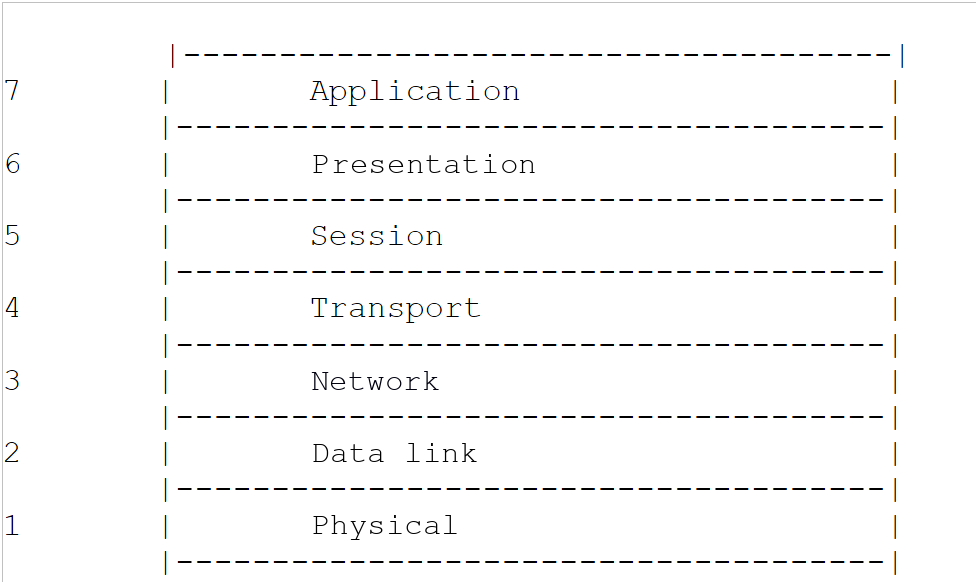

12. Programación web
12.1. Visión general
12.1.1. Protocolos de Internet
Aquí presentamos una introducción a los protocolos de comunicación de Internet, también conocidos como la suite de protocolos TCP/IP (Transmission Control Protocol / Internet Protocol), llamada así por los dos protocolos principales. Es útil que el lector tenga una comprensión general del funcionamiento de las redes —y en particular de los protocolos TCP/IP— antes de abordar el desarrollo de aplicaciones distribuidas. Esta presentación se basa en un texto de la guía de administración «Lan Workplace for DOS» de Novell (principios de los años 1990), conservando su estructura y su espíritu pero actualizado: la Internet de 2026 ya no es del todo la de 1990.
El concepto general de crear una red de computadoras heterogéneas proviene de las investigaciones realizadas por la DARPA (Defense Advanced Research Projects Agency) en Estados Unidos. La DARPA desarrolló el conjunto de protocolos conocido como TCP/IP, que permite que máquinas heterogéneas se comuniquen entre sí. Estos protocolos se probaron en una red llamada ARPAnet, que más tarde se convirtió en Internet (ARPAnet adoptó TCP/IP el 1 de enero de 1983). Los protocolos TCP/IP definen formatos y reglas de transmisión y recepción que son independientes de la arquitectura de la red y del hardware utilizado.
La red diseñada por la DARPA y gestionada por los protocolos TCP/IP es una red de conmutación de paquetes. Una red de este tipo transmite la información en pequeños fragmentos llamados paquetes. Así, si una computadora transmite un archivo grande, este se descompone en pequeños fragmentos que se envían por la red para ser reensamblados en el destino. TCP/IP define el formato de estos paquetes, incluyendo en particular:
- el origen del paquete;
- su destino;
- su longitud;
- su tipo.
Los protocolos de Internet se describen en documentos públicos llamados RFC (Request for Comments), publicados por la IETF (Internet Engineering Task Force) y disponibles en www.rfc-editor.org. Citaremos algunos de estos documentos a lo largo de este capítulo.
12.1.2. El modelo OSI
Los protocolos TCP/IP siguen en líneas generales el modelo abierto de red conocido como OSI (Open Systems Interconnection Reference Model), definido por la ISO (International Organization for Standardization). Este modelo describe una red ideal en la que la comunicación entre máquinas puede representarse mediante un modelo de siete capas:

Cada capa recibe servicios de la capa inferior y presta sus propios servicios a la capa superior. Supongamos que dos aplicaciones ubicadas en máquinas distintas, A y B, desean comunicarse: lo hacen en la capa de Aplicación. No necesitan conocer todos los detalles del funcionamiento de la red: cada aplicación entrega la información que desea transmitir a la capa inferior, la capa de Presentación. La aplicación solo necesita, por lo tanto, conocer las reglas de interfaz con la capa de Presentación. Una vez que la información está en la capa de Presentación, esta la pasa, según otras reglas, a la capa de Sesión, y así sucesivamente, hasta que la información llega al medio físico y se transmite físicamente a la máquina de destino. Allí, sufrirá el proceso inverso al que experimentó en la máquina emisora.
En cada capa, el proceso emisor encargado de enviar la información la envía a un proceso receptor de la otra máquina que pertenece a la misma capa. Lo hace según ciertas reglas conocidas como el protocolo de la capa. La comunicación real desciende por las capas de la máquina A, atraviesa la red física y luego asciende por las capas de la máquina B; sin embargo, cada capa percibe que se comunica directamente con la capa correspondiente de la otra máquina.
Las funciones de las diferentes capas son las siguientes:
Capa | Función |
Física | Asegura la transmisión de bits a través de un medio físico (cable de cobre, cable de fibra óptica, ondas de radio). A este nivel, las consideraciones clave incluyen la codificación de la información en señales y el método de transmisión. |
Enlace de datos | Abstrae las características físicas de la capa Física. Divide la información en tramas, detecta (y a veces corrige) los errores de transmisión y gestiona el acceso al medio compartido. |
Red | Gestiona la ruta que debe seguir la información enviada por la red. Esto se denomina enrutamiento: determinar la ruta que debe tomar la información para llegar a su destino. |
Transporte | Permite la comunicación entre dos aplicaciones, mientras que las capas anteriores solo permitían la comunicación entre máquinas. Uno de los servicios que presta esta capa es la multiplexación: la capa de transporte utiliza un único enlace de red (de máquina a máquina) para transmitir datos pertenecientes a varias aplicaciones. |
Sesión | Proporciona servicios que permiten a una aplicación abrir y mantener una sesión de trabajo en una máquina remota. |
Presentación | Estandariza la representación de los datos entre máquinas diferentes. Los datos de la máquina A son «formateados» por la capa de Presentación de la máquina A según un formato estándar antes de enviarse por la red. Una vez que llegan a la capa de Presentación de la máquina de destino B, que los reconoce por su formato estándar, los datos se reformatean para que la aplicación de la máquina B pueda reconocerlos. |
Aplicación | En este nivel se encuentran las aplicaciones generalmente cercanas al usuario, como el correo electrónico, la Web o la transferencia de archivos. |
12.1.3. El modelo TCP/IP
El modelo OSI es un modelo de referencia que nunca se implementó tal cual. La suite de protocolos TCP/IP, que se ha convertido en el estándar, se organiza en solo cuatro capas:

Las capas de Sesión y de Presentación no existen como tales en TCP/IP: sus funciones, cuando son necesarias, las asumen las propias aplicaciones o protocolos intermedios como TLS (cifrado de los intercambios de datos), que se inserta entre TCP y la aplicación.
La capa de acceso a la red
En las redes de área local, la tecnología dominante hoy en día es Ethernet para las conexiones cableadas y Wi-Fi (estándares IEEE 802.11) para las inalámbricas. Otras tecnologías, como Token Ring, han desaparecido.
Ethernet es el nombre que se da a una tecnología de red de área local de conmutación de paquetes inventada en Xerox a principios de los años 1970 y estandarizada por Xerox, Intel y Digital Equipment en 1980, y posteriormente por el IEEE (estándar 802.3). La Ethernet original consistía en un cable coaxial al que se conectaban todas las máquinas (topología de bus), con una velocidad de transmisión de 10 megabits por segundo:

Era una red de difusión: una máquina que transmitía enviaba por el cable información que incluía la dirección de la máquina de destino; todas las máquinas conectadas la recibían y solo el destinatario la conservaba. Como varias máquinas podían decidir transmitir al mismo tiempo, era necesario detectar las colisiones: este era el método de acceso CSMA/CD (Carrier Sense Multiple Access / Collision Detect). Cada transmisor escuchaba el cable antes de transmitir (CSMA) y, mientras transmitía, verificaba que lo que circulaba por el cable fuera efectivamente lo que había transmitido; de lo contrario, se había producido una colisión (CD): cada uno dejaba de transmitir y volvía a intentarlo después de un retardo aleatorio.
La Ethernet moderna ha evolucionado considerablemente: los dispositivos se conectan mediante cables de par trenzado o de fibra óptica a un switch, que dirige cada trama al puerto específico del destinatario. Las conexiones son full dúplex (transmisión y recepción simultáneas): ya no hay colisiones y CSMA/CD ha quedado obsoleto. Las velocidades típicas van de 1 a 10 gigabits por segundo, y mucho más en los centros de datos.
Lo que no ha cambiado es el direccionamiento de 48 bits: cada tarjeta de red tiene una dirección, llamada dirección física o dirección MAC (Media Access Control), generalmente escrita como seis bytes hexadecimales (por ejemplo, [00:1A:2B:3C:4D:5E]). El fabricante la programa en la tarjeta pero, contrariamente a lo que se ha afirmado durante mucho tiempo, puede modificarse mediante software: los sistemas operativos modernos incluso utilizan direcciones MAC aleatorias en las redes Wi-Fi para evitar que un dispositivo sea rastreado de una red a otra.
La capa de Internet (capa de red)
En esta capa se encuentran los siguientes protocolos:
Protocolo | Función |
IP (Internet Protocol) | entrega paquetes entre dos nodos de la red, en la versión 4 (IPv4) o 6 (IPv6) |
ICMP (Internet Control Message Protocol) | facilita la comunicación entre el programa del protocolo IP de una máquina y el de otra máquina. Es, por lo tanto, un protocolo de intercambio de mensajes de control dentro del propio protocolo IP |
ARP (Address Resolution Protocol) | asocia la dirección IP de una máquina con la dirección física de esa máquina (en IPv6, esta función la cumple el protocolo NDP, Neighbor Discovery Protocol) |
También se menciona a veces el protocolo RARP (Reverse Address Resolution Protocol), que realizaba la asociación inversa. Hace mucho que quedó obsoleto en favor de DHCP, del que hablaremos más adelante.
La capa de transporte
Esta capa incluye los siguientes protocolos:
Protocolo | Función |
TCP (Transmission Control Protocol) | garantiza la entrega fiable y ordenada de la información entre dos aplicaciones |
UDP (User Datagram Protocol) | realiza la entrega no fiable de la información entre dos aplicaciones |
El protocolo QUIC (2021), en el que se basa HTTP/3, es un protocolo de transporte fiable y cifrado construido sobre UDP.
La capa de aplicación
Aquí encontramos diversos protocolos, que detallaremos un poco más adelante:
Protocolo | Función |
HTTP, HTTPS (HyperText Transfer Protocol) | El protocolo de la Web: un cliente (navegador, aplicación) solicita recursos a un servidor web. HTTPS es HTTP cifrado mediante TLS |
DNS (Domain Name System) | convierte un nombre de host en una dirección IP |
SMTP (Simple Mail Transfer Protocol) | permite el envío de correos electrónicos |
POP3, IMAP | permiten leer el correo electrónico almacenado en un servidor |
SSH (Secure Shell) | permite conectarse a una máquina remota y ejecutar comandos en ella, mediante cifrado. Reemplazó a TELNET, que cumplía la misma función sin cifrado |
FTP (File Transfer Protocol), SFTP | permiten la transferencia de archivos |
DHCP (Dynamic Host Configuration Protocol) | permite que una máquina obtenga automáticamente su dirección IP y su configuración de red |
12.1.4. Cómo funcionan los protocolos de Internet
Las aplicaciones desarrolladas en el entorno TCP/IP suelen utilizar varios de los protocolos de este entorno. Un programa de aplicación se comunica con la capa más alta de los protocolos. Esta capa pasa la información a la capa inferior, y así sucesivamente, hasta llegar al medio físico. Allí, la información se transfiere físicamente a la máquina receptora, donde atravesará las mismas capas, esta vez en orden inverso, hasta llegar a la aplicación destinataria de la información enviada. El siguiente diagrama muestra el recorrido de la información:

Veamos un ejemplo: una aplicación que envía un archivo a otra máquina mediante TCP.
- La aplicación entrega a la capa de transporte una secuencia de bytes que se debe transmitir;
- la capa de transporte divide esta secuencia de bytes en segmentos TCP y añade al principio de cada segmento un encabezado que contiene, entre otras cosas, los números de puerto de origen y de destino, así como un número de secuencia. Los segmentos se pasan a la capa de red, regida por el protocolo IP;
- La capa IP crea un paquete que encapsula el segmento TCP recibido. En el encabezado de este paquete coloca las direcciones IP de las máquinas de origen y de destino. También determina la dirección física de la máquina a la que se debe entregar el paquete (la propia máquina de destino o un enrutador). El paquete completo se pasa a la capa de acceso a la red, es decir, a la tarjeta de red que conecta la máquina a la red física;
- allí, el paquete IP se encapsula a su vez en una trama física y se envía a su destinatario por el medio;
- En la máquina de destino, la capa de acceso a la red realiza el proceso inverso: desencapsula el paquete IP de la trama física y lo pasa a la capa IP;
- la capa IP verifica que el paquete sea válido: calcula una suma de verificación de su encabezado, que debe coincidir con la que figura en el encabezado del paquete. Si no es así, el paquete se descarta;
- si el paquete se considera válido, la capa IP desencapsula el segmento TCP que contiene y lo pasa hacia arriba, a la capa de transporte;
- la capa TCP también verifica una suma de verificación del segmento. Si es correcta, envía un acuse de recibo a la máquina de origen; de lo contrario, el segmento se ignora (y el origen lo reenviará);
- Mediante los números de secuencia, la capa TCP reordena los segmentos en el orden correcto;
- a la capa TCP solo le queda transmitir la parte de datos de los segmentos a la aplicación de destino, identificada por el número de puerto de destino.
12.1.5. Problemas de direccionamiento en Internet
Un nodo de red puede ser una computadora, una impresora, un teléfono, un dispositivo conectado; en realidad, cualquier cosa capaz de comunicarse mediante los protocolos TCP/IP. Cada nodo tiene una dirección física cuyo formato depende del tipo de red. En una red Ethernet o Wi-Fi, la dirección física se codifica con 6 bytes.
La dirección de Internet (IP) de un nodo es una dirección lógica: es independiente del hardware y de la red utilizada. En IPv4, es una dirección de 4 bytes que identifica a la vez una red y un nodo de esa red. Normalmente se representa como cuatro números (los valores de los cuatro bytes) separados por un punto. Por ejemplo, la dirección de la máquina llamada «Lagaffe» de la Facultad de Ciencias de Angers fue durante mucho tiempo 193.49.144.1, y la de la máquina llamada «Liny» era 193.49.144.9. De ello se podía deducir que la dirección de la red local era 193.49.144.0 y que podía haber hasta 254 nodos en esa red.
Como las direcciones IP son independientes de la red física, una máquina de la red A puede comunicarse con una máquina de la red B sin preocuparse por el tipo de red en que se encuentra esta última: solo necesita conocer su dirección IP. El protocolo IP de cada red se encarga de la conversión entre las direcciones IP y las direcciones físicas en ambos sentidos.
Todas las direcciones IP públicas deben ser únicas. Su asignación sigue una estructura jerárquica: la IANA (Internet Assigned Numbers Authority) distribuye bloques de direcciones a cinco registros regionales, entre ellos RIPE NCC para Europa, que los redistribuyen a operadores y grandes organizaciones. Estas entidades los asignan luego a sus clientes. El administrador de una red que ha recibido el bloque de 193.49.144.0 a 193.49.144.255 puede asignar las direcciones de 193.49.144.1 a 193.49.144.254 como mejor le parezca. En Francia, el INRIA fue durante mucho tiempo responsable de asignar las direcciones; hace bastante tiempo que ya no es así.
12.1.5.1. Las clases de direcciones IP y la notación CIDR
Una dirección como IPv4 es una secuencia de 4 bytes escrita como I1.I2.I3.I4, que en realidad contiene dos informaciones:
- la dirección de la red (los bits más significativos);
- la dirección de un nodo dentro de esa red (los bits menos significativos).
Originalmente, el tamaño de estos dos campos se determinaba por el valor del primer byte. Las direcciones IP se dividían en tres clases principales:
Clase | Primer byte | Red / Nodo | Número de redes y de nodos |
A | 1 a 126 (bit más significativo 0) | R1.N1.N2.N3: red de 1 byte (7 bits significativos), nodo de 3 bytes | 126 redes de 2²⁴ - 2 nodos (aproximadamente 16 millones) |
B | 128 a 191 (10 bits más significativos) | R1.R2.N1.N2: red de 2 bytes (14 bits significativos), nodo de 2 bytes | 2¹⁴ = 16,384 redes de 2¹⁶ - 2 = 65,534 nodos |
C | 192 a 223 (110 bits más significativos) | R1.R2.R3.N1: red de 3 bytes (21 bits significativos), nodo de 1 byte | 2²¹ redes (aproximadamente 2 millones) con 254 nodos |
Como la dirección de la máquina Lagaffe es 193.49.144.1, el byte más significativo es 193, que es 11000001 en binario: la red era de clase C.
Esta clasificación resultó demasiado rígida: una organización con 300 máquinas debía usar una red de clase B, desperdiciando más de 65,000 direcciones. Desde 1993 (RFC 1518 y 1519), las clases se han abandonado en favor del enrutamiento sin clases (CIDR, Classless Inter-Domain Routing). El límite entre la parte de red y la parte de host puede fijarse en cualquier bit; se indica mediante la longitud del prefijo de red, después de una barra:
- 193.49.144.0/24: los primeros 24 bits designan la red y los últimos 8 bits designan el nodo. Esta red contiene las direcciones de 193.49.144.0 a 193.49.144.255;
- 10.0.0.0/8: una red con 2²⁴ direcciones;
- 192.168.1.0/26: una red de 2⁶ = 64 direcciones, que van de 192.168.1.0 a 192.168.1.63.
Aún se usa la antigua notación de la máscara de subred, que expresa lo mismo: el prefijo /24 corresponde a la máscara 255.255.255.0. Los términos «clase A, B, C» siguen siendo de uso común, pero ya no corresponden a ningún mecanismo real.
12.1.5.2. Direcciones reservadas, direcciones privadas y NAT
Ciertas direcciones tienen un propósito específico:
- una dirección cuya parte de host está formada únicamente por 0 designa la red misma: 193.49.144.0 es la dirección de la red 193.49.144.0/24;
- una dirección cuya parte de host está formada únicamente por 1 es una dirección de difusión (broadcast): 193.49.144.255 designa a todos los hosts de la red 193.49.144.0/24. Por lo tanto, estas dos direcciones no pueden asignarse a un nodo: una red /24 con 256 direcciones ofrece solo 254 direcciones utilizables;
- las direcciones 127.0.0.0/8, y en la práctica 127.0.0.1, son direcciones de loopback: una máquina las usa para referirse a sí misma sin pasar por la red. El nombre [localhost] se les asocia;
- los bloques 10.0.0.0/8, 172.16.0.0/12 y 192.168.0.0/16 (RFC 1918) están reservados para redes privadas: pueden usarse libremente dentro de una empresa o un hogar, pero no se enrutan en Internet;
- los bloques 192.0.2.0/24, 198.51.100.0/24 y 203.0.113.0/24 (RFC 5737) están reservados para documentación y ejemplos.
El número de direcciones IPv4 (2³², es decir, algo más de 4000 millones) es insuficiente para todas las máquinas conectadas. El fondo central de direcciones de la IANA se agotó en 2011 y el de RIPE NCC en 2019. La escasez se sorteó mediante la traducción de direcciones de red (NAT, Network Address Translation): los dispositivos de un hogar tienen direcciones privadas (como 192.168.1.x), y el enrutador que los conecta a Internet las «traduce» a su propia dirección pública única. La solución a largo plazo es IPv6.
12.1.5.3. Las direcciones IPv6
IPv6 (RFC 2460 en 1998, ahora RFC 8200) codifica las direcciones con 128 bits, lo que da 2¹²⁸ direcciones posibles (aproximadamente 3.4 × 10³⁸), de modo que ya no hay que preocuparse por la escasez. Una dirección IPv6 se escribe como ocho grupos de cuatro dígitos hexadecimales separados por dos puntos:
Pueden omitirse los ceros a la izquierda de cada grupo, y una única secuencia de grupos de ceros puede reemplazarse por [::]. La dirección anterior se escribe entonces [2001:db8::8a2e:0:370:7334]. La dirección de loopback, equivalente a 127.0.0.1, es [::1]. En una URL, la dirección IPv6 se coloca entre corchetes para evitar confundir sus dos puntos con los que preceden al puerto: [http://[::1]:8080/].
IPv6 introduce otras simplificaciones: el encabezado del paquete tiene longitud fija, la configuración automática de direcciones está integrada por defecto y la traducción de direcciones NAT ya no es necesaria. Su adopción ha sido lenta, pero una parte significativa y creciente del tráfico de Internet pasa ya por IPv6 (Google, por ejemplo, publica la proporción de sus usuarios que acceden mediante IPv6), y los principales proveedores de acceso a Internet franceses lo ofrecen a sus abonados. Ambas versiones coexisten: la mayoría de las máquinas tienen direcciones IPv4 e IPv6 (lo que se conoce como «doble pila», o dual stack), y los programas deben ser capaces de manejar ambas.
12.1.5.4. Protocolos de conversión entre direcciones IP y direcciones físicas
Hemos visto que, cuando se transmiten datos de una máquina a otra, al pasar por la capa IP se encapsulan en paquetes. Estos paquetes tienen la siguiente forma:

El paquete IP contiene, por lo tanto, las direcciones IP de las máquinas de origen y de destino. Cuando este paquete se transmite a la capa encargada de enviarlo por la red física, se le añade información adicional para formar la trama física que finalmente se enviará por la red. Por ejemplo, el formato de una trama en una red Ethernet es el siguiente:

Los primeros 8 bytes (preámbulo) sirven para la sincronización; el campo de 2 bytes que precede a los datos indica, en la forma más común de la trama Ethernet, el tipo de protocolo transportado (IPv4, IPv6, ARP…) en lugar de la longitud del paquete. En la trama final se incluyen las direcciones físicas de las máquinas de origen y de destino (en la trama real, la dirección de destino precede a la de origen, a diferencia del orden que se muestra en el diagrama). ¿Cómo se obtienen?
La máquina emisora, que conoce la dirección IP de la máquina con la que desea comunicarse, obtiene la dirección física de esa máquina mediante el protocolo ARP (Address Resolution Protocol):
- envía un tipo especial de paquete, llamado paquete ARP, que contiene la dirección IP de la máquina cuya dirección física se busca. También incluye su propia dirección IP, así como su dirección física;
- este paquete se envía a todos los nodos de la red local (difusión);
- estos nodos reconocen la naturaleza especial del paquete. El nodo que reconoce su dirección IP en el paquete responde enviando su dirección física al emisor. Puede hacerlo porque encontró en el paquete la dirección IP y la dirección física del emisor;
- El emisor recibe así la dirección física que buscaba. La guarda en una caché para poder usarla más adelante si es necesario enviar otros paquetes al mismo destinatario.
En IPv6, el mismo servicio lo presta el protocolo NDP (Neighbor Discovery Protocol), que se apoya en mensajes ICMPv6.
Queda una pregunta: ¿cómo conoce una máquina su propia dirección IP? Puede especificarse en un archivo de configuración de la máquina; esto sigue siendo la práctica en los servidores. Sin embargo, cuando un administrador necesita reorganizar la red, modificar uno por uno los archivos de configuración de todas las máquinas es tedioso y propenso a errores. El protocolo RARP permitía que una máquina solicitara su dirección IP a un servidor a partir de su dirección física. Ha sido reemplazado por DHCP (Dynamic Host Configuration Protocol, RFC 2131): al arrancar, la máquina envía una solicitud por difusión en la red; un servidor (como un enrutador doméstico o un servidor dedicado en una empresa) le asigna una dirección por un tiempo limitado (una concesión o lease), junto con el resto de su configuración: prefijo de red, dirección del enrutador y direcciones de los servidores DNS. El administrador solo debe configurar el servidor DHCP. En IPv6, una máquina también puede construir su propia dirección a partir del prefijo anunciado por el enrutador (autoconfiguración SLAAC).
12.1.6. La capa de red, llamada capa IP, de Internet
El protocolo IP define el formato que deben tener los paquetes y cómo deben tratarse al enviarlos o recibirlos. Este tipo particular de paquete se llama datagrama IP. Ya hablamos de él:
Lo importante es que, además de los datos que se van a transmitir, el datagrama IP contiene las direcciones IP de las máquinas de origen y de destino. De este modo, la máquina de destino sabe quién le envía un mensaje.
A diferencia de una trama de red, cuya longitud viene determinada por las características físicas de la red que recorre, la longitud del datagrama IP la fija el software y será, por lo tanto, la misma en diferentes redes físicas. Hemos visto que, al descender de la capa de red a la capa física, el datagrama IP se encapsula en una trama física.
Las tramas físicas viajan de nodo en nodo hacia su destino, que puede no estar en la misma red física que la máquina emisora. El paquete IP puede, por lo tanto, encapsularse sucesivamente en diferentes tramas físicas en los nodos que conectan dos redes de tipos distintos. También es posible que el paquete IP sea demasiado grande para encapsularse en una trama física (la carga útil de una trama Ethernet está limitada a 1,500 bytes). En IPv4, el nodo en el que se presenta este problema divide entonces el paquete IP en fragmentos, que solo se reensamblarán en su destino final. En IPv6, los enrutadores ya no fragmentan los paquetes: corresponde al emisor determinar el tamaño máximo aceptado a lo largo de la ruta y ajustar en consecuencia el tamaño de sus paquetes.
12.1.6.1. Enrutamiento
El enrutamiento es el método para dirigir los paquetes IP hacia su destino. Hay dos métodos: el enrutamiento directo y el enrutamiento indirecto.
Enrutamiento directo
El enrutamiento directo se refiere a la transmisión de un paquete IP directamente del emisor al destinatario dentro de la misma red:
- la máquina que envía un datagrama IP tiene la dirección IP del destinatario;
- obtiene la dirección física del destinatario mediante el protocolo ARP, o de su caché si esa dirección ya fue obtenida;
- envía el paquete por la red a esa dirección física.
Enrutamiento indirecto
El enrutamiento indirecto se refiere a la transmisión de un paquete IP a un destino ubicado en una red distinta de aquella a la que pertenece el emisor. En este caso, las partes de «red» de las direcciones IP de las máquinas de origen y de destino son diferentes; la máquina de origen lo detecta comparando la dirección de destino con su propio prefijo de red. Entonces envía el paquete a un nodo especial llamado enrutador, que conecta la red local con otras redes y cuya dirección IP conoce la máquina de origen (esto se denomina puerta de enlace predeterminada, que normalmente proporciona DHCP). Un enrutador está conectado al menos a dos redes y tiene una dirección IP en cada una de ellas:

En nuestro ejemplo anterior:
- La red n.º 1 tiene la dirección 193.49.144.0/24 y la red n.º 2 tiene la dirección 193.49.145.0/24;
- dentro de la red n.º 1, el enrutador tiene la dirección 193.49.144.6, y dentro de la red n.º 2, tiene la dirección 193.49.145.3.
La función del enrutador es tomar el paquete IP que recibe, contenido en una trama física de la red n.º 1, y colocarlo en una trama física que pueda circular por la red n.º 2. Si la dirección IP de destino del paquete se encuentra en la red n.º 2, el enrutador le enviará el paquete directamente; de lo contrario, lo enviará a otro enrutador que conecte la red n.º 2 con la red n.º 3, y así sucesivamente. Los enrutadores de Internet intercambian constantemente información sobre las redes a las que pueden llegar (protocolos de enrutamiento como BGP entre operadores) para construir sus tablas de enrutamiento.
12.1.6.2. Mensajes de error y de control
También en la capa de red, y por lo tanto al mismo nivel que el protocolo IP, se encuentra el protocolo ICMP (Internet Control Message Protocol). Se utiliza para enviar mensajes sobre el funcionamiento interno de la red: nodo inaccesible, paquete que ha atravesado demasiados enrutadores, etc. Los mensajes ICMP se encapsulan en paquetes IP y se envían por la red. Las capas IP de los distintos nodos realizan las acciones apropiadas según los mensajes ICMP que reciben. Así, una aplicación nunca ve por sí misma estos problemas propios de la red. Los comandos [ping] (que envían mensajes ICMP “Echo Request” y esperan mensajes “Echo Reply”) y [traceroute] / [tracert] (que muestra los enrutadores atravesados) se basan en ICMP.
12.1.7. La capa de transporte: los protocolos UDP y TCP
12.1.7.1. El protocolo UDP: User Datagram Protocol
El protocolo UDP permite un intercambio de datos no confiable entre dos puntos; es decir, no se garantiza que un paquete llegue a su destino, ni tampoco el orden en que llegan los paquetes. La aplicación, si lo desea, puede encargarse de esto por sí misma, por ejemplo, esperando un acuse de recibo después de enviar un mensaje antes de enviar el siguiente.
Hasta ahora, en el nivel de red, hemos hablado de direcciones de máquinas, como las direcciones IP. Sin embargo, en una misma máquina pueden coexistir simultáneamente distintos procesos, y todos ellos pueden comunicarse entre sí. Por lo tanto, al enviar un mensaje, se debe especificar no solo la dirección IP de la máquina de destino, sino también el “nombre” del proceso de destino. Este nombre es en realidad un número de 16 bits (de 1 a 65 535), llamado número de puerto. Ciertos números están reservados para aplicaciones estándar: el puerto 53 para DNS, el 80 para HTTP, el 443 para HTTPS, el 25 para SMTP, y así sucesivamente. Los puertos inferiores a 1024 se denominan “bien conocidos”; en Linux, se requieren privilegios especiales para iniciar un servicio en alguno de ellos. Los ejemplos de este capítulo utilizan puertos de los rangos 27100–27199 y 27200–27299.
Los paquetes manejados por el protocolo UDP se denominan datagramas. Tienen la siguiente forma:

Estos datagramas se encapsulan en paquetes IP y luego en tramas físicas. UDP se utiliza cuando la velocidad es más importante que la fiabilidad, o cuando la propia aplicación gestiona las pérdidas: DNS (una pregunta, una respuesta), la transmisión de audio y video en vivo, los juegos en línea y el protocolo QUIC de HTTP/3.
12.1.7.2. El protocolo TCP: Transmission Control Protocol
Para comunicaciones seguras, el protocolo UDP es insuficiente: el desarrollador de la aplicación debe crear por sí mismo un protocolo que verifique que los paquetes se enrutan correctamente. El protocolo TCP evita estos problemas. Sus características son las siguientes:
- El proceso que desea transmitir datos establece primero una conexión con el proceso que recibirá la información que está a punto de transmitir. Esta conexión se establece entre un puerto de la máquina emisora y un puerto de la máquina receptora mediante un intercambio de tres segmentos (SYN, SYN-ACK, ACK: el “acuerdo de tres pasos”). Así se crea un circuito virtual entre los dos puertos, que quedará reservado exclusivamente para los dos procesos que establecieron la conexión;
- todos los bytes transmitidos por el proceso de origen llegan a su destino en el orden en que fueron transmitidos, algo que el protocolo UDP no garantiza, ya que los paquetes pueden seguir caminos distintos;
- La información transmitida es continua: es un flujo de bytes. El proceso transmisor envía la información a su propio ritmo. Esta información no se envía necesariamente de inmediato: el protocolo TCP puede esperar hasta tener suficientes datos para enviar. Los datos se colocan en una estructura llamada segmento TCP. Una vez lleno este segmento, se transmite a la capa IP, donde se encapsula en un paquete IP. Una implicación importante para el programador: una “línea” enviada de una sola vez puede llegar en varios fragmentos, y varias líneas pueden llegar juntas. Corresponde a la aplicación identificar los límites de sus mensajes (nosotros usaremos el carácter de fin de línea para ello);
- Cada segmento enviado por el protocolo TCP está numerado. El protocolo TCP receptor verifica que está recibiendo los segmentos en secuencia. Por cada segmento recibido correctamente, envía un acuse de recibo al emisor;
- si, transcurrido cierto tiempo, el protocolo TCP que envió un segmento no recibe un acuse de recibo, retransmite el segmento en cuestión, garantizando así la calidad del servicio de entrega de la información;
- El circuito virtual establecido entre los dos procesos que se comunican es full-duplex: la información puede circular en ambos sentidos simultáneamente. Así, el proceso de destino puede enviar acuses de recibo incluso mientras el proceso de origen continúa enviando información. Esto permite, por ejemplo, que el protocolo TCP de origen envíe varios segmentos sin esperar acuses de recibo. Si, transcurrido cierto tiempo, se da cuenta de que no ha recibido el acuse de recibo de un segmento específico n.º n, reanudará la transmisión de segmentos a partir de ese punto;
- TCP también regula su tasa de datos para evitar sobrecargar al receptor (control de flujo) o a la red (control de congestión).
12.1.8. La capa de aplicación
Por encima de los protocolos UDP y TCP se encuentran diversos protocolos estándar:
TELNET y SSH
TELNET permite que un usuario de la máquina A se conecte a la máquina B (a menudo llamada máquina host) como si tuviera un terminal conectado a esa máquina. TELNET se basa en TCP. Sus intercambios de datos, incluidas las contraseñas, se transmiten en texto plano: ha sido reemplazado por SSH (Secure Shell), que ofrece el mismo servicio de forma cifrada y que también se usa para la transferencia segura de archivos (SFTP, SCP) y para crear túneles. El programa cliente [telnet] fue durante mucho tiempo una herramienta cómoda para comunicarse “manualmente” con un servidor TCP: veremos cómo reemplazarlo.
FTP (File Transfer Protocol)
Este protocolo permite el intercambio de archivos entre dos máquinas remotas, así como operaciones con archivos, como la creación de directorios. Se basa en el protocolo TCP. Al igual que TELNET, transmite las contraseñas en texto plano; está siendo reemplazado por SFTP y HTTPS.
TFTP (Trivial File Transfer Protocol)
Este protocolo es una variante simplificada de FTP. Se basa en el protocolo UDP. Todavía se utiliza para arrancar máquinas a través de la red.
DNS (Domain Name System)
Cuando un usuario quiere intercambiar información con una máquina remota, debe conocer la dirección IP de esa máquina. Resulta mucho más cómodo referirse a una máquina por un nombre que por su dirección IP. Esto plantea el problema de la unicidad de los nombres: hay miles de millones de máquinas interconectadas. Se podría imaginar una autoridad centralizada que asignara los nombres, pero sería muy engorroso. El control de los nombres se ha distribuido en dominios. Cada dominio es administrado por una organización que tiene total libertad para elegir los nombres dentro de su dominio. Así, las máquinas de Francia suelen pertenecer al dominio [fr], administrado por AFNIC (INRIA lo administró hasta la creación de AFNIC en 1997). Para simplificar aún más las cosas, el control se descentraliza todavía más: se crean dominios dentro del dominio [fr]. Por ejemplo, la Universidad de Angers posee el dominio [univ-angers.fr]; el departamento que lo administra tiene total libertad para nombrar las computadoras de la red de la universidad y para crear subdominios.
El nombre completo de una máquina (FQDN, Fully Qualified Domain Name) especifica la jerarquía de dominios a los que pertenece, del más específico al más general: [www.univ-angers.fr]. Dentro de un dominio, a menudo se pueden usar nombres relativos, que el sistema completa automáticamente.
Por lo tanto, una aplicación puede referirse a una máquina por su nombre. Sin embargo, en última instancia aún es necesario obtener la dirección IP de esa máquina. Supongamos que se quiere establecer comunicación desde la máquina A hacia la máquina B:
- La máquina A consulta primero un archivo local de correspondencias ([/etc/hosts] en Linux y macOS, [C:\Windows\System32\drivers\etc\hosts] en Windows), luego su caché;
- de lo contrario, consulta al servidor DNS, cuya dirección figura en su configuración (generalmente proporcionada por DHCP). Le envía una solicitud DNS que contiene el nombre de la máquina buscada. Si el servidor consultado conoce la respuesta o la tiene en caché, devuelve la dirección IP correspondiente a la máquina A. De lo contrario, a su vez consulta, comenzando por los servidores raíz, a los servidores responsables del dominio [fr], luego de [univ-angers.fr], y así sucesivamente, hasta obtener la respuesta, que luego se transmitirá de vuelta hasta la máquina A.
El dominio DNS asocia diversos tipos de registros a un nombre: A (dirección IPv4), AAAA (dirección IPv6), CNAME (alias de otro nombre), MX (servidores de correo del dominio), etc.
HTTP y HTTPS (HyperText Transfer Protocol)
Este es el protocolo de la Web y, con diferencia, el más utilizado hoy en día: no solo por los navegadores, sino también por las aplicaciones que intercambian datos (los servicios web de los que se hablará en el próximo capítulo). Lo examinaremos en detalle. HTTPS es HTTP transmitido a través de una conexión cifrada mediante TLS (Transport Layer Security); esta es hoy la forma estándar de la Web.
SMTP, POP3 e IMAP
SMTP se utiliza para enviar correos electrónicos, mientras que POP3 e IMAP se utilizan para leer los correos almacenados en un servidor. También hablaremos de ellos.
XDR, RPC, NFS
Por último, mencionemos tres protocolos definidos por Sun Microsystems, la empresa que creó Java: XDR (eXternal Data Representation), que especifica una representación de datos estándar e independiente de la máquina; RPC (Remote Procedure Call), un protocolo de llamada a procedimientos remotos basado en XDR; NFS (Network File System), que permite que una máquina “vea” el sistema de archivos de otra máquina y se basa en RPC. NFS sigue en uso en el mundo Unix. El concepto de llamada a procedimientos remotos ha sido adoptado por numerosos sucesores; hoy en día, estos incluyen los servicios web REST (basados en HTTP) y gRPC (basado en HTTP/2).
12.1.9. Conclusión
En esta introducción hemos presentado algunas de las principales características de los protocolos de Internet. Para explorar este campo con mayor profundidad, el lector puede consultar la obra fundamental de Douglas Comer, *Internetworking with TCP/IP, Volume 1 ” (Pearson, 6.ª edición), cuyas ediciones anteriores han sido traducidas al francés, así como las RFC citadas en este capítulo. Para HTTP, la documentación de Mozilla en developer.mozilla.org/en-US/docs/Web/HTTP es una excelente introducción.
12.2. Clases de administración de direcciones IP
Una máquina en Internet se identifica mediante una dirección IP, que puede adoptar dos formas:
- IPv4: codificada en 32 bits y representada por una cadena de la forma "I1.I2.I3.I4", donde In es un número entre 0 y 255;
- IPv6: codificada en 128 bits y representada por una cadena de ocho grupos de dígitos hexadecimales separados por dos puntos, como "2001:db8::8a2e:370:7334". Hoy en día ya no podemos ignorar estas direcciones: nuestros programas las aceptarán.
Una máquina también puede identificarse por un nombre. Este nombre no es obligatorio, ya que las aplicaciones siempre utilizan, en última instancia, las direcciones IP de las máquinas. Los nombres están ahí para facilitar la vida a los usuarios: es más fácil pedirle a un navegador la URL [https://kotlinlang.org] que la URL formada a partir de una de las direcciones IP de este sitio, la cual, por cierto, cambia según el lugar desde donde se realice la consulta.
Una máquina puede tener varias direcciones IP: una dirección de loopback, una dirección por cada red a la que está conectada, y direcciones IPv4 e IPv6.
La biblioteca estándar de Kotlin no ofrece sus propias clases de red: en la JVM, un programa Kotlin utiliza directamente las del JDK, en el paquete [java.net]. Por lo tanto, todo este capítulo se basa en las mismas clases que el curso de Java; lo que cambia es la forma de utilizarlas: propiedades en lugar de los accesores [getXxx], funciones de extensión de la biblioteca estándar, [use] para cerrar recursos y la ausencia de excepciones verificadas.
Una dirección IP puede representarse de dos maneras:
- como una cadena como "I1.I2.I3.I4" o "2001:db8::1";
- como un objeto de tipo [InetAddress] (paquete [java.net], que debe importarse: a diferencia de un archivo fuente compacto de Java, un archivo Kotlin importa automáticamente solo los paquetes [kotlin.*], [kotlin.collections.*], [kotlin.io.*], [kotlin.text.*]… y [java.lang.*]).
La clase InetAddress
La clase [InetAddress] no tiene constructor público: sus instancias se crean mediante métodos constructores estáticos. Tiene dos clases derivadas, [Inet4Address] e [Inet6Address], una para cada versión de IP. Entre sus métodos se encuentran los siguientes (Kotlin trata los métodos sin parámetros [getXxx()] e [isXxx()] como propiedades: escribimos [address.hostAddress] en lugar de [address.getHostAddress()], y [address.isLoopbackAddress]):
Método | Función |
static InetAddress ofLiteral(String string) | (Java 22) convierte una dirección IPv4 o IPv6 escrita en dígitos en un objeto [InetAddress], sin consultar nunca el DNS; lanza una [IllegalArgumentException] si la cadena no es una dirección IP. [Inet4Address.ofLiteral] e [Inet6Address.ofLiteral] aceptan solo una de las dos versiones |
static InetAddress getByName(String nameOrAddress) | devuelve la dirección de una máquina identificada por su nombre o por su dirección IP. Si la cadena no es una dirección IP, el nombre se busca en el DNS; lanza una [UnknownHostException] si no se encuentra la máquina |
static InetAddress[] getAllByName(String nameOrAddress) | Igual que el anterior, pero devuelve todas las direcciones IP de la máquina (un [Array<InetAddress>] en Kotlin) |
static InetAddress getLocalHost() | la dirección de la máquina en la que se ejecuta el programa, junto con su nombre |
static InetAddress getLoopbackAddress() | la dirección de loopback (127.0.0.1 o ::1). Un servicio asociado a esta dirección acepta solo clientes ubicados en la misma máquina que él |
byte[] getAddress() | devuelve los bytes de la dirección (4 en IPv4, 16 en IPv6): propiedad [address] de tipo [ByteArray] en Kotlin |
String getHostAddress() | devuelve la dirección en forma de texto: propiedad [hostAddress] |
String getHostName(), String getCanonicalHostName() | el nombre de la máquina (propiedades [hostName], [canonicalHostName]); si el objeto se creó a partir de una dirección IP, este nombre se obtiene mediante una búsqueda “inversa” en el DNS (si esta búsqueda falla, se devuelve la propia dirección) |
boolean isLoopbackAddress(), isSiteLocalAddress(), isAnyLocalAddress()… | devuelven [true] si la dirección es una dirección de loopback, una dirección privada (10.x.y.z, de 172.16.x.y a 172.31.x.y, 192.168.x.y), la dirección “comodín” 0.0.0.0, o ::… (propiedades [isLoopbackAddress], [isSiteLocalAddress]…) |
Los métodos estáticos de una clase Java se invocan en Kotlin igual que en Java, con el nombre de la clase como prefijo: [InetAddress.getByName("localhost")]. No se convierten en propiedades: se escribe [InetAddress.getLoopbackAddress()].
Otras dos clases complementan [InetAddress]:
- [InetSocketAddress] representa un punto de conexión: una dirección IP y un número de puerto. Sus propiedades [address] y [port] proporcionan estos dos datos. El constructor [InetSocketAddress(port)] asocia el puerto con la dirección comodín 0.0.0.0, que se refiere a todas las direcciones de la máquina;
- [NetworkInterface] representa una interfaz de red de la máquina (una tarjeta Ethernet, una tarjeta Wi-Fi, la interfaz de loopback, etc.), junto con sus direcciones IP.
En cambio, el JDK no tiene una clase que represente una red en notación CIDR, como 193.49.144.0/24: la escribiremos nosotros mismos, en forma de una clase de datos que sobrecarga el operador [in]. El programa [Internet01.kt] ilustra estas clases:
Resultados:
Comentarios:
- líneas 3–6: las clases de [java.net] deben importarse;
- líneas 12–13: las cadenas que se van a analizar, en una lista de solo lectura;
- línea 17: [InetAddress.ofLiteral] (Java 22) convierte la cadena en un objeto [InetAddress] si es una dirección IPv4 o IPv6, y lanza una [IllegalArgumentException] en caso contrario (línea 23). Como el objeto de excepción no se utiliza, se llama [_]: el compilador sabe entonces que se ignora intencionalmente;
- línea 18: el operador [is] (el equivalente de [instanceof] en Java) distingue entre las dos versiones de IP: el objeto devuelto es una instancia de [Inet4Address] o de [Inet6Address]. Como [if] en Kotlin es una expresión, reemplaza al operador ternario de Java;
- líneas 19–20: la propiedad [address] (el método Java [getAddress]) devuelve los bytes de la dirección en un [ByteArray], que la función de extensión de la biblioteca estándar de Kotlin [toHexString] muestra en hexadecimal; el parámetro [HexFormat.UpperCase] exige letras mayúsculas. Se trata del [HexFormat] de Kotlin (paquete [kotlin.text], importado automáticamente), que no debe confundirse con la clase [java.util.HexFormat] utilizada en el curso de Java. Se puede ver (línea 2 de los resultados) que 193.49.144.1 está compuesta por los cuatro bytes C1, 31, 90, 01, y (línea 5) que ::1 está compuesta por 15 bytes nulos seguidos de un byte con valor 1;
- líneas 21–22: el mensaje se construye mediante plantillas de cadena; [isLoopbackAddress] e [isSiteLocalAddress] (los métodos Java [isXxx()], tratados como propiedades booleanas) reconocen las direcciones de loopback y las direcciones privadas de la RFC 1918;
- línea 4 de los resultados: una sorpresa. La cadena "192.168.1" fue aceptada y convertida en 192.168.0.1. [ofLiteral] acepta, en efecto, las formas abreviadas históricas de las direcciones IPv4 (en cuyo caso el último número ocupa todos los bytes restantes). Para verificar que una entrada es una dirección IPv4 completa, por lo tanto, también hay que comprobar que contenga cuatro números;
- líneas 5–6 de los resultados: las direcciones IPv6 son mostradas de nuevo por [hostAddress] en forma completa, sin la abreviatura [::] ni los ceros iniciales: [0:0:0:0:0:0:0:1] para [::1]. El prefijo 2001:db8::/32 está reservado para documentación, al igual que 192.0.2.0/24 en IPv4;
- Líneas 29–32: el método más antiguo [getByName] acepta tanto una dirección IP como un nombre de máquina. Como la cadena "256.1.1.1" no es una dirección IP válida (256 no cabe en un solo byte), [getByName] la interpreta como un nombre de host y consulta el DNS, que no la reconoce: esto produce una [UnknownHostException] (línea 9 de los resultados). [ofLiteral] se agregó en Java 22 para evitar esta consulta inesperada al DNS. El mensaje de la excepción proviene aquí de la biblioteca del sistema Linux. La expresión [e::class.simpleName] es la referencia de clase de Kotlin ([KClass]); reemplaza a [e.getClass().getSimpleName()]. Observe que, como Kotlin no tiene excepciones verificadas, no es obligatorio capturar [UnknownHostException]: lo hacemos porque queremos mostrarla, no porque el compilador lo exija;
- Línea 36: la dirección de loopback. La representación de un objeto [InetAddress] mediante [toString], invocado implícitamente por la plantilla [${…}], tiene la forma [name/address], y el nombre queda vacío si se desconoce;
- línea 37: la dirección comodín 0.0.0.0, obtenida aquí mediante un [InetSocketAddress] sin dirección. Como en C#, un objeto se crea sin la palabra clave [new];
- líneas 40–43: objetos [InetSocketAddress] que asocian una dirección y un puerto. Se muestran (líneas 12–13 de los resultados) en la forma [name/address:port]; en IPv6, la dirección se encierra entre corchetes;
- líneas 55–77: una clase de datos (Capítulo 4) que representa una red en notación CIDR. Se declara en el mismo archivo que la función [main], inmediatamente después de ella;
- líneas 57–61: la función [parse], ubicada en el objeto complementario (companion object), se invoca como un método estático de Java: [Network.parse("193.49.144.0/24")]. Analiza una cadena de la forma [address/prefix]; la asignación por desestructuración [val (ip, length) = cidr.split("/")] asigna los dos elementos de la lista devuelta por [split] a dos variables;
- líneas 66–73: una dirección pertenece a la red si sus [prefix] bits más significativos coinciden con los de la dirección de la red. El bit número [bit] se encuentra en el byte número [bit / 8]; la máscara [0x80 shr (bit % 8)] lo aísla dentro de ese byte. Kotlin no tiene los operadores [>>] y [&]: utiliza las funciones infijas [shr] y [and], definidas en [Int] (de ahí la conversión [toInt()] de los bytes). El bucle de Java con su [return false] se reemplaza por la función [all] aplicada al intervalo [0 until prefix]: devuelve [true] si la lambda es verdadera para todos los bits, y se detiene en el primer bit distinto;
- línea 66: como la función se llama [contains] y tiene el modificador [operator], podemos escribir [address in network] (línea 49), como lo haríamos con una colección. Esta es la sobrecarga de operadores del Capítulo 4, que C# también admite pero Java no. Las líneas 14–15 de los resultados muestran que 193.49.144.1 pertenece a la red 193.49.144.0/24 y que 193.49.145.3 (la dirección del enrutador en nuestro diagrama, en su segunda red) no pertenece a ella. Esta es exactamente la prueba que realiza una máquina para elegir entre enrutamiento directo e indirecto;
- línea 77: la clase de datos genera un [toString] de la forma [Network(address=…, prefix=…)]; lo redefinimos para mostrar la notación CIDR.
DNS e interfaces de red
La correspondencia entre IP y el nombre de la máquina se gestiona mediante DNS. Se consulta con los métodos estáticos [getByName] y [getAllByName] de [InetAddress], que ya se describieron; en sentido inverso, las propiedades [hostName] y [canonicalHostName] realizan una búsqueda inversa. Estos métodos son bloqueantes: una solicitud DNS puede tardar varias decenas de milisegundos, o incluso varios segundos si un servidor no responde, y durante ese tiempo el hilo que realiza la llamada queda bloqueado. El JDK no ofrece una versión asíncrona de estos métodos; la solución es llamarlos en un hilo virtual (Capítulo 8), que casi no genera sobrecarga mientras espera, o, en una corrutina, envolverlos en [withContext(Dispatchers.IO) { … }] (Capítulo 9). Desde Java 18, también es posible reemplazar el mecanismo de resolución de nombres que utiliza [InetAddress] proporcionando su propia implementación de la interfaz [InetAddressResolver], lo que resulta útil para las pruebas.
La clase [NetworkInterface], junto con su método estático [networkInterfaces], devuelve un flujo ([Stream]) con las interfaces de red de la máquina; para cada una, la propiedad [name] proporciona su nombre, [isUp] indica si está activa, y el método [inetAddresses] devuelve un flujo con sus direcciones (IP). En Kotlin, estos flujos de Java se convierten en secuencias de Kotlin mediante la función de extensión [asSequence] (paquete [kotlin.streams]), de modo que se les pueden aplicar las operaciones habituales ([filter], [joinToString]…).
El programa [Internet02.kt] muestra el nombre y las interfaces de red de la máquina en la que se ejecuta y, luego, enumera de forma interactiva las correspondencias entre el nombre de la máquina y las direcciones IP:
Resultados (la entrada fue redirigida; hemos vuelto a insertar las entradas después de cada indicador):
Comentarios:
- líneas 14–15: el nombre y la dirección de la máquina local. Nuestra máquina de prueba es una máquina virtual Linux llamada [vm]; para el lector, este será, por supuesto, el nombre de su propia computadora;
- líneas 17–21: las interfaces de red activas y sus direcciones. El flujo de Java se convierte en una secuencia de Kotlin mediante [asSequence]; conservamos las interfaces activas con [filter { it.isUp \}]y luego mostramos cada una con [forEach]. La versión de Java tenía que recurrir a un método auxiliar, [active]: [isUp] lanza una excepción verificada ([SocketException]), que la interfaz funcional [Predicate] no permite. En Kotlin, que no tiene excepciones verificadas, [isUp] se escribe directamente en la lambda (si lanzara una [SocketException], simplemente se propagaría);
- línea 20: las direcciones IP de la interfaz se combinan en una sola cadena mediante [joinToString], cuyo separador predeterminado es [", "]; la lambda proporciona la cadena que se usará para cada elemento. Esto equivale a [map(InetAddress::getHostAddress).collect(Collectors.joining(", "))];
- líneas 27–28: el indicador se muestra con [print]y luego [readlnOrNull] lee una línea del teclado; devuelve [null] si la entrada estándar está cerrada. El operador [?.] invoca [trim] y [lowercase] solo si la línea no es [null], y el operador Elvis [?:] reemplaza un [null] por la cadena vacía;
- línea 33: la consulta al DNS. Si el nombre (o la dirección) es desconocido, se emite una [UnknownHostException] (línea 38);
- línea 35: el nombre de la máquina. Si se proporcionó una dirección IP, [hostName] realiza una búsqueda inversa;
- línea 37: las direcciones de la máquina se combinan en una sola cadena; [joinToString] se aplica igualmente al arreglo devuelto por [getAllByName] y a las colecciones y secuencias.
Los resultados merecen algunos comentarios. Dependen de la configuración de la máquina: no espere obtener exactamente los mismos resultados en su propia máquina.
- Líneas 2–4: la máquina de prueba tiene dos interfaces activas: [eth0], conectada a la red, y [lo], la interfaz de loopback. El nombre de la máquina está asociado con la dirección 127.0.0.1 por el archivo [/etc/hosts];
- líneas 5–7: el nombre [localhost] corresponde a la dirección de loopback 127.0.0.1. En una máquina donde IPv6 está activo, también se devolvería ::1;
- línea 12: con la dirección IP, [hostName] realizó una búsqueda inversa y devolvió el nombre asociado a la dirección;
- línea 15: la búsqueda inversa de ::1 falló porque el archivo [/etc/hosts] de nuestra máquina de prueba no asocia ningún nombre a esta dirección: [hostName] devolvió la propia dirección. En Windows, se devolvería el nombre de la máquina;
- línea 18: el nombre [xx] es desconocido. El mensaje de la excepción proviene de la biblioteca del sistema Linux; sería distinto en Windows.
En una máquina conectada a Internet, también se puede consultar un nombre público como [kotlinlang.org]. Esto devuelve direcciones que varían según el lugar y el momento de la consulta. No reproducimos este resultado, ya que nuestra máquina de prueba no tiene acceso a Internet.
12.3. Fundamentos de la programación web
12.3.1. Información general
Consideremos la comunicación entre dos máquinas remotas, A y B:

Cuando una aplicación AppA de la máquina A quiere comunicarse con una aplicación AppB de la máquina B en Internet, debe conocer varias cosas:
- la dirección IP o el nombre de la máquina B;
- el número de puerto utilizado por la aplicación AppB. Esto se debe a que la máquina B puede alojar muchas aplicaciones que funcionan en Internet. Cuando recibe información de la red, debe saber a qué aplicación está destinada. Las aplicaciones de la máquina B acceden a la red a través de interfaces llamadas puertos de comunicación. El número de puerto de destino está contenido en el segmento recibido por la máquina B para que pueda entregarse a la aplicación correcta;
- los protocolos de comunicación que entiende la máquina B. En nuestro estudio, usaremos únicamente los protocolos TCP/IP;
- el protocolo de comunicación que admite la aplicación AppB. En efecto, las máquinas A y B “se comunicarán” entre sí. Lo que se digan quedará encapsulado en los protocolos TCP/IP. Sin embargo, cuando la aplicación AppB, en el otro extremo de la cadena, recibe la información enviada por la aplicación AppA, debe poder interpretarla. Es análogo a una situación en la que dos personas, A y B, se comunican por teléfono: su conversación viaja por la línea telefónica, pero si A habla francés y B no entiende ese idioma, A y B no podrán mantener una conversación con sentido. Por lo tanto, las dos aplicaciones que se comunican deben ponerse de acuerdo sobre el tipo de comunicación que utilizarán. Por ejemplo, la comunicación con un servidor web no es la misma que con un servidor de correo: estos dos servicios no aceptan los mismos comandos. Tienen protocolos de comunicación distintos.
12.3.2. Características del protocolo TCP
Aquí nos centraremos únicamente en las comunicaciones de red que utilizan el protocolo de transporte TCP. Repasemos sus características principales para los programadores:
- Primero se establece una conexión entre un puerto de la máquina cliente y un puerto de la máquina servidor. Se identifica mediante cuatro datos: la dirección IP y el puerto del cliente, y la dirección IP y el puerto del servidor;
- la conexión transporta dos flujos de bytes, uno en cada sentido (full-duplex). Los bytes llegan en el orden en que fueron transmitidos, sin pérdidas ni duplicados;
- TCP no reconoce el concepto de mensaje: corresponde al protocolo de comunicación de la aplicación delimitar las solicitudes y las respuestas (mediante un salto de línea, una longitud especificada, el cierre de la conexión, etc.);
- Una de las dos partes cierra la conexión; la otra lo detecta cuando llega al final del flujo de lectura.
12.3.3. La relación cliente-servidor
La comunicación a través de Internet suele ser asimétrica: la máquina A inicia una conexión para solicitar un servicio a la máquina B. Especifica que desea establecer una conexión con el servicio SB1 de la máquina B. La máquina B acepta o rechaza la solicitud. Si la acepta, la máquina A puede enviar sus solicitudes al servicio SB1. Estas solicitudes deben cumplir con el protocolo de comunicación que entiende el servicio SB1. Se establece así un diálogo de solicitud-respuesta entre la máquina A, denominada máquina cliente, y la máquina B, denominada máquina servidor. Uno de los dos interlocutores cerrará la conexión.
12.3.4. Arquitectura del cliente
La arquitectura de un programa de red que solicita los servicios de una aplicación servidor será la siguiente:
12.3.5. Arquitectura del servidor
La arquitectura de un programa que ofrece servicios será la siguiente:
El programa servidor trata de manera distinta la solicitud de conexión inicial de un cliente y sus solicitudes de servicio posteriores. El programa que escucha no presta el servicio por sí mismo: si lo hiciera, dejaría de escuchar las solicitudes de conexión mientras el servicio está en curso, y los demás clientes no serían atendidos. Por ello procede de otra manera: en cuanto se recibe una solicitud de conexión en el puerto de escucha y se acepta, el servidor delega en otro hilo la tarea de prestar el servicio solicitado por el cliente, a través de la conexión de servicio que acaba de establecerse. Esto permite atender a varios clientes al mismo tiempo:

A veces se afirma que, del lado del servidor, la conexión de servicio utiliza un puerto distinto, elegido al azar. Esto es incorrecto: todas las conexiones de servicio utilizan el puerto de escucha del servidor; se distinguen unas de otras por la dirección y el puerto del cliente, que son distintos. Lo veremos en la salida de nuestro servidor de eco.
Un hilo de servicio tendrá la siguiente estructura:
12.4. Exploración de los protocolos de comunicación de Internet
12.4.1. Introducción
Cuando un cliente se conecta a un servidor, se establece un diálogo entre ambos. La naturaleza de este diálogo constituye lo que se conoce como el protocolo de comunicación del servidor. Entre los protocolos de Internet más comunes se encuentran los siguientes:
- HTTP: HyperText Transfer Protocol, el protocolo de comunicación con un servidor web (servidor HTTP);
- SMTP: Simple Mail Transfer Protocol, el protocolo de comunicación con un servidor de envío de correo electrónico (servidor SMTP);
- POP: Post Office Protocol, el protocolo de comunicación con un servidor de almacenamiento de correo electrónico (servidor POP). Se utiliza para recuperar los correos recibidos, no para enviarlos. IMAP cumple la misma función;
- FTP: File Transfer Protocol, el protocolo de comunicación con un servidor de almacenamiento de archivos (servidor FTP).
Estos protocolos, en sus versiones históricas, se caracterizan por estar basados en texto: el cliente y el servidor intercambian líneas de texto terminadas por los dos caracteres \r\n (retorno de carro, salto de línea). Si se dispone de un cliente capaz de:
- establecer una conexión con un servidor TCP;
- mostrar en la consola las líneas de texto que le envía el servidor;
- enviar al servidor las líneas de texto que un usuario escribe en el teclado,
entonces se puede dialogar con un servidor TCP que utilice un protocolo basado en texto, siempre que se conozcan las reglas de ese protocolo.
El programa [telnet], que solía estar disponible en las máquinas Unix y Windows, es uno de esos clientes; la herramienta PuTTY, configurada en modo de conexión sin procesar (raw), es otro. El cliente [telnet] ya no se instala de forma predeterminada en Windows, y la mayoría de los servidores públicos ya no aceptan comunicaciones sin cifrar. Procederemos de otra manera:
- para HTTP, utilizaremos la herramienta [curl], disponible de forma predeterminada en Windows 10 y 11, macOS y Linux, que muestra los detalles de los intercambios, seguida del cliente TCP genérico que escribiremos más adelante en este capítulo. En Windows, PowerShell y [curl] son alias del comando [Invoke-WebRequest]: hay que escribir [curl.exe];
- como no tenemos acceso a servidores reales, consultaremos un pequeño servidor web que escribiremos nosotros mismos y que se ejecuta en la máquina local;
- Para SMTP, POP y FTP, presentaremos diálogos de ejemplo que se ajustan a las RFC que definen estos protocolos.
12.4.2. Un servidor web de prueba
Nuestro servidor web de prueba utiliza el pequeño servidor HTTP que incluye el JDK, en el módulo [jdk.httpserver] (paquete [com.sun.net.httpserver]). A pesar del nombre de su paquete, es una clase de API pública y bien documentada, disponible desde Java 6; es suficiente para escribir un servidor de prueba en un solo archivo, sin ninguna biblioteca, y un programa Kotlin lo utiliza igual que cualquier otra clase del paquete del JDK. Los servicios web reales suelen utilizar un servidor completo como Tomcat, que exploraremos con Spring Boot en el próximo capítulo. No es necesario que entienda este programa en detalle por ahora: basta con saber lo que devuelve. El programa [Internet03.kt] es el siguiente:
Comentarios:
- Líneas 3–7: se importan las clases del servidor HTTP, del JDK y de [java.net] . El módulo [jdk.httpserver] forma parte del JDK: no es necesario declarar dependencias en [build.gradle.kts];
- Líneas 15–21: la página de inicio, un pequeño documento HTML escrito con una cadena sin formato (raw string) [""" ... """], que evita tener que escapar las comillas. La función [trimIndent] elimina la sangría común de las líneas, así como la primera y la última línea si están vacías; luego se agrega el salto de línea final del documento. La constante es [private]: solo es visible en este archivo;
- línea 24: el puerto de escucha, 27110 de manera predeterminada. [firstOrNull] devuelve el primer argumento, o [null] si no hay ninguno; el operador Elvis [?:] proporciona entonces el valor predeterminado;
- línea 26: el servidor escucha en la dirección de loopback 127.0.0.1: solo es accesible desde la propia máquina. El segundo parámetro de [create] es el tamaño de la cola de conexiones (0: el valor predeterminado del sistema);
- línea 28: todas las URL que comienzan con [/], y por lo tanto todas las URL, se delegan a la función [process]. El segundo parámetro de [createContext] es un [HttpHandler], una interfaz de Java con un único método abstracto, [handle(HttpExchange)], que recibe el intercambio actual: la solicitud del cliente y la respuesta que se va a construir. Gracias a la conversión SAM (Capítulo 7), se le pasa una lambda, escrita después de los paréntesis; esta lambda invoca [process], pasándole también el puerto, una variable local de [main] capturada por la lambda;
- línea 29: el servidor comienza a ejecutarse en sus propios hilos; la función [main] termina, pero el programa sigue ejecutándose hasta que se detiene con Ctrl-C;
- línea 35: un [HttpExchange] debe cerrarse una vez enviada la respuesta. Implementa [AutoCloseable]: la función [use] lo cerrará al final del bloque, suceda lo que suceda;
- Líneas 36–37: los métodos de Java [getRequestMethod()] y [getRequestURI().getPath()] se tratan como propiedades. La comparación de cadenas se realiza con [==] y [!=], que comparan el contenido (donde Java requiere [equals]);
- líneas 38–40: solo se aceptan los métodos [GET] y [HEAD] ; los demás reciben una respuesta 405 (método no permitido);
- Líneas 42–55: selección de la respuesta según la URL, mediante una instrucción [when] (el [switch] de Java). Los argumentos con nombre de [withSize = true] hacen que las llamadas a [send] sean más legibles que un booleano anónimo;
- línea 44: la URL [/] devuelve la página de inicio;
- línea 46: la URL [/hello?name=xx] devuelve el texto [Hello xx!];
- línea 49: la URL [/old] provoca una redirección temporal (código de estado 302) a la dirección relativa [/hello?name=visitor];
- línea 51: la URL [/moved] provoca una redirección permanente (código de estado 301) a la dirección absoluta [http://localhost:27110/];
- línea 53: la URL redirige a [/loop], que se redirige a sí misma: un cliente que siguiera ciegamente las redirecciones nunca se detendría;
- línea 55: cualquier otra URL solicitada recibe una respuesta 404 (página no encontrada). El método [sendResponseHeaders(code, size)] envía la línea de estado y los encabezados; un tamaño de -1 significa que no sigue ningún documento;
- línea 59: cada solicitud procesada se muestra en la consola junto con el código de estado de la respuesta;
- líneas 64–75: envío de un documento de texto. [toByteArray] codifica la cadena en UTF-8, el juego de caracteres predeterminado de esta función de Kotlin. Los encabezados de la respuesta se establecen mediante [exchange.responseHeaders["Content-Type"] = type] (línea 66): el objeto [Headers] tiene un método de Java [set(String, String)], y Kotlin permite invocar un método de este tipo con la sintaxis de corchetes, de forma similar a un indexador de C#. [sendResponseHeaders] envía entonces los encabezados junto con el tamaño del documento, un [Long]: la conversión [toLong()] es explícita, ya que Kotlin nunca convierte implícitamente un [Int] en un [Long]; por último, el documento se escribe en el flujo [responseBody] (línea 75). Un tamaño de 0 (línea 74) significa “tamaño desconocido”: el documento se envía entonces por fragmentos, como veremos más adelante. Para una solicitud [HEAD], no se envía ningún documento, pero se indica el tamaño que habría tenido (líneas 67–71);
- líneas 79–81: una redirección, que consta de un código de estado y un encabezado [Location] que proporciona la nueva dirección;
- líneas 85–91: el valor de un parámetro en la URL. [rawQuery] devuelve la parte de la URL que sigue a [?], todavía codificada, o [null] si no hay ninguna. El bucle del programa de Java se reemplaza por una secuencia de llamadas “seguras” [?.]: si [rawQuery] es [null], toda la cadena se evalúa como [null], y el operador Elvis devuelve el valor predeterminado. De lo contrario, la consulta se divide en pares [name=value] ([split]), cada par en dos partes en la primera aparición de [=] ([limit = 2]), [firstOrNull] busca el primer par cuyo nombre coincide con el solicitado (o devuelve [null]), y [let] decodifica su valor mediante [URLDecoder.decode] (veremos más adelante por qué los valores están codificados). La función, reducida a una sola expresión, se escribe con [=].
El servidor se inicia en una primera ventana de comandos. Muestra lo siguiente:
Las líneas 3–4 aparecieron durante las pruebas descritas en el párrafo siguiente. El servidor se detiene presionando Ctrl-C.
12.4.3. El protocolo HTTP (HyperText Transfer Protocol)
Mientras el servidor está en ejecución, utilizamos una segunda ventana de comandos para solicitar la raíz ([/]) del sitio [http://localhost:27110] con la herramienta [curl]. Su opción [-v] (verbose) muestra todo el diálogo HTTP; la opción [-s] (silent) suprime la visualización del progreso de la transferencia:
Notas:
- Las líneas que comienzan con [*] contienen información de [curl]; las líneas que comienzan con [>] fueron enviadas al servidor; las que comienzan con [<] fueron recibidas del servidor; la línea [{ [173 bytes data]] indica la llegada de los 173 bytes del documento, que se muestra al final;
- Líneas 2–6: [curl] obtuvo las direcciones de [localhost] (::1 para IPv6 y 127.0.0.1 para IPv4) y se conectó al puerto 27110 de la dirección 127.0.0.1;
- líneas 7–11: la solicitud del cliente. Consta de una primera línea con la sintaxis [method URL version] (aquí se usa el método [GET] para solicitar el documento [/], es decir, la raíz del sitio, en HTTP/1.1), seguida de encabezados HTTP de la forma [Name: value], y termina con una línea en blanco;
- línea 8: el encabezado [Host] especifica la máquina y el puerto consultados; es obligatorio en HTTP/1.1 porque un mismo servidor puede alojar varios sitios;
- línea 9: el identificador del software cliente;
- línea 10: los tipos de documento que acepta el cliente; en este caso, todos;
- Líneas 12–16: la respuesta del servidor: una línea de estado y encabezados, seguidos también de una línea en blanco;
- línea 12: la línea de estado, con la sintaxis [version code message]. El código 200 indica que se encontró el documento solicitado;
- línea 13: la fecha y la hora del servidor, siempre en Tiempo Universal Coordinado (GMT);
- línea 14: el tipo del documento (un documento HTML) y su codificación (UTF-8);
- línea 15: el tamaño del documento en bytes. Así sabe el cliente dónde termina el documento. Observe que el servidor del JDK escribe los nombres de los encabezados con una sola letra mayúscula ([Content-type], [Content-length]): esto es irrelevante, ya que los nombres de los encabezados HTTP no distinguen entre mayúsculas y minúsculas. Tampoco envía el encabezado opcional [Server], que la mayoría de los servidores utilizan para identificarse ([Server: Apache], [Server: nginx]…);
- línea 18: en HTTP/1.1, la conexión permanece abierta de forma predeterminada después de la respuesta (modo “keep-alive”) para poder atender otras solicitudes; [curl] la deja abierta y luego la cierra al terminar;
- líneas 19–23: el documento enviado por el servidor.
Ahora solicitemos un documento que no existe:
- línea 7: solicitamos un documento inexistente;
- línea 12: el servidor respondió con un código de estado 404, lo que significa que no se encontró el documento solicitado;
- línea 14: el documento enviado está vacío. Nuestro servidor, como muchos otros, no adjunta ningún documento a una respuesta 404; otros servidores envían una breve página explicativa. Un navegador que recibe una respuesta 404 sin documento muestra su propia página de error.
Los códigos de estado se dividen en cinco categorías: 1xx (información), 2xx (éxito, 200 OK), 3xx (redirección, 301 y 302, que veremos más adelante), 4xx (error del cliente: 404 Not Found, 401 Unauthorized, 403 Forbidden…), 5xx (error del servidor: 500 Internal Server Error…).
El navegador hace lo mismo que [curl]: envía una solicitud HTTP, recibe los encabezados y el documento, y luego muestra el documento. Las herramientas para desarrolladores del navegador (tecla F12, pestaña Red) permiten ver los encabezados intercambiados.
Algunas notas sobre el estado actual de HTTP:
- HTTPS es ahora el estándar: los navegadores marcan como “no seguro” un sitio que usa HTTP sin cifrar. Con HTTPS, una negociación TLS precede al diálogo HTTP, y todo lo que sigue está cifrado. Por lo tanto, ya no es posible comunicarse “manualmente” con un servidor HTTPS mediante un simple cliente TCP. Sin embargo, todavía se puede observar el diálogo con [curl], que realiza la negociación TLS y luego muestra los encabezados en texto plano. Solo con fines ilustrativos (no reproducimos el resultado, ya que nuestra máquina de prueba no tiene acceso a Internet), el comando sería [curl -v https://kotlinlang.org/];
- HTTP/1.1 (hoy RFC 9112) es un protocolo basado en texto, el que estamos estudiando. HTTP/2 (2015, hoy RFC 9113) conserva los mismos métodos, encabezados y códigos de estado, pero los transmite en un formato binario comprimido y envía varias solicitudes simultáneamente a través de una única conexión TCP. HTTP/3 (2022, RFC 9114) hace lo mismo sobre QUIC y, por lo tanto, sobre UDP. Los navegadores y los servidores eligen automáticamente la versión más reciente que tienen en común; [curl], sin opciones específicas, utiliza HTTP/1.1 para una URL [http://].
12.4.4. El protocolo SMTP (Simple Mail Transfer Protocol)
Los servidores SMTP intercambian correo electrónico entre sí por el puerto 25. Un cliente de correo que envía un mensaje lo entrega al servidor SMTP de su proveedor por el puerto 587 (envío, con cambio al modo cifrado mediante el comando [STARTTLS]) o 465 (conexión cifrada desde el inicio), tras autenticarse. Los proveedores de servicios de Internet generalmente bloquean las conexiones salientes al puerto 25 desde los enrutadores de sus abonados para limitar el spam enviado por máquinas infectadas: hoy en día, una conexión sin cifrar a un servidor SMTP es prácticamente imposible desde una computadora personal.
A modo de ilustración, he aquí un diálogo SMTP típico conforme a la RFC 5321. No se trata de una ejecución: las líneas con el prefijo [C:] las envía el cliente, las que tienen el prefijo [S:] el servidor, y los dominios [example.org] y [example.com] están reservados para ejemplos:
- Línea 1: mensaje de bienvenida del servidor. Cada respuesta del servidor comienza con un código de tres dígitos: 2xx indica éxito, 3xx significa “continúe” y 4xx y 5xx indican un error;
- línea 2: el cliente se identifica. El comando [EHLO] ha reemplazado al antiguo comando [HELO]: solicita al servidor la lista de extensiones que admite;
- Líneas 3–6: la respuesta del servidor, que abarca varias líneas. El guion que sigue al código indica que la respuesta continúa; la última línea tiene un espacio en su lugar. Aquí, el servidor indica que acepta mensajes de hasta 10 MB de tamaño, admite el modo cifrado y acepta caracteres de 8 bits;
- línea 7: la dirección del remitente;
- línea 9: la dirección del destinatario (el comando puede repetirse para varios destinatarios);
- línea 11: el cliente anuncia el mensaje;
- línea 12: el servidor invita al cliente a enviar el mensaje y le recuerda cómo terminarlo;
- líneas 13–19: el mensaje, que consta de encabezados ([From], [To], [Subject]…), una línea en blanco y el cuerpo, y termina con una línea que contiene únicamente un punto;
- línea 20: el servidor ha aceptado el mensaje y lo ha colocado en su cola;
- Líneas 21–22: el cliente indica que ha terminado; el servidor cierra la conexión.
12.4.5. El protocolo POP (Post Office Protocol)
Los servidores POP3 funcionan en el puerto 110, o en el puerto 995 para una conexión cifrada mediante TLS, la única opción que ofrecen actualmente la mayoría de los proveedores, ya que la contraseña se transmite durante el diálogo. A continuación se muestra un diálogo POP3 típico, conforme a la RFC 1939, presentado con las mismas convenciones que el anterior:
- línea 1: mensaje de bienvenida del servidor. Las respuestas POP3 comienzan con [+OK] (éxito) o [-ERR] (error);
- línea 2: el cliente proporciona su nombre de usuario, es decir, el nombre con el que lee su correo;
- línea 4: la contraseña del cliente (oculta aquí);
- línea 6: el cliente solicita la lista de sus correos;
- líneas 7–10: la lista de mensajes del buzón del cliente, en el formato [message number, size in bytes], que termina con una línea que contiene únicamente un punto;
- línea 11: se solicita el mensaje n.º 2;
- líneas 12–23: el mensaje n.º 2, con sus encabezados, una línea en blanco y su cuerpo, que también termina con un punto;
- líneas 24–25: el cliente indica que ha terminado; el servidor cierra la conexión.
POP3 está diseñado para descargar el correo electrónico a la computadora del usuario. Hoy enfrenta una fuerte competencia de IMAP (puerto 143, o 993 con TLS; RFC 9051), que deja los mensajes en el servidor y permite verlos y organizarlos desde varios dispositivos, así como mediante clientes de correo web.
12.4.6. El protocolo FTP (File Transfer Protocol)
El protocolo FTP (RFC 959) es más complejo que los descritos anteriormente: el diálogo (los comandos y sus respuestas) se lleva a cabo a través de una conexión de control abierta al puerto 21 del servidor, y cada transferencia de un archivo o de una lista de archivos utiliza una segunda conexión, abierta específicamente para ese fin. A continuación se muestra un diálogo típico a través de la conexión de control:
- línea 2: conexión anónima, como la que ofrecen los servidores públicos de descarga;
- línea 8: el cliente le pide al servidor que abra un puerto para la conexión de datos. El servidor responde (línea 9) que está esperando esta conexión en el puerto 40312;
- línea 10: el cliente solicita el archivo [readme.txt]. El archivo llega por la conexión de datos, y la conexión de control recibe las respuestas 150 (inicio de la transferencia) y 226 (fin de la transferencia).
Estos comandos pueden verse en el registro de un cliente como FTP o FileZilla. Sin embargo, FTP está quedando obsoleto: transmite las contraseñas en texto plano, tiene dificultades para funcionar con cortafuegos debido a su segunda conexión, y los navegadores no lo admiten desde 2021 (Chrome 88, Firefox 90). Es preferible usar SFTP, la transferencia de archivos mediante SSH, y la descarga simple mediante HTTPS.
12.5. Clases de programación para Internet
12.5.1. Elección de la clase adecuada
El JDK ofrece diversas clases para trabajar con la red. Estas son las que utiliza un programa Kotlin: la biblioteca estándar de Kotlin no ofrece ninguna otra, y por lo tanto el siguiente diagrama, creado para el curso de Java, sigue siendo válido:

- La clase [Socket] (paquete [java.net]) representa el extremo de una conexión TCP. El término inglés “socket” designa un enchufe eléctrico; su significado se ha ampliado para referirse a un socket de red de software. En una comunicación TCP/IP entre dos máquinas, A y B, son dos sockets los que se comunican entre sí. Un cliente crea un [Socket] para conectarse a un servidor; un servidor crea un [ServerSocket], que espera solicitudes de conexión y proporciona, para cada cliente aceptado, un [Socket] vinculado a ese cliente. Una vez establecida la conexión, un [Socket] proporciona dos flujos de bytes, uno de lectura y otro de escritura, que se utilizan como los flujos de archivos. Este es el caso de la aplicación A de arriba;
- la clase [DatagramSocket] permite enviar y recibir datagramas UDP. No la utilizaremos en este curso;
- las clases [SSLSocket] y [SSLServerSocket] (paquete [javax.net.ssl]) añaden el cifrado TLS a [Socket]: una vez completada la negociación TLS, se utilizan exactamente igual que los sockets ordinarios (aplicación B de arriba);
- El JDK también proporciona una clase especializada en un protocolo: [HttpClient] (paquete [java.net.http], Java 11), que maneja el protocolo HTTP en sus versiones 1.1 y 2, incluido el cifrado TLS de HTTPS (aplicación C de arriba). Reemplaza a la clase [HttpURLConnection] de Java 1.1; volveremos sobre ella en la segunda parte de este capítulo. El JDK no tiene una clase para el correo electrónico; para ello se utiliza la biblioteca Jakarta Mail.
Las clases [Socket] y [ServerSocket] existen desde Java 1.0. Sus operaciones son bloqueantes: [accept] bloquea el hilo que la invoca hasta que llega un cliente; una operación de lectura lo bloquea hasta que llegan datos. Java 1.4 agregó el paquete [java.nio.channels] ([SocketChannel], [ServerSocketChannel], [Selector]), que permite operaciones no bloqueantes, y Java 7 introdujo los canales asíncronos ([AsynchronousSocketChannel]). Volveremos sobre esto al final de este capítulo, antes de la aplicación de ejemplo: desde la introducción de los hilos virtuales (Java 21), las clases más simples [Socket] y [ServerSocket] son suficientes en la mayoría de los casos. Son las que utilizaremos.
Cabe señalar que el ecosistema de Kotlin también tiene sus propias bibliotecas de red, construidas sobre corrutinas (Capítulo 9): Ktor, de JetBrains, ofrece un cliente y un servidor HTTP, así como sockets “suspendidos”, y también funciona fuera de la JVM (Kotlin Multiplatform). Nos centraremos en las clases del JDK, que son suficientes para nuestras necesidades y que el lector encontrará en cualquier programa de la JVM.
12.5.2. La clase Socket
La clase [Socket] es la opción adecuada en la mayoría de los casos para crear un cliente de un servicio TCP. Entre sus constructores y métodos, incluye los siguientes (firmas de Java; en Kotlin, los accesores sin parámetros se usan como propiedades: [inputStream], [outputStream], [remoteSocketAddress], [soTimeout], [isClosed]…):
Miembro | Tipo | Función |
Socket(String machine, int port) | C | Establece una conexión TCP con el servicio que se ejecuta en el puerto [port] de la máquina [machine]. Por ejemplo, [Socket("localhost", 27100)]. Lanza una [UnknownHostException] si la máquina es desconocida, una [ConnectException] si se rechaza la conexión (ambas son [IOException]) |
Socket(), void connect(SocketAddress address, int timeout) | C, M | crea un socket sin conectar y luego lo conecta esperando como máximo [timeout] milisegundos: sin tiempo de espera, conectarse a una máquina que no responde puede tardar varias decenas de segundos |
InputStream getInputStream(), OutputStream getOutputStream() | M | los flujos de bytes de lectura y escritura de la conexión. Son los que permiten la comunicación cliente-servidor |
SocketAddress getLocalSocketAddress(), getRemoteSocketAddress() | M | los dos extremos de la conexión (dirección y puerto) |
void setSoTimeout(int delay) | M | Tiempo máximo de espera de una lectura, en milisegundos: si se excede, la lectura lanza una [SocketTimeoutException] (0, el valor predeterminado, significa “sin límite de espera”); en Kotlin: [client.soTimeout = 5000] |
void shutdownOutput() | M | cierra únicamente el flujo de escritura: el interlocutor percibe el final del flujo, pero todavía se puede leer su respuesta |
void close(), boolean isClosed() | M | cierra la conexión y sus dos flujos; [Socket] implementa [Closeable]y, por lo tanto, [AutoCloseable]: en Kotlin, se utiliza con la función [use]. Una operación de lectura en curso en otro hilo termina entonces con una [SocketException] |
Los flujos [getInputStream] y [getOutputStream] leen y escriben bytes. Muchas aplicaciones cliente-servidor intercambian líneas de texto. Por ello, resulta útil envolverlos en objetos [BufferedReader], [PrintWriter] o [BufferedWriter] , presentados en el Capítulo 5, para leer y escribir esas líneas. La biblioteca estándar de Kotlin ofrece funciones de extensión para los flujos de bytes con este fin: [stream.bufferedReader()] crea de una sola vez tanto el [InputStreamReader] como el [BufferedReader] que lo envuelve, [stream.bufferedWriter()] hace lo mismo para la escritura, y [stream.reader()] y [stream.writer()] crean flujos de caracteres sin búfer. Todas ellas tienen un parámetro opcional de juego de caracteres; el valor predeterminado es UTF-8. Así es como el cliente de eco que escribiremos más adelante ([Internet05.kt]) se conecta y crea sus flujos:
- línea 2: la conexión con el servidor. La función [use] cerrará la conexión, y con ella ambos flujos, al salir del bloque, suceda lo que suceda: es el equivalente de [try] con recursos de Java. Cerrar el socket es suficiente; sus flujos no necesitan cerrarse por separado;
- Línea 4: el flujo de red se convierte en un flujo de caracteres con búfer mediante la extensión [bufferedReader], que puede leer una línea. No se especifica el juego de caracteres: es UTF-8, el valor predeterminado de las extensiones de Kotlin (y del JDK desde Java 18), independientemente de la configuración de la máquina. Ambas partes deben ponerse de acuerdo sobre la codificación de caracteres que utilizan en sus intercambios;
- línea 6: el segundo parámetro ([true]) del constructor de [PrintWriter] activa el vaciado automático (“autoFlush”): cada llamada a [println] transmite la línea a la red de inmediato, sin esperar a que se llene el búfer interno. Este punto es importante. Por lo general, cuando un cliente envía una línea de texto a su interlocutor, espera una respuesta. Esa respuesta nunca llegará si la línea permanece en el búfer de la máquina emisora sin enviarse. Sin autoFlush, hay que llamar explícitamente a [flush] después de escribir una solicitud completa. Aquí el juego de caracteres se especifica de forma explícita ([Charsets.UTF_8]); el constructor [PrintWriter(stream, true)] usaría el juego de caracteres predeterminado del JDK que, al igual que UTF-8, también está disponible desde Java 18.
Para enviar una línea de texto al servidor, escribimos [writer.println("some text")], y para leer la respuesta del servidor, [val response = reader.readLine()]. [readLine] devuelve [null] cuando el interlocutor ha cerrado la conexión y se ha leído todo lo que envió: esto marca el final del flujo. Por lo tanto, Kotlin interpreta el resultado como un [String?], lo que obliga a manejar el caso [null]; el patrón más común es [val line = reader.readLine() ?: break] dentro de un bucle [while (true)]. Cuando todas las líneas deben procesarse hasta el final del flujo, la extensión [lineSequence] es aún más sencilla: [reader.lineSequence().forEach { line -> … \}] procesa las líneas una por una a medida que llegan (la secuencia es perezosa) y se detiene al final del flujo. Sin embargo, conviene evitar [readLines] o [readText], que esperan a que el interlocutor cierre la conexión antes de devolver algo.
Tres puntos merecen atención:
- El final de la línea. [println] termina la línea con el separador de líneas del sistema ([System.lineSeparator()]), que es \r\n en Windows pero solo \n en Linux y macOS. Los protocolos de Internet (HTTP, SMTP, POP, FTP) exigen \r\n. Algunos servidores toleran un solo \n, mientras que otros no; por lo tanto, un programa portable que utilice uno de estos protocolos debe escribir por sí mismo los finales de línea: [writer.write("$line\r\n")]. Al leer, [readLine] y [lineSequence] aceptan indistintamente \r\n, \n y \r;
- Errores de escritura. Los métodos de [PrintWriter] nunca lanzan [IOException]: un error simplemente se registra, y el método [checkError] indica si ocurrió alguno. Para un diálogo de “una solicitud, una respuesta”, esto no es un problema: una conexión interrumpida se detectará al leer la respuesta. Cuando es necesario informar de los errores de escritura, utilizamos [BufferedWriter] (extensión [bufferedWriter()]), cuyos métodos [write] y [flush] lanzan una [IOException]; entonces hay que llamar a [flush] después de cada solicitud. Recuerde que en Kotlin ninguna excepción es verificada: el compilador nunca nos obliga a capturar una [IOException]. Esto hace que el código sea más ligero de escribir, pero corresponde al programador recordar que una operación de red puede fallar en cualquier momento;
- operaciones bloqueantes. La construcción de un [Socket], [readLine]y [println] bloquea el hilo que las ejecuta hasta que la operación se completa. Para un cliente que no tiene nada más que hacer que esperar la respuesta del servidor, esto es exactamente lo que se necesita. Cuando debe hacer dos cosas a la vez (leer del teclado y de la red, por ejemplo), una de estas tareas se delega a otro hilo, como haremos en el cliente TCP genérico. En un programa basado en corrutinas (Capítulo 9), estas operaciones bloqueantes se ejecutarían en [withContext(Dispatchers.IO) { … \}].
La arquitectura básica de un cliente TCP con el siguiente protocolo de comunicación básico con el servidor:
- el cliente envía una solicitud contenida en una sola línea;
- el servidor envía una respuesta contenida en una sola línea;
es, por lo tanto, la siguiente: abrir el socket con [use] y crear sus dos flujos, luego repetir “enviar una solicitud mediante [println], leer la respuesta mediante [readLine]” hasta el final del diálogo, interceptando al mismo tiempo los mensajes de [IOException]: una [UnknownHostException] o una [ConnectException] indica una conexión fallida (máquina desconocida, ningún servicio en el puerto solicitado, etc.), mientras que una [IOException] indica un error durante la comunicación (conexión perdida, etc.). Esta es la estructura del cliente de eco que describiremos en la sección [A Client for the Echo Server].
12.5.3. La clase ServerSocket
La clase [ServerSocket] es la clase adecuada en la mayoría de los casos para crear un servicio TCP. Entre sus constructores y métodos, incluye los siguientes:
Miembro | Tipo | Rol |
ServerSocket(int port) | C | crea un servicio TCP que escucha las solicitudes de los clientes en el puerto [port], conocido como puerto de escucha, desde todas las direcciones de la máquina (IPv4 e IPv6). Lanza una [BindException] si el puerto ya está en uso |
ServerSocket(int port, int backlog, InetAddress address) | C | Igual que el anterior, pero escuchando solo en la dirección [address] (por ejemplo, la dirección de loopback, para aceptar únicamente clientes de la máquina local). [backlog] es el número máximo de solicitudes de conexión en espera de ser aceptadas (50 por defecto) |
Socket accept() | M | espera una solicitud de un cliente y la acepta. Devuelve el [Socket] asociado, del lado del servidor, a la conexión de servicio abierta con ese cliente |
void close() | M | deja de escuchar las solicitudes de los clientes; un [accept] que se esté ejecutando en otro hilo termina con una [SocketException] |
SocketAddress getLocalSocketAddress() | M | la dirección y el puerto de escucha (propiedad [localSocketAddress] en Kotlin) |
Esta es la estructura básica de un servidor TCP, tomada del servidor de eco que describiremos más adelante ([Internet04.kt]):
- Línea 2: el servicio de escucha se crea para un puerto determinado. Una máquina tiene al menos dos direcciones IP: la dirección de loopback 127.0.0.1 y la dirección que tiene en la red a la que está conectada. Puede tener otras si está conectada a varias redes. Si no se especifica una dirección, el servicio escucha en todas ellas. Apenas se crea, el servicio empieza a escuchar, es decir, a esperar solicitudes de conexión de los clientes. [ServerSocket] también es [AutoCloseable]: [use] lo cerrará al terminar el bloque;
- Línea 4: un
*[ExecutorService]*(Capítulo 8) que crea un hilo virtual para cada tarea que se le envía. Desde Java 19, [ExecutorService] es [AutoCloseable]: por lo tanto, la función [use] también se aplica, y su método [close] espera a que todas las tareas enviadas terminen. Donde Java declara varios recursos dentro de un único [try], Kotlin anida los bloques [use]; - líneas 10–17: el bucle espera a un cliente y lanza su servicio, y se repite para cada nuevo cliente;
- línea 13: se acepta la solicitud de un cliente. [accept] devuelve un [Socket] llamado de servicio:
- el cliente hizo su solicitud mediante su propio [Socket], al que llamaremos [RequestSocket];
- el servidor acepta esta solicitud con [accept], que crea un [Socket] del lado del servidor, al que llamaremos [ServiceSocket]. Ahora tenemos una conexión TCP abierta, con los sockets [RequestSocket] ↔ [ServiceSocket] en cada extremo;
- la comunicación cliente/servidor que se produce a continuación se realiza a través de esta conexión. El servicio de escucha ya no interviene;
- Línea 17: para que el servidor pueda atender a varios clientes a la vez, el servicio lo gestiona un hilo virtual. El servidor no lo espera; vuelve de inmediato a esperar al siguiente cliente. La lambda pasada a
*[submit]captura la variable[number]*, que es una copia del número de cliente hecha en la línea 16. En Kotlin, una lambda puede capturar una [var] (lo que Java prohíbe), pero aquí sería un error: la lambda se ejecuta más tarde, en otro hilo, mientras que el bucle podría haber incrementado ya [clientNum]. Por eso damos a cada lambda su propia copia, un*[val]* que ya no cambiará.
Sin [ExecutorService], también podemos iniciar el hilo virtual directamente: [Thread.ofVirtual().start { serve(client, number) \}]. [ExecutorService] tiene la ventaja de que, cuando el servidor se apaga, espera a que terminen todos los servicios en ejecución.
La función [serve], ejecutada por el hilo virtual, recibe el [Socket], que ya está conectado con el cliente al que se debe atender. Contiene código similar al del cliente TCP: [client.use { … \}], creación de los flujos y, a continuación, un bucle «leer una solicitud con [readLine], escribir la respuesta con [println] », hasta que [readLine] devuelve [null], es decir, hasta que el cliente cierra la conexión. Las excepciones deben capturarse en esta función: nadie espera el resultado del hilo de servicio, y una excepción no capturada pasaría inadvertida (solo se mostraría en la salida de error). El compilador de Kotlin no se lo recordará, ya que no existen excepciones verificadas: depende del programador tenerlo presente.
12.5.4. Un hilo por cliente: ¿hilos de plataforma o hilos virtuales?
Antes de Java 21, un servidor asignaba cada cliente a un hilo de plataforma, es decir, un hilo del sistema operativo, o a un hilo de un grupo de tamaño fijo ([Executors.newFixedThreadPool]). Este hilo realizaba lecturas y escrituras bloqueantes: mientras el cliente procesaba una solicitud, su hilo permanecía bloqueado en [readLine]. Cada hilo de plataforma consume memoria (una pila reservada de aproximadamente 1 MB) y tiempo de procesador, ya que el sistema debe alternar entre ellos. Con unas pocas decenas de clientes esto no es un problema; con miles de conexiones simultáneas, un escenario habitual en un servidor real, el servidor colapsa. Con un grupo de hilos limitado a 10, el undécimo cliente debe esperar a que se desconecte uno de los diez primeros.
Para sortear esta limitación, durante mucho tiempo hubo que evitar las operaciones bloqueantes: los canales no bloqueantes de [java.nio] y sus [Selector], que permiten que un solo hilo supervise varias conexiones, o los canales asíncronos de Java 7, que llaman a una función de devolución de llamada al final de cada operación. Estas técnicas son eficaces, pero difíciles de programar: la lógica de la interacción queda repartida entre varias funciones. Son la base de bibliotecas como Netty, que utilizan muchos servidores. Kotlin ha aportado otra solución con las corrutinas (Capítulo 9): código secuencial, escrito mediante funciones [suspend], que el compilador transforma en una máquina de estados; este es el enfoque que adopta Ktor.
Los hilos virtuales (Java 21, Capítulo 8) han cambiado las reglas del juego. Un hilo virtual es administrado por la máquina virtual de Java (JVM) en lugar de por el sistema operativo. Cuando realiza una operación de red bloqueante, se «desacopla» de su hilo portador, que entonces puede ejecutar otro hilo virtual; se vuelve a acoplar a un hilo portador cuando llegan los datos. Unos pocos hilos portadores, tantos como núcleos de procesador, bastan así para atender a miles de clientes, y un cliente que no envía nada casi no consume recursos: solo unos cientos de bytes de pila. El código en sí sigue siendo el código simple y secuencial del modelo «un hilo por cliente», sin siquiera tener que marcar las funciones [suspend]: las clases bloqueantes [Socket] y [ServerSocket] se usan tal cual. Este es el modelo que utilizaremos en todos los servidores de este capítulo: [ServerSocket.accept] en el hilo principal, con un hilo virtual por cliente.
12.6. Ejemplos de clientes/servidores TCP
Los programas de esta sección son archivos [InternetNN.kt] del proyecto Gradle [12-internet], cada uno en su propio paquete ([internet04], [internet05]…). Se ejecutan con [gradlew -q run -Pmain=internet04.Internet04Kt --args="..."] (o haciendo clic en el triángulo verde de IntelliJ o IDEA, en cuyo caso los argumentos se introducen en la configuración de ejecución). Los servidores y los clientes se inician en ventanas de comandos separadas en la misma máquina; los puertos utilizados tienen la forma 271xx.
12.6.1. Un servidor de eco
Nos proponemos escribir un servidor de eco, que se iniciará desde una ventana de comandos con:
El servidor se ejecuta en el puerto pasado como argumento. Simplemente devuelve al cliente cada línea que este le envía, encerrada entre corchetes. El programa [Internet04.kt] es el siguiente:
1 2 3 4 5 6 7 8 9 10 11 12 13 14 15 16 17 18 19 20 21 22 23 24 25 26 27 28 29 30 31 32 33 34 35 36 37 38 39 40 41 42 43 44 45 46 47 48 49 50 51 52 53 54 55 56 57 58 59 60 61 62 63 64 65 66 67 68 69 70 71 72 73 74 75 76 77 78 79 80 81 82 83 84 85 86 87 88 89 90 91 92 93 94 95 96 97 98 99 100 101 102 103 104 105 106 107 | |
La estructura del servidor de eco se ajusta a la arquitectura básica de los servidores TCP descrita anteriormente, con algunas adiciones:
- líneas 19–23: dos propiedades privadas de alto nivel del archivo ([private]: visibles solo para el propio archivo). El conjunto [connections] contiene las conexiones de servicio actuales; varios hilos le agregan y le quitan elementos simultáneamente, por lo que es un conjunto diseñado para acceso concurrente, obtenido mediante [ConcurrentHashMap.newKeySet()] (Capítulo 8). Su tipo se declara explícitamente como [MutableSet<Socket>], ya que el tipo del elemento no puede inferirse a partir de una llamada sin argumentos. El booleano [stopping] indica si se ha solicitado el apagado del servidor; está anotado como [@Volatile] porque un hilo lo modifica y otros lo leen (es la palabra clave de Java [volatile]);
- líneas 27–30: el puerto debe ser un entero entre 1 y 65.535. [args.singleOrNull()] devuelve el único argumento, o [null] si no hay exactamente uno, y [toIntOrNull] devuelve [null] si la cadena no es un entero: el método auxiliar [integer] del programa Java es innecesario. Después de la verificación, el compilador sabe que [port] no es [null] (conversión de tipo inteligente);
- líneas 34–36: el servicio de escucha y el método [ExecutorService], que crea un hilo virtual por cliente, cada uno encerrado en su propio bloque [use];
- línea 38: el servidor se apaga. Ctrl-C no permite que el programa ejecute una función de su elección, como lo haría un manejador de eventos; en cambio, apaga la máquina virtual. Sin embargo, antes de apagarse, la máquina virtual ejecuta los «shutdown hooks» registrados mediante [Runtime.getRuntime().addShutdownHook]. Nuestro hook (líneas 66–73) es un hilo creado, pero no iniciado, por la función [thread(start = false) { … \}] de [kotlin.concurrent] (Capítulo 8): la máquina virtual lo iniciará al apagarse. Anota que se ha solicitado el apagado (línea 70), cierra el servicio de escucha (línea 71) y luego espera a que termine el hilo principal (línea 73): la máquina virtual se apaga en cuanto los bloques se completan. Mientras que el programa Java tenía que capturar las excepciones verificadas de [close] y [join] para ignorarlas, Kotlin no impone tal requisito;
- línea 45: cerrar el servicio de escucha hace que falle la espera de un cliente y provoca una [SocketException], que se captura en la línea 51. Si no se solicitó el apagado, se trata de un error genuino: se vuelve a lanzar (línea 53) para que lo maneje el [catch] de la línea 60;
- línea 56: se cierran todas las conexiones de servicio activas; los hilos de servicio, bloqueados en una operación de lectura, reciben una [SocketException] y terminan. Al salir del bloque [use] de [ExecutorService] , su método [close] espera a que todos los servicios terminen antes de que la función [main] finalice.
La sección de «atención al cliente»:
- Línea 79: la dirección y el puerto del cliente, propiedad [remoteSocketAddress] (el método Java [getRemoteSocketAddress()], tratado como propiedad por Kotlin);
- línea 82: el socket del cliente se cierra al salir del bloque, y sus flujos se cierran junto con él. El flujo de lectura lo crea la extensión [bufferedReader] (UTF-8 por defecto); el flujo de escritura es un [PrintWriter] con vaciado automático, como en el cliente de eco;
- Línea 90: se lee la solicitud del cliente. [readLine] devuelve [null] cuando el cliente cierra la conexión: el operador Elvis ejecuta entonces [break], y el bucle y el servicio se detienen. Después de esta línea, [request] es de tipo [String] y no [String?];
- línea 93: la solicitud se devuelve al cliente, encerrada entre corchetes;
- líneas 97–101: una [IOException] indica que el servidor se ha apagado, habiendo cerrado la conexión durante la lectura, o que el cliente ha terminado la conexión;
- líneas 103–105: el [finally] elimina la conexión de la lista de todas las conexiones activas y señala el fin del servicio, sea cual sea la causa.
Para ver el servidor en acción, necesitamos un cliente. Lo escribiremos en la siguiente sección y presentaremos los resultados después.
12.6.2. Un cliente para el servidor de eco
Ahora escribiremos un cliente para el servidor anterior. Se invocará así:
Se conecta a la máquina [machine] en el puerto [port] y luego envía al servidor las líneas de texto escritas en el teclado, que este devuelve como eco. El programa [Internet05.kt] es el siguiente:
La estructura de este cliente se ajusta a la arquitectura básica propuesta para los clientes TCP:
- líneas 14–19: [args.getOrNull(1)] devuelve el segundo argumento, o [null] si no existe; no son posibles excepciones;
- líneas 23–27: se establece la conexión con el servidor y se crean los flujos; estas líneas ya están comentadas;
- línea 28: se muestran los dos extremos de la conexión: [remoteSocketAddress] (el servidor) y [localSocketAddress] (el cliente). El puerto del cliente lo eligió el sistema;
- líneas 32–33: la solicitud se escribe en el teclado. [readlnOrNull] devuelve [null] si la entrada estándar está cerrada (Ctrl-D en Linux, Ctrl-Z seguido de Enter en Windows);
- línea 35: la comparación con [bye] no distingue mayúsculas de minúsculas ([equals(..., ignoreCase = true)], el equivalente en Java de [equalsIgnoreCase]). En la segunda parte de la prueba, el compilador sabe que [request] no es [null]: el operador [||] evalúa su segundo operando solo si el primero es falso;
- línea 37: la solicitud se envía al servidor;
- líneas 39–42: se espera la respuesta; [null] indica que el servidor ha cerrado la conexión;
- líneas 47–48: errores de conexión y de intercambio. [e::class.simpleName] es el nombre corto de la clase de la excepción (el [e.getClass().getSimpleName()] de Java).
Estos son los resultados obtenidos con la siguiente configuración:
- el servidor se ejecuta en el puerto 27100 en una ventana de comandos;
- en la misma máquina, se inician dos clientes, A y B, en otras dos ventanas; el cliente B se inició mientras el cliente A todavía se comunicaba con el servidor.
Para obtener estos resultados, la entrada de los clientes se envió mediante redirección de la entrada estándar; se reinsertó después de las preguntas a las que respondía, tal como aparecería en la pantalla al escribirla en un teclado. En la ventana del cliente A:
El cliente A envió tres líneas, que se devolvieron como eco, y luego escribió [bye]: cerró la conexión sin enviar nada al servidor.
En la ventana del cliente B:
El cliente B envió dos líneas; luego, antes de escribir la tercera, se terminó el servidor con Ctrl-C. La línea [line3B] se envió por una conexión que el servidor ya había cerrado: la lectura de la respuesta (línea 8 de los resultados) devolvió [null].
En la ventana del servidor:
- línea 2: el servidor escucha en el puerto 27100 desde todas las direcciones de la máquina, representadas por la dirección comodín 0.0.0.0;
- líneas 3 y 6: ambos clientes llegaron desde la misma máquina (127.0.0.1) usando puertos diferentes, asignados por el sistema. Estos puertos son los que distinguen las dos conexiones, que terminan ambas en el puerto 27100 del servidor;
- línea 6: el cliente 1 (B) está siendo atendido mientras el cliente 0 (A) todavía está siendo atendido, y las líneas 7–14 muestran que sus solicitudes se procesan a medida que llegan: el servidor, en efecto, atiende a varios clientes simultáneamente;
- línea 15: el servidor detectó que el cliente A cerró la conexión;
- líneas 16–18: se presionó Ctrl-C en la ventana del servidor. El intento de esperar a un nuevo cliente falló y, luego, el servicio al cliente 1, que esperaba una línea, se interrumpió al cerrarse su conexión. El servidor se apagó correctamente.
Una nota sobre Ctrl-C. Cuando se inicia con [gradlew run], el servidor no es el programa que recibe Ctrl-C: lo recibe Gradle, que a su vez apaga el proceso del servidor a su manera. Según el sistema y la versión de Gradle, es posible que los bloques de apagado del programa no se ejecuten, y las tres últimas líneas no serían visibles. Los resultados anteriores se obtuvieron enviando la señal de terminación (la que desencadena Ctrl-C) directamente al proceso Java del servidor, que es lo que hace Ctrl-C en la ventana de un programa iniciado con el comando [java]. En IntelliJ e IDEA, el botón de detención (el cuadrado rojo) también intenta primero apagar el programa de manera normal.
Esto es lo que ocurre cuando se intenta conectar a un puerto en el que ningún servicio está escuchando:
El constructor de [Socket] lanzó una [ConnectException]: la máquina respondió, pero ningún programa escucha en el puerto 27199. El mensaje proviene del sistema operativo; en Windows es diferente.
Por último, si se inicia el servidor en un puerto que ya está en uso, por ejemplo, en una segunda ventana mientras el primer servidor sigue ejecutándose, la creación de [ServerSocket] falla:
12.6.3. Un cliente TCP genérico
Escribiremos un cliente TCP genérico, que se iniciará de la siguiente manera:
Funcionará de manera similar a los clientes [telnet] y PuTTY: permitirá la comunicación con cualquier servidor TCP basado en texto.
En la aplicación anterior, se conocía el protocolo de comunicación: el cliente enviaba una sola línea y el servidor respondía con una sola línea. Cada servicio tiene su propio protocolo específico, y también pueden presentarse las siguientes situaciones:
- el cliente debe enviar varias líneas de texto antes de recibir una respuesta (una solicitud HTTP);
- la respuesta de un servidor puede constar de varias líneas de texto (la respuesta [EHLO] de un servidor SMTP, un documento HTML);
- el servidor puede hablar primero (el mensaje de bienvenida de los servidores SMTP y POP).
El ciclo «enviar una sola línea al servidor / recibir una sola línea enviada por el servidor» no siempre es adecuado. Para manejar protocolos más complejos que el de eco, el cliente TCP genérico realiza dos actividades en paralelo, en dos hilos:
- un hilo virtual lee las líneas de texto escritas en el teclado y las envía al servidor;
- el hilo principal lee las líneas de texto enviadas por el servidor. Apenas recibe una, la muestra en la consola. No se detiene hasta que se cierra la conexión.
El programa [Internet06.kt] es el siguiente:
- Líneas 28–32: el cliente se conecta al servidor. [try] es una expresión: su valor es el del [Socket] creado; si la operación falla, el bloque [catch] muestra el error y sale de la función [main] mediante [return]. La variable [client] es así un [val], inicializado de una vez por todas (en Java, había que declararla antes del [try]);
- líneas 35–37: el socket, que se cierra al salir del bloque [use], y sus flujos. El flujo de escritura es un simple [OutputStreamWriter], creado por la extensión [writer()], cuyos métodos lanzan una [IOException] en caso de error;
- línea 40: la entrada del teclado la maneja un hilo virtual, creado e iniciado por [Thread.ofVirtual().start] (Java 21), que ejecuta la función [input] (líneas 55–70). La lambda de Kotlin se convierte en [Runnable], la interfaz que espera [start] (conversión SAM, Capítulo 7);
- línea 42: mientras tanto, el hilo principal muestra cada línea enviada por el servidor, precedida de [<--]. La extensión [lineSequence] convierte el flujo en una secuencia de líneas diferida: cada línea se lee cuando [forEach] la solicita, es decir, apenas llega desde la red, y la secuencia termina al final del flujo, cuando el servidor cierra la conexión (línea 43);
- líneas 45–48: cuando el usuario escribe [bye], el hilo de entrada cierra la conexión (línea 70); la operación de lectura en curso en el hilo principal termina entonces con una [SocketException]. Esto no es un error: la propiedad [end], establecida por el hilo de entrada (línea 69), lo confirma;
- Línea 51: cuando el servidor cierra la conexión, el hilo principal termina, aunque el hilo de entrada todavía pueda estar esperando una línea del teclado. Esto no es un problema: un hilo virtual es siempre un «hilo daemon», y la máquina virtual se detiene cuando todos los hilos no daemon han terminado, en este caso, solo el hilo principal. A diferencia de lo que sería necesario con un hilo ordinario, no hace falta detener el hilo de entrada;
- líneas 58–63: el hilo de entrada lee las líneas escritas en el teclado y las envía al servidor. [generateSequence { readlnOrNull() \}] es la secuencia de líneas escritas, que termina cuando la función devuelve [null] (fin de la entrada estándar); [takeWhile] la detiene en la primera línea [bye], que no se envía. El bucle [while] del programa Java se reemplaza así por una cadena de operaciones sobre una secuencia, evaluada de forma diferida, línea por línea, a medida que el usuario escribe. Las líneas enviadas terminan con \r\n, como exigen los protocolos que queremos explorar, y se transmiten de inmediato a la red mediante [flush].
Ahora podemos enviar manualmente una solicitud HTTP a nuestro servidor web de prueba ([Internet03.kt]), que se ejecuta en otra ventana. Las líneas precedidas por [<--] son las enviadas por el servidor; las demás se escribieron en el teclado (nuevamente, enviadas mediante redirección y luego reinsertadas en su lugar):
- líneas 3–5: la solicitud, escrita en el teclado: pedimos el documento [/hello?name=Serge]. El encabezado [Connection: close] indica al servidor que cierre la conexión una vez enviada su respuesta;
- línea 6: la línea en blanco termina la solicitud. Esta desencadena la respuesta del servidor;
- línea 7: el documento fue encontrado;
- línea 9: el servidor no especificó el tamaño del documento ([Content-length]); lo envía en fragmentos (chunks), cada uno precedido por su tamaño en hexadecimal;
- línea 10: esta vez, el documento es texto plano;
- líneas 12–14: un único fragmento de 0xc = 12 bytes, el texto [Hello Serge!], seguido de un fragmento de tamaño cero que marca el fin del documento;
- línea 16: tal como se solicitó, el servidor cerró la conexión. El cliente lo detectó y se detuvo por sí solo, sin esperar a que el usuario escribiera [bye].
Probemos de nuevo sin el encabezado [Connection: close], solicitando la raíz del sitio:
- línea 9: el documento se anuncia junto con su tamaño, 173 bytes. El cliente sabe, por lo tanto, dónde termina;
- líneas 15–16: el documento se recibió por completo, pero el servidor no cerró la conexión: en HTTP/1.1, esta permanece abierta de forma predeterminada para solicitudes posteriores. El servidor espera una nueva solicitud; el usuario escribe entonces [bye] para cerrar la conexión.
Cuando el servidor no está disponible, la conexión falla:
El lector puede usar este cliente TCP genérico con el servidor de eco o, si dispone de un servidor SMTP o POP3 que acepte conexiones sin cifrar (como un servidor de prueba instalado localmente), para reproducir los diálogos de ejemplo mostrados anteriormente.
12.6.4. Un servidor TCP genérico
Ahora nos centraremos en un servidor:
- que muestra en pantalla las líneas enviadas por sus clientes;
- que envía como respuestas las líneas de texto escritas en el teclado por un usuario. El usuario, por lo tanto, actúa como el servidor.
El programa se inicia en una ventana de comandos mediante [gradlew -q run -Pmain=internet07.Internet07Kt --args="port"], donde [port] es el puerto al que deben conectarse los clientes. Los clientes se atienden uno tras otro, no en paralelo: la consola no puede usarse para dos clientes simultáneamente. Los clientes que se conectan durante ese tiempo tienen su conexión establecida por el sistema, pero deben esperar a que el programa los acepte. Se producen tres actividades en paralelo:
- un hilo virtual lee las líneas escritas en el teclado durante toda la ejecución del programa;
- para cada cliente, un hilo virtual lee las líneas enviadas por el cliente y las muestra;
- el hilo principal acepta clientes y envía las líneas escritas en el teclado al cliente actual. El usuario indica con el comando [bye] que cierra la conexión con el cliente.
Por lo tanto, el hilo principal debe esperar dos tipos de eventos: una línea escrita en el teclado o la salida del cliente. Los otros dos hilos notifican estos eventos al hilo principal colocándolos en una cola bloqueante ([BlockingQueue], Capítulo 8), de la cual el hilo principal los extrae uno por uno. El servidor se detiene solo cuando el usuario presiona Ctrl-C en el teclado o cuando se cierra la entrada estándar. El programa [Internet07.kt] es el siguiente:
1 2 3 4 5 6 7 8 9 10 11 12 13 14 15 16 17 18 19 20 21 22 23 24 25 26 27 28 29 30 31 32 33 34 35 36 37 38 39 40 41 42 43 44 45 46 47 48 49 50 51 52 53 54 55 56 57 58 59 60 61 62 63 64 65 66 67 68 69 70 71 72 73 74 75 76 77 78 79 80 81 82 83 84 85 86 87 88 89 90 91 92 93 94 95 96 97 98 99 100 101 102 103 104 105 106 107 108 109 110 111 112 113 114 115 116 117 | |
- líneas 19–28: los tres tipos de eventos, que implementan una interfaz sellada ([sealed], Capítulo 4): todas sus implementaciones son conocidas por el compilador, ya que deben estar ubicadas en el mismo paquete y el mismo módulo. [Input] y [ClientLeft] son clases de datos (los records del programa Java). [EndOfInput], que no contiene datos, es un objeto de datos ([data object]): solo existe una instancia, cuyo método [toString] simplemente devuelve [EndOfInput];
- línea 31: la cola de eventos. [LinkedBlockingQueue] puede ser usada simultáneamente por varios hilos sin precauciones especiales;
- línea 41: el servicio de escucha, en todas las interfaces de red de la máquina;
- línea 44: el hilo virtual de lectura del teclado, que ejecuta la función [readKeyboard] (líneas 103–105), pasada mediante su referencia [::readKeyboard] (Capítulo 7). Coloca cada línea leída en la cola y luego genera el evento [EndOfInput] cuando se cierra la entrada estándar. Se inicia una sola vez: cuando un cliente cierra la conexión, la lectura de teclado en curso será utilizada por el siguiente cliente. Iniciar una nueva lectura para cada cliente haría que dos lecturas compitieran por las mismas teclas;
- línea 47: bucle infinito a la espera de clientes. El usuario detendrá el servidor con Ctrl-C;
- línea 50: espera de un cliente. Cuando llega un cliente, el [Socket] devuelto por [accept] representa el lado del servidor de la conexión abierta con ese cliente;
- línea 54: la lectura de las líneas enviadas por el cliente está a cargo de un hilo virtual, que ejecuta la función [receive] (líneas 109–116). Cuando se cierra la conexión, esta función coloca en la cola un evento [ClientLeft] que contiene el número del cliente;
- líneas 57–64: la comunicación con el cliente está a cargo de la función [serve]. La conexión se cierra al salir del bloque [use]. [try] y [use] son expresiones: [goOn] recibe el valor booleano devuelto por [serve] o, en caso de error de escritura, el valor de la última expresión del bloque [catch] o [true] ;
- línea 67: se espera el fin del hilo de recepción con [join];
- línea 69: si se cerró la entrada estándar, el servidor se apaga;
- líneas 78–96: la función [serve] extrae eventos de la cola (línea 81) y los procesa mediante una expresión [when]. El sujeto de [when] se declara entre sus paréntesis ([val event = ...]), lo que limita su alcance a [when]. Dado que la interfaz es sellada, el compilador verifica que se traten todos los casos: si se elimina la última rama, [is Input], la compilación falla con el mensaje “'when' expression must be exhaustive. Add the 'is Input' branch or an 'else' branch.” La rama anterior, que incluye una guarda, no cuenta: no cubre todas las entradas posibles. Las ramas:
- línea 82: [is ClientLeft] verifica el tipo del evento; dentro de la rama, [event] se trata como un [ClientLeft] (conversión inteligente de tipo), de modo que se puede leer la propiedad [clientNum]. La guarda [if event.clientNum == clientNum] (Kotlin 2.2) verifica que se trata del cliente actual: cumple la misma función que la cláusula [when] en los patrones de Java;
- línea 87: un evento [ClientLeft] de otro cliente proviene de una conexión cerrada por el propio servidor (comando [bye]): se ignora (bloque vacío);
- línea 88: fin de la entrada estándar. Como [EndOfInput] es un objeto único, se compara directamente, sin [is];
- líneas 89–91: el comando [bye] cierra la conexión con el cliente actual;
- líneas 93–96: cualquier otra línea escrita se envía al cliente, terminada con \r\n.
Kotlin no tiene un equivalente a los patrones de registro (record patterns) de Java ([case ClientLeft(int number)]), que deconstruyen el objeto dentro del patrón: verificamos el tipo con [is]y luego leemos las propiedades del objeto, que se convierten automáticamente. Una declaración de desestructuración ([val (number) = event]) sería posible con una clase de datos, pero aquí es innecesaria.
Usemos este servidor para simular un servidor web consultado por un cliente HTTP, en este caso [curl]. El servidor genérico se ejecuta en el puerto 27101. En otra ventana, le pedimos a [curl] la URL [http://localhost:27101/example.html]. [curl] se conecta entonces al puerto 27101 de la máquina [localhost] y solicita el documento [/example.html]. Esta es la ventana del servidor, donde se reinsertó en su lugar la respuesta escrita por el usuario (enviada mediante redirección):
- línea 4: llegó un cliente;
- líneas 6–10: vemos la solicitud HTTP enviada por [curl], que termina con una línea en blanco. Un navegador enviaría muchos más encabezados (idiomas y formatos admitidos, compresión, cookies, etc.): el lector puede comprobarlo solicitando la misma URL desde su navegador;
- líneas 11–17: el usuario del teclado es aquí el verdadero servidor y elabora la respuesta manualmente. Se limita a lo mínimo indispensable: una línea de estado, tres encabezados, una línea en blanco y el documento HTML. No especifica el tamaño del documento ([Content-Length]), pero indica que cerrará la conexión después de enviarlo ([Connection: close]). Esto es suficiente: cuando el cliente vea que la conexión se cierra, sabrá que la respuesta está completa;
- líneas 18–19: el usuario escribió [bye]: el servidor cierra la conexión con el cliente;
- línea 20: el servidor espera a un nuevo cliente. Lo detenemos con Ctrl-C.
Y esto es lo que mostró [curl]:
[curl] recibió exactamente lo que se escribió en la ventana del servidor (líneas 12–16 y 19–20) y detectó que la conexión se cerró (línea 18). Un navegador habría mostrado la página HTML recibida, con el título [Generic server] en la pestaña.
12.6.5. Un cliente web
En el ejemplo anterior vimos los encabezados HTTP enviados por [curl]. Vamos a escribir un cliente web que recibe una URL como parámetro y muestra en pantalla todo lo que el servidor le envía. Supondremos que el servidor admite el protocolo HTTP/1.1. Nuestro cliente enviará la siguiente solicitud:
- la primera línea especifica el documento deseado;
- el encabezado [Host] identifica el servidor consultado;
- el encabezado [User-Agent] identifica a nuestro cliente;
- el encabezado [Connection] indica que queremos que el servidor cierre la conexión después de respondernos: leeremos su respuesta hasta el final del flujo;
- la línea vacía termina la solicitud.
Si, en la primera línea, reemplazamos [GET] por [HEAD], el servidor nos enviará solo los encabezados HTTP de su respuesta, y no el documento.
Nuestro cliente web se invocará de la siguiente manera: [gradlew -q run -Pmain=internet08.Internet08Kt --args="URL command"], donde [URL] es la URL deseada y [command] es una de las dos palabras clave [GET] o [HEAD]. El programa [Internet08.kt] es el siguiente:
Una novedad de este programa es el uso de la clase [URI] (paquete [java.net]). El programa recibe una URL (Uniform Resource Locator), una forma específica de URI (Uniform Resource Identifier), con el formato [http://server:port/path?param1=val1¶m2=val2]. La clase [URI] descompone esta cadena en sus distintos componentes:
- líneas 57–63: el constructor [URI(String)] analiza la cadena y lanza una [URISyntaxException] si no es una URI válida; el método estático [URI.create] hace lo mismo lanzando una [IllegalArgumentException]. [try] es una expresión cuyo valor es la URI construida; en caso de error, el bloque [catch] sale de la función devolviendo [null]. El parámetro de excepción no utilizado se llama [_]. Luego verificamos que la URI sea absoluta (comienza con un esquema), que el esquema sea [http] (nuestro cliente no puede realizar la negociación TLS de [https]) y que haga referencia a una máquina: [uri.takeIf { condition \}] devuelve [uri] si la condición es verdadera y [null] en caso contrario. El tipo de retorno, [URI?], indica claramente que la función puede fallar. Una vez construido el objeto [URI] , tenemos acceso a los distintos elementos de la URI, que Kotlin presenta como propiedades (los métodos [getXxx] en Java). Así, si el objeto [uri] se construyó a partir de la cadena [http://localhost:27110/hello?name=Serge], tenemos:
- [uri.scheme]: http;
- [uri.host]: localhost;
- [uri.port]: 27110 (-1 si el puerto no se especifica en la URL; en ese caso, es el puerto predeterminado del esquema: 80 para HTTP, 443 para HTTPS);
- [uri.rawAuthority]: localhost:27110;
- [uri.rawPath]: /hello;
- [uri.rawQuery]: name=Serge;
- Las propiedades [path], [query]… devuelven los mismos elementos, pero decodificados (más adelante veremos en qué consiste la codificación de una URL): para construir una consulta, hay que usar las versiones “raw” ([rawXxx]);
- las propiedades que pueden tomar el valor [null] ([host], [rawQuery]…) son tratadas por Kotlin como de tipo de plataforma ([String!]): el compilador no sabe si el método Java puede devolver [null], y corresponde al programador comprobarlo, como se hace aquí;
- líneas 67–69: la ruta y los parámetros, tal como deben aparecer en la solicitud; una ruta vacía designa la raíz [/] del sitio: [ifEmpty { "/" \}] devuelve la cadena si no está vacía y ["/"] en caso contrario;
- línea 26: el comando, en mayúsculas, debe ser [GET] o [HEAD];
- líneas 33–35: conexión con el servidor especificado por la URL, en el puerto 80 si la URL no especifica uno;
- línea 37: el flujo de escritura es un [BufferedWriter] sin vaciado automático, creado por la extensión [bufferedWriter()];
- líneas 39–44: la solicitud HTTP, construida como una lista de sus líneas, unidas mediante [joinToString]: cada línea va seguida de \r\n (el separador) y la última de \r\n\r\n (el sufijo), que agrega la línea vacía final. HTTP exige que estos finales de línea \r\n se escriban explícitamente. Observe la coma después del último elemento de la lista, que Kotlin permite y que facilita agregar una línea;
- línea 47: la solicitud se envía de una sola vez, después de haberse escrito por completo;
- línea 49: la respuesta se muestra hasta que el servidor cierra la conexión. La referencia de función [::println] se pasa a [forEach] en lugar de la lambda [{ println(it) \}].
Recuperemos solo los encabezados de la raíz de nuestro servidor de prueba:
Recibimos la línea de estado y los encabezados, seguidos de una línea en blanco, pero no el documento. El encabezado [Content-length] indica el tamaño que habría tenido el documento con el comando [GET]. Con el comando [GET] y un documento enviado en fragmentos:
Las comillas que rodean los argumentos de [--args] también protegen el carácter [?] de la URL, al que ciertos intérpretes de comandos asignan un significado específico. El documento ([Hello Serge!]) queda definido por los tamaños de sus fragmentos, como ya vimos. Nuestro cliente muestra la respuesta sin procesar; en cambio, un verdadero cliente HTTP debe reconstruir el documento a partir de los fragmentos.
Un documento inexistente:
Una URL que se redirige:
- línea 2: el código 302 indica una redirección: el documento solicitado se encuentra temporalmente en otra dirección. El mensaje que sigue al código es arbitrario: el servidor del JDK escribe [Temporary Redirect]; otros servidores podrían escribir [Found] (el mensaje del RFC) o [Moved Temporarily];
- línea 5: esta dirección la proporciona el encabezado [Location]. Aquí es relativa: la dirección completa es [http://localhost:27110/hello?name=visitor].
Nuestro cliente se detuvo allí. Un navegador web, en cambio, habría solicitado automáticamente la nueva dirección. Eso es lo que hará nuestro próximo cliente.
Por último, una solicitud a una URL [https] se rechaza (ni siquiera se contacta al servidor, lo que permite probar sin acceso a Internet):
12.6.6. Un cliente web que maneja redirecciones
El cliente web anterior no maneja una posible redirección de la URL que solicitó. Los códigos de estado de redirección son los siguientes:
Código | Significado |
301 Moved Permanently | El documento cambió de dirección de forma permanente; un navegador puede guardar la nueva dirección |
302 Found | El documento se encuentra temporalmente en otra dirección |
303 See Other | La respuesta debe solicitarse a otra dirección mediante el método [GET] (se usa después de enviar un formulario) |
307 Temporary Redirect, 308 Permanent Redirect | Igual que 302 y 301, pero el cliente debe reenviar la solicitud con el mismo método ([POST] sigue siendo [POST]) |
En todos los casos, la nueva dirección la proporciona el encabezado [Location], en forma absoluta o relativa. Detectar una redirección por la presencia de una palabra como [moved] en la línea de estado no sería confiable: el mensaje que sigue al código es arbitrario, y acabamos de ver que el servidor del JDK responde con [302 Temporary Redirect]. Nos basamos en el código de estado mismo.
El programa [Internet09.kt] es el siguiente:
1 2 3 4 5 6 7 8 9 10 11 12 13 14 15 16 17 18 19 20 21 22 23 24 25 26 27 28 29 30 31 32 33 34 35 36 37 38 39 40 41 42 43 44 45 46 47 48 49 50 51 52 53 54 55 56 57 58 59 60 61 62 63 64 65 66 67 68 69 70 71 72 73 74 75 76 77 78 79 80 81 82 83 84 85 86 87 88 89 90 91 92 93 94 95 96 97 98 99 100 101 102 103 104 105 106 107 108 109 110 111 112 113 | |
En comparación con la versión anterior, los cambios son los siguientes:
- línea 14: los códigos de estado que indican una redirección, en un conjunto de solo lectura creado por [setOf] (Capítulo 5);
- línea 17: el número máximo de redirecciones permitidas. Sin un límite, un servidor mal configurado podría atrapar a nuestro cliente en un bucle infinito (los navegadores se rinden tras unas veinte redirecciones);
- líneas 25–27: la URI cambia con cada redirección; es una [var]. Si se hubiera declarado como en el programa anterior, su tipo habría sido [URI?], y la conversión inteligente de tipo posterior a la prueba [uri == null] no se aplicaría dentro del bucle, donde la variable se modifica: el compilador rechazaría [fetch(uri, command)] (“argument type mismatch: actual type is 'URI?', but 'URI' was expected.”). Por lo tanto, declaramos el tipo [URI], que no admite valores nulos, y el operador Elvis [?:] ejecuta el bloque [run { … \}], que muestra el error y sale de la función, cuando [parse] se evalúa como [null];
- línea 38: el código que antes se ejecutaba para una sola URL ahora puede ejecutarse sucesivamente para varias URL;
- línea 40: la función [fetch] recupera la URL actual, muestra la respuesta y devuelve la URL de redirección, o [null] si no hay redirección, momento en que el operador Elvis sale del bucle. Donde Java usaba un
*[Optional<String>], Kotlin usa un tipo que admite valores nulos,*[String?]; - líneas 42–44: el proceso se interrumpe si se alcanza el número máximo de redirecciones;
- línea 48: el método [resolve] de la clase [URI] calcula la nueva URL. Si [location] es una dirección absoluta, se usa tal cual; si es relativa, se completa a partir de la URL actual ([uri]). [resolve] lanza una [IllegalArgumentException] si la dirección es incorrecta: se captura en la línea 51, junto con la [IOException] de la red. Kotlin no tiene un [catch] múltiple ([catch (IOException | IllegalArgumentException e)]): aquí se captura su ancestro común, [Exception]; para distinguir entre los dos casos, se escribirían dos bloques [catch], o un único [when (e)] dentro del bloque;
- líneas 59–95: la solicitud de una URL:
- línea 75: se lee la línea de estado, por ejemplo, [HTTP/1.1 302 Temporary Redirect]. El operador Elvis reemplaza [null] (conexión cerrada por el servidor antes de cualquier respuesta) por una cadena vacía;
- líneas 78–79: se extrae el código (el segundo campo de la línea) y se verifica si es uno de los códigos de redirección. [getOrNull(1)?.toIntOrNull()] devuelve [null] si el campo no existe o no es un entero, y el operador [in] (el método [contains] del conjunto) devuelve [false] para [null];
- líneas 82–89: los encabezados se leen hasta la línea en blanco, mediante la secuencia [generateSequence { reader.readLine() \}], que termina al final del flujo y es cortada por [takeWhile] en la primera línea en blanco (que se lee pero no se procesa). Si hay una redirección, se busca el encabezado [Location], sin distinguir mayúsculas de minúsculas, ya que los nombres de los encabezados HTTP no las distinguen: [startsWith("Location:", ignoreCase = true)] reemplaza a [regionMatches] de Java, y [substringAfter(':')] devuelve lo que sigue a los primeros dos puntos. La lambda de [forEach] modifica la variable local [location]: Kotlin lo permite, pero Java no;
- líneas 92–95: se muestra el resto de la respuesta y luego se devuelve la URL de redirección encontrada. El [return] colocado dentro del bloque [use] sale de la función [fetch]: la lambda de [use] es «inline», y un [return] sale de la función contenedora (Capítulo 7) después de cerrarse el socket.
Veamos de nuevo la URL [/old]:
- líneas 2–6: la redirección temporal a una dirección relativa;
- línea 7: la nueva URL, completada mediante [uri.resolve(location)];
- líneas 9–17: la respuesta a la nueva URL. El documento, de 0xe = 14 bytes de tamaño, se envió en fragmentos.
La URL [/moved] se redirige de forma permanente a una dirección absoluta:
La URL [/loop] se redirige a sí misma:
Nuestro cliente siguió tres redirecciones y luego se rindió (línea 24). Con el comando [HEAD], no se envió ningún documento.
El registro del servidor web anotó todas las solicitudes de las secciones [A web client] and [A web client that handles redirects]:
Para cada redirección, muestra la solicitud que la provocó, seguida de la solicitud a la nueva dirección (líneas 7–8 y 9–10), y las cuatro solicitudes del bucle interrumpido (líneas 11–14).
Escribir un cliente HTTP basado en TCP ayuda a comprender el protocolo, pero un cliente real debe manejar muchas otras cosas: cifrado TLS, transmisión fragmentada, compresión, conexiones persistentes, HTTP/2… La segunda parte de este capítulo presenta la clase [HttpClient] del JDK, que se encarga de todo esto por nosotros y que Kotlin utiliza directamente.
12.7. Clases especializadas en un protocolo
En los ejemplos anteriores, el protocolo HTTP se manejó mediante un cliente TCP: tuvimos que construir las solicitudes nosotros mismos, analizar las líneas de estado y los encabezados, y manejar las redirecciones. Habríamos podido construir de la misma manera un cliente SMTP o POP. Existen clases especializadas en estos protocolos: comprenden el protocolo de comunicación entre el cliente y el servidor y le ahorran al desarrollador tener que manejarlo. Para HTTP, el JDK proporciona la clase [HttpClient], que Kotlin utiliza directamente; para el correo electrónico, usamos la biblioteca Java Jakarta Mail. A continuación las presentaremos.
Los programas de esta segunda parte, como los de la primera, son paquetes del proyecto Gradle [12-internet], numerados consecutivamente (de [internet10] a [internet19]). El archivo [build.gradle.kts] del proyecto ya declara las dos bibliotecas que requieren algunos de estos programas: Jackson para JSON y Jakarta Mail para el correo electrónico. Mientras que el curso de Java requería un proyecto Maven independiente para cada uno de estos programas, aquí solo necesitamos un paquete adicional. La aplicación de ejemplo del final del capítulo consta de dos subproyectos Gradle, contenidos en la carpeta [TaxV8]. Los puertos utilizados tienen la forma 272xx.
12.7.1. Las clases URL y HttpURLConnection, ahora obsoletas
Antes de Java 11, un programa en la JVM que quisiera comunicarse mediante HTTP disponía de dos clases, presentes desde las primeras versiones de Java:
- la clase [URL], cuyo método [openStream] devolvía, en una sola instrucción, un flujo de lectura del documento especificado por la URL;
- la clase [HttpURLConnection], obtenida mediante el método [openConnection] de [URL], que era más flexible: permitía elegir el método HTTP ([GET], [HEAD], [POST]), agregar encabezados y leer el código de estado y los encabezados de la respuesta.
Estas clases todavía existen en Java 25, pero no han envejecido bien: [HttpURLConnection] es completamente sincrónica, solo admite HTTP/1.1, se usa mediante una secuencia de llamadas con un orden fijo (definir los encabezados antes de escribir el documento, leer el código de estado antes del documento…) e informa los códigos de error mediante excepciones. En cuanto a los constructores de la clase [URL], que no analizaban correctamente todas las URL, están declarados obsoletos desde Java 20: ahora se crea un objeto [URI] y luego se lo convierte, si es necesario, mediante su método [toURL]. El compilador de Kotlin tiene en cuenta la anotación [@Deprecated] de las clases Java: un pequeño programa [Old.kt] que contiene la instrucción [val url = URL("http://localhost:27210/")] genera la siguiente advertencia de compilación:
El mensaje indica que la funcionalidad se marcó como obsoleta en Java ([Deprecated in Java]); el tipo [String!] es un «tipo de plataforma»: Kotlin no sabe si el parámetro Java acepta [null]. Con la opción [allWarningsAsErrors = true] habilitada en nuestros proyectos, esta advertencia impediría efectivamente la compilación.
Java 11 introdujo la clase [HttpClient] (en el paquete [java.net.http]), diseñada desde el principio para HTTP/1.1 y HTTP/2, tanto para solicitudes sincrónicas como asincrónicas, y capaz de reutilizar sus conexiones y de ser utilizada por varios hilos simultáneamente. Es la que se debe usar hoy, tanto en Kotlin como en Java. No hablaremos más de [URL] y [HttpURLConnection] , ya que el lector aún puede encontrarlas en código heredado. Por último, cabe señalar que el ecosistema de Kotlin tiene sus propios clientes HTTP, como Ktor Client (JetBrains), que está escrito con corrutinas y también puede usarse fuera de la JVM; aquí nos centraremos en la clase del JDK, que no requiere bibliotecas y, como veremos, se integra muy bien con las corrutinas.
12.7.2. La clase HttpClient
12.7.2.1. Un servidor web de prueba
Para ilustrar las capacidades de [HttpClient], necesitamos un servidor web con más funcionalidades que el de la Parte 1 ([Internet03.kt]): debe aceptar formularios, intercambiar JSON y poder manejar retrasos. Por eso escribiremos un segundo servidor de prueba, [Internet10], que también se basa en el servidor HTTP del JDK. Para intercambiar JSON, utiliza la biblioteca Jackson (Capítulo 5), declarada en el archivo [build.gradle.kts] del proyecto. Nuevamente, no es necesario comprender este programa en detalle: solo hay que saber qué responde cada URL. El paquete [internet10] contiene dos archivos:
El tipo [Person] es una clase de datos:
Como en el Capítulo 5, Jackson utiliza el constructor primario de la clase de datos para crear objetos sin módulos adicionales, usando los nombres de sus parámetros, que se conservan en el código compilado gracias a la opción [javaParameters = true] de [build.gradle.kts].
El archivo [Internet10.kt] es el siguiente:
1 2 3 4 5 6 7 8 9 10 11 12 13 14 15 16 17 18 19 20 21 22 23 24 25 26 27 28 29 30 31 32 33 34 35 36 37 38 39 40 41 42 43 44 45 46 47 48 49 50 51 52 53 54 55 56 57 58 59 60 61 62 63 64 65 66 67 68 69 70 71 72 73 74 75 76 77 78 79 80 81 82 83 84 85 86 87 88 89 90 91 92 93 94 95 96 97 98 99 100 101 102 103 104 105 106 107 108 109 110 111 112 113 114 115 116 117 118 119 120 121 122 123 124 125 126 127 128 129 130 131 132 133 134 135 136 137 138 139 140 141 142 143 144 145 146 147 148 149 150 151 152 153 154 155 156 157 158 159 | |
Comentarios:
- líneas 17–28: constantes del servidor declaradas a nivel de archivo: la página de inicio, una cadena sin procesar (raw string) a la que [trimIndent] le quita la sangría, los tipos de documentos enviados ([const val]: constantes de compilación) y la expresión regular que reconoce la ruta [GET /api/persons/n], escrita como cadena sin procesar para evitar tener que duplicar la barra invertida en [\d];
- línea 31: el puerto, pasado como argumento o 27210 de forma predeterminada. [singleOrNull] devuelve el único elemento del arreglo, o [null] si no hay exactamente uno; el operador Elvis [?:] proporciona entonces el valor predeterminado;
- línea 33: todas las URL se pasan al método [process] de una instancia de la clase [TestServer]. La referencia [TestServer()::process] es convertida por Kotlin en [HttpHandler], la interfaz funcional de Java que espera [createContext] (conversión SAM, Capítulo 7);
- línea 35: de forma predeterminada, el servidor del JDK procesa todas las solicitudes en un solo hilo: una solicitud lenta bloquearía a todas las demás. Se le proporciona un [ExecutorService] que ejecuta cada solicitud en un hilo virtual. El par Java [getExecutor]/[setExecutor] es tratado por Kotlin como una propiedad [executor], a la que luego se le asigna un valor;
- líneas 40–45: datos del servidor: una pequeña «base de datos» de personas (una lista modificable), el candado que la protege y el objeto Jackson
*[JsonMapper], que convierte objetos aJSONy viceversa. En Java, la función estática [main] creaba una instancia de la clase [Internet10]; en Kotlin, la función [main]* está a nivel de archivo y el estado del servidor se almacena en una clase con un nombre descriptivo; - líneas 48–58: cada solicitud se registra en la consola junto con el puerto del cliente y el código de estado de la respuesta. El puerto del cliente nos permitirá determinar si dos solicitudes usaron la misma conexión TCP. Desde Java 14, [HttpExchange] implementa [AutoCloseable]: la función de Kotlin [use] la cierra al final del intercambio, igual que el [try] con recursos de Java;
- línea 64: la «ruta» de la solicitud, formada por su método y la ruta de la URL ([GET /hello], [POST /form]…), sobre la que se realiza el [when] de la línea 67. Una rama puede enumerar varios valores separados por comas;
- línea 69: la URL [/] genera un pequeño documento HTML;
- líneas 71–72: la URL [/hello?name=xx] produce el texto [Hello xx!];
- líneas 74–77: la URL [/headers] devuelve al cliente, en forma de texto, los encabezados HTTP de su solicitud, en orden alfabético mediante [toSortedMap], que copia el diccionario de encabezados en un diccionario ordenado ([TreeMap] en Java). [joinToString] convierte cada entrada, descompuesta mediante [(name, values)], en una línea de texto y une las líneas con saltos de línea. Esta URL nos permitirá ver lo que envía [HttpClient];
- líneas 79–81: una redirección temporal a [/hello?name=visitor] y una redirección que vuelve sobre sí misma en bucle, como en el servidor de la Parte 1;
- línea 83: una respuesta 500 (error interno del servidor);
- líneas 85–88: la URL ([/slow?seconds=n]) no responde hasta que transcurren n segundos. El hilo virtual que procesa la solicitud se suspende durante ese tiempo, sin bloquear ningún hilo del sistema. [getValue] devuelve el valor asociado a una clave y lanza una [NoSuchElementException] si falta la clave. Como Kotlin no tiene excepciones controladas, la [InterruptedException] que [Thread.sleep] puede lanzar no necesita declararse ni capturarse, como sí se hacía en el código Java;
- líneas 91–95: la URL [/form] recibe un formulario enviado mediante el método [POST] y describe lo que recibió;
- líneas 98–100: la URL [/text] recibe texto arbitrario mediante [POST] y lo devuelve en mayúsculas;
- líneas 103–124: la «base de datos» de personas, intercambiada en formato JSON. [GET /api/persons] devuelve la lista de personas, [GET /api/persons/n] devuelve la persona n.º n (o una respuesta 404), [POST /api/persons] agrega la persona enviada por el cliente, le asigna un número y responde con el código de estado 201 (Created) y un encabezado [Location] que contiene la URL de la nueva persona. Como varias solicitudes pueden ser procesadas simultáneamente por distintos hilos, la lista está protegida por un candado. En Kotlin, [synchronized(lock) { ... }] es una función que ejecuta el bloque mientras mantiene el candado (Capítulo 8) y devuelve el valor del bloque: la línea 119 la usa para obtener la persona buscada. [writeValueAsString] convierte un objeto en un documento JSON; [readValue] hace lo inverso;
- línea 110: la persona creada es una copia de la persona recibida con un número distinto: se trata de la función [copy] de las clases de datos, con un argumento con nombre. [maxOfOrNull] devuelve el número más grande, o [null] si la lista está vacía;
- línea 112: la expresión [headers[name] = value] llama al método Java [set(String, String)] de la clase [Headers]: Kotlin permite usar un método Java como operador si tiene el mismo nombre y la misma firma que un operador;
- línea 118: [matchEntire] verifica que toda la ruta coincida con la expresión regular y devuelve un [MatchResult] o [null]; las llamadas seguras [?.] propagan este [null], y [id] pasa a ser [null]: no se encontrará ninguna persona;
- línea 124: cualquier otra URL devuelve una respuesta 404;
- líneas 131–149: envío de una respuesta y lectura del documento recibido. [toByteArray] y [decodeToString] usan UTF-8 de forma predeterminada;
- líneas 152–157: análisis de los parámetros de [name1=value1&name2=value2]. [associate] transforma cada par en una entrada de diccionario ([name to value]), dentro de un [LinkedHashMap] que conserva el orden de los parámetros; [substringBefore] y [substringAfter] dividen el par alrededor del primer carácter [=], siendo el segundo argumento de [substringAfter] el valor devuelto si no hay signo [=].
El servidor se inicia en una ventana de comandos desde la carpeta [12-internet] con [gradlew -q run -Pmain=internet10.Internet10Kt] y permanece en ejecución allí durante todas las pruebas de esta sección. Las solicitudes que recibió se presentarán al final de la sección.
12.7.2.2. Envío de un documento: send y BodyHandlers
El uso de [HttpClient] involucra tres tipos:
- [HttpClient]: el cliente propiamente dicho, creado mediante [HttpClient.newHttpClient()] o, para configurarlo, mediante [HttpClient.newBuilder()...build()];
- [HttpRequest]: una solicitud, también construida mediante un «constructor» ([builder]): [HttpRequest.newBuilder(uri)...build()]. Salvo que se indique otra cosa, es una solicitud [GET];
- [HttpResponse<T>]: la respuesta, devuelta por el método [send(request, handler)] del cliente. El segundo parámetro, un [BodyHandler<T>], especifica qué hacer con el documento recibido; la clase [BodyHandlers] proporciona los manejadores más comunes:
Manejador | El documento se devuelve como |
BodyHandlers.ofString() | cadena de caracteres ([HttpResponse<String>]), decodificada según el juego de caracteres especificado por el encabezado [Content-Type] |
BodyHandlers.ofByteArray() | arreglo de bytes (una imagen, por ejemplo), visto por Kotlin como un [ByteArray] |
BodyHandlers.ofInputStream(), ofLines() | flujo de bytes, o flujo (el [Stream<String>] de Java, que [asSequence] convierte en una secuencia de Kotlin) de líneas, que se lee a medida que llega el documento (por ejemplo, un archivo grande) |
BodyHandlers.ofFile(Path) | archivo en el que se almacena el documento |
BodyHandlers.discarding() | ninguno: el documento se ignora |
El método [send] es sincrónico: devuelve la respuesta una vez que han llegado sus encabezados y, salvo en el caso de los flujos, su documento. Lanza una [IOException] en caso de un problema de comunicación, pero no por un código de estado de error: una respuesta 404 se trata como cualquier otra respuesta. Más adelante veremos su versión asincrónica, [sendAsync], y cómo esperarla en una corrutina.
El programa [Internet11.kt] es el siguiente:
Resultados (con el servidor [Internet10] ejecutándose en otra ventana):
Comentarios:
- línea 12: [HttpClient] no tiene una dirección base para las URL relativas: usamos el método [resolve] de la clase [URI], como vimos en el cliente web de la Parte 1, que completa una URL relativa ([hello?name=Serge]) a partir de la URI base para obtener [http://localhost:27210/hello?name=Serge]. La barra final de la dirección base es importante: sin ella, el último segmento de la ruta sería reemplazado por la URL relativa;
- línea 16: creación del cliente. Desde Java 21, [HttpClient] implementa [AutoCloseable]: la función de Kotlin [use] llama a su método [close] al final del bloque, incluso si ocurre una excepción; [close] espera a que terminen las solicitudes en curso y luego libera los recursos del cliente (conexiones, hilos). El cliente es el parámetro [client] de la lambda;
- líneas 18–20: bastan tres instrucciones para recuperar el documento: construir la solicitud, enviarla y leer el documento de la respuesta ([body()]). [HttpClient] construyó la solicitud HTTP, estableció una conexión, analizó la respuesta y decodificó el documento. [request] y [response] se declaran con [var] porque se reasignan más adelante; su tipo ([HttpRequest], [HttpResponse<String>]) se infiere;
- líneas 24–25: las líneas 4–8 de los resultados revelan lo que [HttpClient] envía de forma predeterminada: el encabezado obligatorio [Host] y un encabezado [User-Agent] que especifica la versión de Java. Los encabezados [Connection: Upgrade, HTTP2-Settings], [Upgrade: h2c], y [HTTP2-Settings] son más sorprendentes: de forma predeterminada, [HttpClient] prefiere HTTP/2 y sugiere al servidor cambiar a HTTP/2 en la conexión sin cifrar ([h2c]). Nuestro servidor, que solo reconoce HTTP/1.1, ignoró la propuesta y respondió con HTTP/1.1. Con una URL [https], la versión de HTTP se negocia durante el establecimiento de la conexión TLS. Observe también que el servidor del JDK muestra los nombres de los encabezados recibidos con una sola letra mayúscula ([User-agent]);
- líneas 28–32: una solicitud construida con más precisión: la versión de HTTP (1.1, que elimina los encabezados de transición a HTTP/2) y dos encabezados específicos de esta solicitud. [HttpClient] no tiene encabezados comunes a todas las solicitudes: cuando es necesario, se escribe una función para construirlas. Las líneas 10–12 de los resultados muestran que el servidor efectivamente recibió los encabezados;
- líneas 38–39: el documento se obtiene como bytes; el tipo de la variable, [ByteArray], que podría inferirse, se escribe aquí para mejorar la legibilidad. Observe la URL [/]: una URL relativa que comienza con una barra diagonal hace referencia a la raíz del sitio a partir de la dirección base;
- líneas 42–44: un documento inexistente. No se lanza ninguna excepción: la respuesta tiene el código de estado 404 ([statusCode()]) y un documento vacío. Corresponde al programa verificar el código de estado.
Observe que los métodos [body()], [statusCode()]… de [HttpResponse] se llaman con paréntesis: no son accesores [getXxx], por lo que Kotlin no los trata como propiedades.
12.7.2.3. Solicitud y respuesta: HttpRequest y HttpResponse
Veamos con más detalle la configuración del cliente y de la solicitud, así como el contenido de la respuesta:
Miembro | Rol |
HttpClient.newBuilder() .followRedirects(Redirect r) .connectTimeout(Duration d) .version(Version v) .executor(Executor e) .proxy(ProxySelector p) .build() | Configuración del cliente: seguimiento de redirecciones ([Redirect.NEVER] de forma predeterminada, [Redirect.NORMAL] para seguirlas, excepto de [https] a [http], [Redirect.ALWAYS]), tiempo máximo de espera para establecer la conexión, versión preferida de HTTP, hilos utilizados para las operaciones asincrónicas, proxy… |
HttpRequest.newBuilder(URI uri) .GET() .POST(BodyPublisher p) .method(String method, BodyPublisher p) .header(String name, String value) .timeout(Duration d) .version(Version v) .build() | La solicitud: método y documento enviado (para [POST] y [PUT]), encabezados, tiempo máximo de respuesta ([HttpTimeoutException] si se excede este límite), versión de HTTP |
HttpResponse.statusCode(), version() | el código de estado y la versión (HTTP) de la respuesta. No existe un método para el mensaje que sigue al código (ya no existe en HTTP/2) |
HttpResponse.headers() | los encabezados de la respuesta, un objeto [HttpHeaders]: [firstValue(name)] devuelve el primer valor de un encabezado (un `[Optional<String>]` de Java; `[firstValue(name).orElse(null)]` produce un `[String?]` más natural en Kotlin), `[map()]` devuelve todos los encabezados en forma de diccionario: clave → lista de valores |
HttpResponse.body() | el documento, en el formato elegido por [BodyHandler] |
HttpResponse.uri(), request(), previousResponse() | la URI de la respuesta y la solicitud correspondiente: en caso de redirección, es la última solicitud enviada; [previousResponse] devuelve la respuesta anterior (la redirección) |
Aquí las firmas se presentan con la notación de la documentación del JDK de Java, donde el tipo precede al nombre del parámetro.
Retomemos ahora el cliente web de la parte 1 ([Internet08.kt], [Internet09.kt]), al que se llamaba con una URL y el método [GET] o [HEAD]. El programa [Internet12.kt]es el siguiente:
Comentarios:
- Línea 26: como en [Internet08.kt], se verifica que la URL sea válida mediante la función [parse] (líneas 79–85). Esta vez se acepta el esquema [https]: [HttpClient] puede realizar la negociación de TLS. En [parse], [try] es una expresión: su valor es el [URI] construido, y el bloque [catch] sale de la función mediante [return null]. [takeIf] devuelve [URI] si la condición es verdadera, y [null] en caso contrario. Después de la prueba de la línea 27, el compilador sabe que [uri] no es [null]: se trata de una conversión inteligente de tipo, que también se aplica a [catch] en la línea 72;
- línea 40: el número de redirecciones seguidas no es una propiedad del cliente sino una propiedad del sistema de la JVM, [jdk.httpclient.redirects.retrylimit], que limita el número total de solicitudes enviadas para una URL solicitada (5 por defecto). Se lee una sola vez, cuando se usa por primera vez [HttpClient]: aquí se define por programa antes de crear el cliente, pero también podría especificarse en la JVM ([-Djdk.httpclient.redirects.retrylimit=4], por ejemplo, en la propiedad [jvmArgs] de la tarea [run] de Gradle);
- líneas 43–46: el cliente sigue las redirecciones (pero no las que lo llevarían de [https] a [http], lo que implicaría perder el cifrado) y espera hasta 5 segundos para que se establezca una conexión. Se cierra mediante [use];
- líneas 48–52: la solicitud, con el método requerido (sin documento que enviar: [noBody()]), un encabezado [User-Agent] y un tiempo máximo de respuesta de 10 segundos;
- línea 54: se envía la solicitud; la respuesta está disponible una vez recibidos sus encabezados y su cuerpo;
- línea 56: la línea de estado. [response.uri()] es la URL de la última solicitud: en caso de redirección, difiere de la URL solicitada. [version()] devuelve una constante de la enumeración [HttpClient.Version];
- línea 60: los encabezados de la respuesta, mostrados por la función [displayHeaders] (líneas 89–90). Un nombre de encabezado puede tener varios valores: [map()] asocia cada nombre con su lista de valores. La función lambda pasada a [forEach] descompone cada entrada del diccionario en [(name, values)];
- líneas 62–64: el documento se muestra solo si el código de estado indica éxito (familia 2xx), según lo especifica el rango [200..299];
- líneas 67–74: errores. [HttpConnectTimeoutException] (conexión no establecida dentro del límite de tiempo) es un tipo de [HttpTimeoutException] (respuesta no recibida dentro del límite de tiempo), que a su vez es un tipo de [IOException]: el [catch] de la clase más especializada debe ir primero. Un rechazo de conexión produce una [ConnectException]. El nombre [_] indica que la excepción no se usa en el bloque. Recuerde que Kotlin no obliga a capturar estas excepciones: usted decide si las trata o no.
Solicitemos la página raíz del sitio:
Encontramos la información que obtuvimos al analizar nosotros mismos la respuesta con el cliente TCP: la línea de estado, los encabezados de la respuesta [Content-Length], [Content-Type] y [Date], seguidos del documento. [HttpClient] muestra los nombres de los encabezados en minúsculas: es el formato exigido por HTTP/2, y [HttpHeaders] realiza de todos modos las búsquedas sin distinguir mayúsculas de minúsculas.
Una URL sujeta a una redirección:
La redirección se siguió automáticamente: la respuesta recibida es la de la URL [/hello?name=visitor] (línea 2). Comparemos esto con la primera parte: el cliente [Internet09.kt] debía leer la línea de estado, extraer el código, buscar el encabezado [Location], calcular la nueva URL y volver a empezar, en un bucle limitado a tres redirecciones. Aquí, todo esto lo maneja [HttpClient]. Para manejar las redirecciones usted mismo, basta con no llamar a [followRedirects]: la respuesta 302 se devuelve entonces tal cual.
Un documento inexistente:
El código 404 se incluye en la respuesta, junto con sus encabezados; el documento no se muestra. No se lanzó ninguna excepción: corresponde al programa decidir qué hacer con una respuesta de error.
La URL [/loop], que se redirige a sí misma:
Después de cuatro solicitudes (es decir, tres redirecciones), [HttpClient] se rinde y devuelve la última respuesta recibida, una respuesta 302.
Un error del servidor:
Un puerto en el que ningún servidor está escuchando:
Se rechazó la conexión ([ConnectException]). Por último, una URL [https] dirigida a nuestro servidor, que solo habla HTTP en texto plano:
El cliente envió el primer mensaje de la negociación TLS; nuestro servidor, que esperaba una línea de solicitud (HTTP), no la entendió y no respondió. Después de 5 segundos, como la conexión segura no se había establecido, venció el tiempo de espera de la conexión. En una máquina conectada a Internet, una solicitud como la URL [https://kotlinlang.org/] normalmente se atendería mediante HTTP/2 si el servidor lo permite.
Una última observación sobre los proxies: son las máquinas por las que a menudo deben pasar las estaciones de trabajo de una red corporativa para acceder a la Web. De forma predeterminada, [HttpClient] usa el proxy especificado por las propiedades del sistema de la máquina virtual [http.proxyHost], [http.proxyPort], [https.proxyHost], y [https.proxyPort] (y ninguno si no están definidas). Se puede especificar otro mediante el método [proxy] del constructor del cliente: [HttpClient.newBuilder().proxy(ProxySelector.of(InetSocketAddress("proxy.example.org", 3128)))].
12.7.2.4. Envío de datos al servidor: GET y POST
Un cliente puede enviar información al servidor de dos maneras:
- con el método [GET], la información forma parte de la URL: [/document?param1=value1¶m2=value2];
- con el método [POST], forma el documento adjunto a la solicitud, a continuación de la línea en blanco que termina los encabezados. El encabezado [Content-Type] especifica su formato. Para un formulario HTML, el documento tiene el mismo formato que la sección de parámetros de una URL: [param1=value1¶m2=value2], con el tipo [application/x-www-form-urlencoded].
En ambos casos, los valores deben codificarse: ciertos caracteres (espacios, [&], [=], [?], letras con acento, etc.) no pueden aparecer tal cual en una URL ni en un formulario. Para ello se usa el método estático de Java [URLEncoder.encode(value, charset)], que genera el formato de formulario; [URLDecoder.decode], usado por nuestros servidores de prueba, realiza la operación inversa.
El documento que se va a enviar se entrega a la solicitud mediante un [BodyPublisher]; la clase [BodyPublishers] proporciona los más comunes:
Método | Documento enviado |
BodyPublishers.ofString(String text[, Charset charset]) | texto, codificado en UTF-8 por defecto. El tipo de documento se indica mediante un encabezado [Content-Type] agregado a la solicitud: [text/plain], [application/json], [application/x-www-form-urlencoded]… |
BodyPublishers.ofByteArray(byte[] bytes), ofFile(Path path), ofInputStream(...) | bytes arbitrarios ([ByteArray] en Kotlin), un archivo, un flujo |
BodyPublishers.noBody() | ningún documento |
No existe en el JDK una clase que construya un formulario: usted mismo construye la cadena [name=value&...], algo que las funciones de colección de Kotlin vuelven muy sencillo. El programa [Internet13.kt] es el siguiente:
Resultados:
Comentarios:
- Línea 16: una función de extensión (capítulo 4) del tipo [String], que codifica la cadena en formato de formulario. Permite escribir [name.encode()] en lugar de [URLEncoder.encode(name, Charsets.UTF_8)]. El objeto de Kotlin [Charsets] proporciona los conjuntos de caracteres estándar ([Charsets.UTF_8] es el equivalente en Java de [StandardCharsets.UTF_8]);
- línea 19: un cliente que usa HTTP/1.1, para que las solicitudes no propongan pasar a HTTP/2;
- líneas 21–22: el valor [Jean & Marie] se coloca en la URL. Sin codificación, el carácter [&] se interpretaría como el separador entre dos parámetros, y el servidor recibiría el parámetro [name] con el valor [Jean]. En la línea 2 de los resultados vemos que el espacio se convirtió en [+] y el carácter [&] se convirtió en [%26]: es el código hexadecimal del carácter, precedido por [%]. [URLEncoder] genera el formato de formulario, donde el espacio se codifica como [+]; en la ruta de una URL se requeriría [%20], pero en la sección de parámetros los servidores aceptan ambos;
- línea 28: los campos del formulario, en forma de una lista de pares (nombre, valor) creados mediante la función infija [to]. Una lista conserva el orden de los campos; un diccionario ([mapOf]) también lo conservaría en Kotlin (es un [LinkedHashMap]), pero un formulario puede contener varios campos con el mismo nombre, algo que permite una lista de pares;
- línea 30: el documento se construye mediante [joinToString]: cada par, descompuesto en [(key, value)], se convierte en [name=value], con nombres y valores codificados, y los elementos se unen con [&]. Donde Java requería un [stream()], un [map] y un [Collectors.joining], basta una sola función. En la línea 4 de los resultados encontramos el formato [name=value&name=value];
- líneas 32–37: el formulario se envía mediante el método [POST] a la URL [/form], junto con su tipo. El servidor indica (líneas 5–6 de los resultados) que recibió un documento de tipo [application/x-www-form-urlencoded] y que extrajo y decodificó de él los tres campos;
- líneas 41–43: texto codificado en UTF-8, de tipo [text/plain]. El servidor lo devuelve en mayúsculas (línea 9 de los resultados): los caracteres acentuados se transmitieron y recibieron correctamente.
Recordemos la diferencia entre [GET] y [POST]: un navegador muestra los parámetros de una solicitud [GET] en su barra de direcciones, no los de una solicitud [POST]; además, una solicitud [GET] solo debe usarse para obtener información, mientras que una solicitud [POST] se usa para enviar información o modificar el estado del servidor.
12.7.2.5. Intercambio de objetos en formato JSON
Hoy en día las aplicaciones intercambian la mayor parte de sus datos en formato JSON, descrito en el capítulo 5. El JDK no tiene una biblioteca JSON: [HttpClient] transporta los documentos JSON como cadenas de caracteres, y se usa Jackson para la conversión entre objetos y JSON:
- Del lado del envío, [mapper.writeValueAsString(obj)] genera el documento JSON, que [BodyPublishers.ofString] envía con el encabezado [Content-Type: application/json];
- Del lado de la recepción, [mapper.readValue(json, Type::class.java)] convierte el documento JSON recibido en un objeto. Para un tipo genérico como [List<Person>], se usa un [TypeReference], que conserva el parámetro de tipo que la JVM elimina en tiempo de compilación. En Kotlin, una función [inline] con un parámetro de tipo reificado ([reified], capítulo 4) permite ocultar este [TypeReference], como hicimos en el capítulo 5.
El programa [Internet14] es un paquete formado por dos archivos: [Person.kt], que contiene la misma clase de datos [Person] que el servidor (en el paquete [internet14]), e [Internet14.kt]:
Resultados:
Comentarios:
- Línea 16: el [JsonMapper] de Jackson se crea una sola vez; puede ser usado por varios hilos al mismo tiempo;
- Líneas 55–64: la función [readJson] realiza el equivalente de un método que «solicita una URL y convierte el documento JSON recibido en un objeto»: envía la solicitud [GET] con el encabezado [Accept: application/json], verifica el código de estado (línea 60) y convierte el documento en un objeto del tipo solicitado (línea 64). Tres características de Kotlin:
- es una función de extensión de
*[HttpClient]: se llama como un método del cliente ([client.readJson<Person>(...)]), y dentro de su cuerpo, [send] se aplica implícitamente al cliente ([this]*); - su parámetro de tipo [T] está instanciado: como la función se copia ([inline]) en cada llamada, [T] se reemplaza por el tipo real. La expresión [object : TypeReference<T>() {}] crea una instancia de una clase anónima derivada de [TypeReference], cuyo tipo padre especifica el tipo real ([TypeReference<List<Person>>] en la primera llamada): este es el truco que permite a Jackson determinar ese tipo en tiempo de ejecución. En Java, quien llama tendría que crear esta instancia ([new TypeReference<List<Person>>() {}]) por sí mismo en cada llamada;
- es privada: una función pública [inline] no podría usar las declaraciones privadas [BASE] y [MAPPER] del archivo, ya que su código se copia en quienes la llaman;
- es una función de extensión de
- Líneas 21–23: la lista de personas. El documento JSON [[{"id":1,"name":"Dupont","age":42},...]] enviado por el servidor se convierte directamente en una lista de objetos [Person]. El tipo solicitado se especifica entre paréntesis angulares ([readJson<List<Person>>]); cada persona se muestra mediante el método [toString] generado para la clase de datos, con la forma [Person(id=1, name=Dupont, age=42)];
- línea 26: una sola persona. Aquí, el tipo se especifica mediante el tipo de la variable, y el compilador infiere el parámetro [T] a partir de [readJson];
- líneas 30–38: el objeto [martin] se convierte a JSON y se envía al servidor mediante [POST]. El servidor responde con el código de estado 201 (Created) y el encabezado [Location], que proporciona la URL del nuevo recurso (línea 7 de los resultados). [firstValue] devuelve un [Optional] de Java, cuyo valor se obtiene mediante [orElse], o [?] si falta el encabezado;
- líneas 40–41: el documento JSON recibido, primero en bruto y luego convertido en un objeto. Los nombres de las propiedades son los de las propiedades de la clase de datos ([id], [name], [age]), en formato «camelCase», siguiendo las convenciones web;
- líneas 44–48: una persona inexistente: [readJson] lanza una [IOException] ante una respuesta 404.
Observe que el módulo [jackson-module-kotlin] enseña a Jackson las particularidades de Kotlin (valores predeterminados de parámetros, tipos que admiten nulos, etc.) y proporciona por sí mismo una función [readValue<T>] reificada, mientras que la biblioteca kotlinx.serialization de JetBrains ofrece otra solución, sin reflexión (capítulo 5). Retomaremos estas técnicas en el próximo capítulo, donde el servidor de cálculo de impuestos se convertirá en un servicio web JSON.
12.7.2.6. Tiempo de espera, cancelación y reutilización del cliente
El programa [Internet15.kt] ilustra cuatro puntos importantes para usar [HttpClient] en una aplicación real: la reutilización del cliente, los tiempos de espera, la cancelación de solicitudes y las solicitudes asíncronas. El método [sendAsync] de [HttpClient] es la versión asíncrona de [send]: envía la solicitud y devuelve de inmediato un [CompletableFuture<HttpResponse<T>>], que se completará cuando llegue la respuesta. El programa Java realizaba una serie de operaciones sobre este *[CompletableFuture]* ([thenApply]*, [allOf]*, *[join]*); en Kotlin, se lo espera en una corrutina (capítulo 9) mediante la función de suspensión [await] de kotlinx.coroutines: la corrutina se suspende, sin bloquear ningún hilo, hasta que llega la respuesta, y el código asíncrono se escribe como código secuencial. El programa es el siguiente:
Resultados:
Comentarios:
- Línea 33: una única instancia de [HttpClient] es usada por todo el programa. Esta es la regla: un objeto [HttpClient] administra un grupo de conexiones y las reutiliza de una solicitud a otra; está diseñado para durar mucho tiempo y puede ser usado por varios hilos o corrutinas simultáneamente. Crear un [HttpClient] para cada solicitud es un error común: cada instancia abre sus propias conexiones, que el sistema mantiene luego en reserva durante cierto tiempo después de cerradas (estado TIME_WAIT de TCP); un programa que hace muchas solicitudes termina agotando los puertos disponibles. Creamos un cliente en cada uno de los programas anteriores porque solo hacían unas pocas solicitudes antes de terminar;
- Líneas 24–25: cada solicitud debe recibir una respuesta en 2 segundos como máximo;
- líneas 37–38: tres solicitudes consecutivas. En el registro del servidor veremos que usaron la misma conexión TCP;
- líneas 42–47: una respuesta que llega en 1 segundo, seguida de una respuesta que tardaría 3 segundos: tras 2 segundos, se abandona la solicitud y se lanza una [HttpTimeoutException] (línea 9 de los resultados);
- líneas 28–29: la función de extensión [document], una versión suspendida de [send]. [sendAsync] devuelve de inmediato un [CompletableFuture]; la función [await] (paquete [kotlinx.coroutines.future]) suspende la corrutina que llama hasta que esté completo, y luego devuelve la respuesta, de la cual [body()] extrae el documento. Si [CompletableFuture] falla, [await] lanza su excepción; si la corrutina se aborta durante la espera, [await] aborta el [CompletableFuture]. Una función marcada con [suspend] solo puede llamarse desde una corrutina o desde otra función de suspensión;
- línea 52: el resto del programa se ejecuta en una corrutina. [runBlocking] conecta el mundo bloqueante de la función [main] con el de las corrutinas: espera a que terminen todas las corrutinas lanzadas dentro de su bloque (concurrencia estructurada, capítulo 9);
- líneas 55–61: una cancelación iniciada por el programa. La solicitud se lanza en una corrutina mediante [async], que devuelve de inmediato un [Deferred<String>]; después de medio segundo ([delay(500)], que suspende la corrutina principal sin bloquear su hilo), el programa la cancela mediante [cancel]. En una aplicación interactiva, este sería el efecto de un botón con la etiqueta [Cancel]. Cancelar la corrutina, que está suspendida en [await], cancela el [CompletableFuture] devuelto por [sendAsync]; y desde Java 16, cancelar este [CompletableFuture] finaliza realmente el intercambio con el servidor. Llamar a [await] sobre un [Deferred] cancelado lanza una [CancellationException]; la línea 11 de los resultados muestra que es, más específicamente, una [JobCancellationException], una clase interna de kotlinx.coroutines derivada de [CancellationException]. El código Java hacía lo mismo mediante un ejecutor diferido ([CompletableFuture.delayedExecutor]) encargado de llamar al método [cancel] del [CompletableFuture];
- líneas 66–69: cuatro solicitudes lanzadas simultáneamente con el mismo cliente, cada una en su propia corrutina ([async]): [map] devuelve la lista de los cuatro [Deferred<String>], y [awaitAll] espera sus cuatro documentos, devueltos en el orden de las solicitudes. Las cuatro corrutinas se suspenden mientras esperan: no ocupan ningún hilo, y el único hilo de [runBlocking] basta para ejecutarlas todas. La función [measureTime] de la biblioteca estándar ([kotlin.time]) mide el tiempo de ejecución de su bloque y lo devuelve como un objeto [Duration] de Kotlin;
- línea 71: cada solicitud toma un segundo en el servidor; todo el proceso tomó un segundo (última línea de los resultados): las solicitudes se procesaron en paralelo, tanto por el cliente como por el servidor. En Java, el mismo resultado requería un flujo de [CompletableFuture], un [CompletableFuture.allOf] sobre un arreglo de [CompletableFuture] y un [join]; la versión en Kotlin se lee como un simple bucle.
Hay, por lo tanto, tres maneras de lograr este paralelismo con [HttpClient]: los métodos [CompletableFuture] de [sendAsync], que pueden usarse tal cual desde Kotlin; el método síncrono [send], ejecutado en hilos virtuales; y las corrutinas, mediante [sendAsync(...).await()]. En Kotlin, esta última es el enfoque más natural, en particular cuando hay que encadenar las respuestas con otras operaciones asíncronas, y es este enfoque el que da acceso a la concurrencia estructurada y a la cancelación cooperativa descritas en el capítulo 9 (por ejemplo, [withTimeout] para limitar la duración de un conjunto de solicitudes).
El registro del servidor [Internet10] muestra todas las solicitudes recibidas desde el comienzo de esta sección:
- líneas 3–7: las cinco solicitudes de [Internet11.kt] llegaron por la misma conexión (mismo puerto del cliente): el cliente la mantuvo abierta entre solicitudes;
- líneas 9–10: la solicitud redirigida de [Internet12.kt] y la solicitud a la nueva dirección, realizada automáticamente;
- líneas 12–15: la solicitud inicial a [/loop] y las tres redirecciones que la siguieron antes de abandonar la conexión;
- líneas 17–19: solicitudes de [Internet13.kt], por la misma conexión;
- líneas 20–23: solicitudes de [Internet14.kt];
- líneas 24–28: las solicitudes sucesivas de [Internet15.kt] usaron todas la misma conexión. La solicitud demasiado lenta (línea 28) fue abandonada por el cliente después de 2 segundos: [HttpClient] cerró entonces la conexión. El servidor no lo detectó: después de 3 segundos escribió su respuesta en una conexión que el cliente ya había cerrado, y el sistema no informa ningún error para una operación de escritura de este tipo. Por eso el registro muestra el código de estado 200;
- línea 29: la solicitud cancelada por el programa debió abrir una nueva conexión, ya que la anterior se había cerrado. Una vez más, el servidor respondió sin saber que la respuesta no sería leída;
- las cuatro últimas líneas: las cuatro solicitudes simultáneas usaron cuatro conexiones diferentes, abiertas específicamente para este fin. En HTTP/1.1, una conexión transporta una sola solicitud a la vez; HTTP/2 permitiría enviarlas todas por una única conexión.
Un programa que permanece en ejecución durante mucho tiempo (un servidor, un servicio del sistema) debe tener en cuenta un último punto: un [HttpClient] mantiene sus conexiones inactivas durante cierto tiempo (30 segundos por defecto, ajustable mediante la propiedad del sistema [jdk.httpclient.keepalive.timeout]) antes de cerrarlas. En las aplicaciones Spring, también puede usarse el cliente HTTP del framework, [RestClient] (construido sobre [HttpClient] u otra biblioteca), que agrega la conversión automática de objetos a JSON; en cambio, los clientes del próximo capítulo usarán simplemente [HttpClient] y Jackson, igual que [Internet14].
12.7.3. Aplicación: un cliente proxy para un servicio web de traducción
Vamos a demostrar ahora cómo [HttpClient] permite aprovechar recursos web, incluso cuando esos recursos no estaban pensados para ser usados por un programa.
12.7.3.1. La aplicación
En la década de 2000 existían en la Web sitios gratuitos de traducción. Los usuarios escribían un texto, seleccionaban un sentido de traducción («francés a inglés», etc.) en una lista desplegable, hacían clic en un botón y recibían una página HTML con la traducción. Se puede escribir una clase [TranslationService] que haga lo mismo de forma programática: construye la URL de la solicitud, consulta el sitio y extrae la traducción de la página HTML recibida mediante una expresión regular. Una interfaz gráfica u otro programa puede entonces apoyarse en esta clase; a esto se le llama un cliente «proxy»: la clase [TranslationService] actúa como sustituto del sitio web y lo oculta a su usuario.
Como nuestra máquina de prueba no tiene acceso a Internet, reemplazamos el sitio web por un pequeño sitio local que imita a los de esa época: tiene el mismo formulario (un cuadro de texto, una lista desplegable de estilo antiguo con los sentidos de traducción) y muestra la traducción en el mismo lugar de su página. Sus «traducciones» se hacen palabra por palabra con pequeños diccionarios: lo que nos interesa es la técnica del cliente, no la calidad de la traducción. El cliente es utilizado por un programa de prueba de consola. La arquitectura es la siguiente:

12.7.3.2. El sitio de traducción
El programa [Internet16.kt] es el siguiente:
Comentarios:
- línea 14: un sentido de traducción es una clase de datos formada por una etiqueta y un diccionario;
- líneas 17–26: los tres sentidos de traducción propuestos, junto con sus códigos ([fe] para francés → inglés, [ef] para inglés → francés, [fs] para francés → español), sus etiquetas y sus diccionarios. El diccionario de significados es un diccionario de solo lectura, creado una sola vez mediante [mapOf], que conserva el orden de las entradas (el programa Java llenaba un [LinkedHashMap] en su método [main]). A diferencia de [Map.of] de Java, que está limitado a diez pares, [mapOf] acepta cualquier cantidad de pares;
- línea 34: la única página del sitio, [/translation], es procesada por la función [translate], referenciada mediante [::translate]. Puede recibir dos parámetros: el sentido de traducción [direction] y el texto [text] (líneas 42–44);
- línea 45: la página se construye mediante [buildString], que proporciona al bloque un [StringBuilder] ([this]) y devuelve la cadena construida. Las partes fijas de la página son cadenas sin formato a las que [trimIndent] quita la sangría;
- líneas 57–58: la lista desplegable. Como en los sitios web de esa época, las etiquetas [<option>] no se cierran: el HTML de los sitios web reales no siempre es muy limpio, y nuestro cliente tendrá que sortear eso. El bucle [for] descompone cada entrada del diccionario en [(code, translator)];
- línea 67: el traductor para el sentido solicitado, o [null] si falta el sentido ([direction] es [null]) o es desconocido;
- líneas 70–71: la traducción literal. La expresión regular [\p{L}+'?] (línea 29) designa una palabra, es decir, una secuencia de letras ([\p{L}]), seguida posiblemente de un apóstrofo ([l'], [d']). No usamos [\w]: por defecto, en la JVM [\w] designa solo letras sin acento, dígitos y el carácter [_], y [été] no habría sido reconocida como palabra. La función [replace] de [Regex] reemplaza cada palabra por el resultado de una lambda: su traducción, o la propia palabra si es desconocida (operador Elvis). El texto devuelto por la lambda se usa tal cual: a diferencia de la función [replaceAll] de [Matcher] en Java, no es necesario escapar los caracteres [$] y [\] con [Matcher.quoteReplacement];
- líneas 73–74: la traducción se coloca dentro de una etiqueta [<div class="txtTrans">], como era común en los sitios web de esa época. Se codifica mediante la función [encodeHtml] (líneas 91–93): los caracteres con significado en HTML ([<], [&]…) y los caracteres no ASCII se reemplazan por entidades numéricas [&#nnn;]. El JDK no tiene una función de codificación HTML, ni tampoco la biblioteca estándar de Kotlin: las aplicaciones web usan las que proporciona su framework. [codePoints()] devuelve el flujo ([IntStream]) de los puntos de código Unicode del texto; la expresión [c.toChar() in "<>&\"'"] verifica si un carácter pertenece a una cadena;
- línea 76: un sentido de traducción desconocido produce una página sin traducción;
- líneas 98–101: análisis de los parámetros de la URL. Las llamadas seguras [?.] y el operador Elvis manejan el caso de una URL sin parámetros (en cuyo caso [rawQuery] equivale a [null]).
Esta es la página generada con [curl] para traducir [l'été sera chaud] al español, después de iniciar el sitio con [gradlew -q run -Pmain=internet16.Internet16Kt]; observe la codificación del texto en la URL:
Para escribir el cliente, necesitamos:
- saber qué espera el sitio: una solicitud [GET /translation?direction=code&text=encoded text]. En un sitio web real, esto se puede averiguar mirando la URL que muestra el navegador después de una traducción, o el atributo [action] del formulario;
- saber dónde, dentro de las páginas recibidas, se encuentra la información que necesitamos: los sentidos de traducción están en las etiquetas [<option value='code'>label] de la lista desplegable (líneas 10–12 de la página anterior), y la traducción está en la etiqueta [<div class="txtTrans">] (línea 16). Esto se puede averiguar viendo el código fuente de la página en el navegador.
Se pueden usar dos expresiones regulares (capítulo 5) para extraer esta información:
- [<option[^>]*value='(\w+)'>([^<\r\n]+)]: una etiqueta [<option], seguida de caracteres distintos de [>], [value='], el código (primer grupo), [>], y luego la etiqueta, es decir, los caracteres que siguen hasta el próximo [<] o el fin de la línea (segundo grupo);
- [<div class="txtTrans">(.*?)</div>]: la traducción es el texto (primer grupo) comprendido entre la etiqueta de apertura y la primera etiqueta [</div>] que la sigue. El cuantificador [*?] es «perezoso»: toma la menor cantidad posible de caracteres.
En el código Kotlin las escribiremos como cadenas sin formato ["""..."""]: las barras invertidas y las comillas no necesitan escaparse, y la expresión se lee tal cual.
12.7.3.3. El cliente TranslationService
El archivo [Internet17.kt] contiene la interfaz [ITranslationService], su implementación [TranslationService], la excepción [TranslationException], y el programa de prueba. En Kotlin, un archivo puede contener cualquier cantidad de clases e interfaces de nivel superior, públicas o no; en una aplicación real, sin embargo, la interfaz y su implementación formarían una biblioteca aparte (un módulo de Gradle, capítulo 6). El programa [Internet17.kt] es el siguiente:
1 2 3 4 5 6 7 8 9 10 11 12 13 14 15 16 17 18 19 20 21 22 23 24 25 26 27 28 29 30 31 32 33 34 35 36 37 38 39 40 41 42 43 44 45 46 47 48 49 50 51 52 53 54 55 56 57 58 59 60 61 62 63 64 65 66 67 68 69 70 71 72 73 74 75 76 77 78 79 80 81 82 83 84 85 86 87 88 89 90 91 92 93 94 95 96 97 98 99 100 101 102 103 104 105 106 107 108 109 110 111 112 113 114 115 116 117 118 119 120 121 122 123 124 125 126 127 128 129 130 131 132 133 134 135 136 137 138 139 140 141 142 143 144 145 146 | |
Comencemos por la interfaz y la excepción:
- líneas 55–61: la interfaz presentada en el programa. La propiedad abstracta
[translatedLanguages]es el diccionario de sentidos de traducción aceptados por el sitio, formado por entradas de la forma*[fe]→[French to English]; donde Java declaraba un método [translatedLanguages()], una interfaz de Kotlin puede declarar una propiedad, que las implementaciones deben proporcionar. La función [translate] traduce el texto [text] en el sentido de traducción con el código [direction]. Es síncrona: un programa que quiera ejecutar varias traducciones en paralelo las ejecutará en hilos virtuales, o en corrutinas mediante [withContext(Dispatchers.IO)] (también se podría escribir una versión [suspend] basada en [sendAsync(...).await()], como en [Internet15.kt]*); - líneas 65–66: la excepción propia del servicio, con un código de error, siguiendo el modelo de [TaxException] (capítulo 6). Su constructor primario declara la propiedad [code] ([val]) y pasa el mensaje y la causa ([null] por defecto) al constructor de [RuntimeException]: una sola línea reemplaza a los dos constructores y al accesor [getCode] de la versión Java. Como Kotlin no tiene excepciones verificadas, no se plantea la cuestión de «verificada o no verificada»; tampoco exige, como lo hace [-Xlint:all] en Java, un número de versión de serialización.
La clase [TranslationService]:
- Líneas 70–74: el constructor primario es privado ([private constructor]). El servicio solo puede crearse después de consultar el sitio; en lugar de realizar esta operación de red dentro de un constructor, usamos una función de creación, [create]. Los tres parámetros del constructor son propiedades: el cliente HTTP y la dirección del sitio, que son privados, y la propiedad de la interfaz [languesTraduites] ([override val]). El servicio no crea su propio [HttpClient]: lo recibe del programa, que determina su configuración y su duración;
- Línea 77: el objeto complementario (companion object) contiene lo que era estático en Java: las expresiones regulares, la función de construcción [create] y la función [decodeHtml]. [create] se llama por el nombre de la clase: [TranslationService.create(client, siteUrl)];
- líneas 79–87: las expresiones regulares vistas antes, compiladas una sola vez, y una tercera para las entidades HTML, ya sean numéricas ([á]) o con nombre ([ç]), así como las pocas entidades con nombre que sabemos decodificar;
- líneas 90–106: creación del servicio. La lista de sentidos de traducción se obtiene del propio sitio web, lo que garantiza que esté actualizada:
- líneas 91–94: se solicita la página del formulario, sin parámetros. [try] es una expresión: su valor, el de la última expresión del bloque, es la página;
- líneas 95–96: un error de comunicación se encapsula en una [TranslationException] con el código 11;
- líneas 99–101: [findAll] devuelve la secuencia de coincidencias de la expresión regular en la página; [associate] transforma cada coincidencia en una entrada del diccionario. [destructured] descompone una coincidencia en sus grupos: el código (grupo 1) y la etiqueta (grupo 2). La función [decodeHtml] (líneas 110–113) reemplaza las entidades HTML por los caracteres que representan: [Français] se convierte en [Français];
- línea 106: el diccionario devuelto por [associate] es un [LinkedHashMap], que conserva el orden de las opciones; se lo ve a través del tipo [Map], en modo de solo lectura. El programa Java debía envolverlo en [Collections.unmodifiableMap];
- líneas 118–144: la traducción:
- líneas 120–121: se verifica que el sentido de traducción solicitado exista ([!in] llama a [containsKey]);
- línea 124: la URL que se va a solicitar, con el texto codificado;
- línea 128: el manejador [BodyHandlers.ofLines()] devuelve la respuesta en cuanto llegan sus encabezados; su documento es un flujo de Java ([Stream<String>]) de líneas, leídas a medida que llegan;
- líneas 133–136: el flujo, que es [AutoCloseable], se cierra mediante [use], lo que libera la conexión. [asSequence] (paquete [kotlin.streams]) lo presenta como una secuencia de Kotlin, que también es perezosa. [firstNotNullOfOrNull] aplica la lambda a cada línea y se detiene en la primera que produce un resultado distinto de [null]: el primer grupo de la coincidencia encontrada por [find]. La exploración se interrumpe en cuanto se encuentra la traducción, y el resto de la página nunca se lee. El resultado es la traducción decodificada, o [null] si ninguna línea contiene una traducción: este [String?] reemplaza al [Optional<String>] del código Java;
- líneas 138–140: un error de comunicación produce una excepción con código 11. Un error al leer el flujo de líneas se señala mediante una [UncheckedIOException], ya que los métodos de [Stream] no pueden lanzar una excepción verificada en Java. Kotlin no tiene un [catch] múltiple ([catch (IOException | UncheckedIOException e)] en Java): se requieren dos bloques [catch]. Observe también que la excepción [InterruptedException] de [send], que Java obligaba a manejar, no se intercepta aquí: no es un error del servicio, y se transmite a quien llama;
- línea 144: si la página se ha leído por completo sin encontrar ninguna traducción, [translation] es [null], y el operador Elvis lanza una excepción con código 12 ([throw] es una expresión de Kotlin).
El programa de prueba:
- línea 22: la dirección del sitio web puede pasarse como argumento;
- línea 24: el cliente HTTP de la aplicación;
- línea 26: creación del servicio. El tipo de la variable, [ITranslationService], se especifica explícitamente: el programa interactúa entonces con el servicio solo a través de su interfaz;
- líneas 30–36: algunas ejecuciones de prueba, incluidos dos casos de error: un texto vacío y un sentido de traducción desconocido. Cada prueba es una instancia de la clase de datos [Trial] (línea 19), descompuesta por el bucle [for] en [(text, direction)];
- línea 49: la posible causa de la excepción se muestra solo si existe.
Resultados, con el sitio [Internet16.kt] iniciado en una ventana aparte:
- Líneas 3–5: los sentidos de traducción se leyeron del formulario del sitio web, y las entidades HTML se decodificaron;
- línea 9: una palabra desconocida se devuelve tal cual;
- línea 10: para un texto vacío, el sitio devolvió su formulario sin traducción;
- línea 11: el servicio rechazó la traducción [fx] sin consultar el sitio web.
Si el sitio web no está disponible:
Del lado del sitio, encontramos la solicitud de [curl] vista antes, seguida de las enviadas por el cliente: la primera para el formulario, las siguientes para las traducciones (la traducción [fx], rechazada por el servicio, no generó ninguna solicitud). [URLEncoder] codificó los espacios mediante [+], mientras que la URL pasada a [curl], los codificaba mediante [%20]:
12.7.3.4. Conclusión
Esta aplicación demostró que [HttpClient] permite aprovechar recursos web. La técnica es la misma cada vez:
- determinar la URL que se va a consultar. Suele estar preconfigurada;
- consultarla;
- encontrar lo que se busca en la respuesta del servidor mediante expresiones regulares.
Esta técnica, conocida hoy como «web scraping», es frágil: con el tiempo, la URL consultada o la estructura de la página pueden cambiar, y la expresión regular que antes encontraba el resultado puede dejar de funcionar. Conviene guardar esta información en un archivo de configuración, pero eso no siempre basta; además, las condiciones de uso de muchos sitios lo prohíben. Un análisis robusto de una página HTML se realizaría, de hecho, mejor con una biblioteca especializada, como la biblioteca jsoup de Java (que puede usarse tal cual desde Kotlin), que con expresiones regulares. En el próximo capítulo veremos que existen en la web recursos más estables, diseñados para ser usados por programas: los servicios web. Los servicios de traducción actuales, por ejemplo, ofrecen todos una interfaz de este tipo, que acepta y devuelve JSON.
12.7.4. Un cliente SMTP con Jakarta Mail
Un cliente SMTP es un cliente de un servidor SMTP (un servidor de envío de correo) cuyo protocolo presentamos en la parte 1. Ni el JDK ni la biblioteca estándar de Kotlin tienen una clase para el correo electrónico. La biblioteca estándar de facto para la JVM es Jakarta Mail (antes JavaMail), cuya implementación de referencia se llama ahora Eclipse Angus Mail; un programa Kotlin la usa igual que cualquier otra biblioteca Java. Encapsula las exigencias de un cliente de correo: el desarrollador no necesita conocer los detalles del protocolo SMTP ni del formato de mensajes MIME. Sus clases principales son [Session] (la configuración), [MimeMessage] (un mensaje), [InternetAddress] (una dirección de correo), [MimeMultipart] y [MimeBodyPart] (un mensaje de varias partes, como texto y archivos adjuntos), y [Transport], que envía el mensaje. También puede leer correo mediante POP3 e IMAP, y maneja la autenticación y el cifrado (TLS) que exigen los servidores reales.
No podemos enviar correo a un servidor SMTP real: nuestra máquina de prueba no tiene acceso a Internet y, como mencionamos, los proveedores de acceso a Internet bloquean el puerto 25. El correo se enviará a un pequeño servidor de prueba, escrito en Kotlin y ejecutado en la máquina local, que mostrará todo lo que reciba y no reenviará nada. Para uso real existen servidores de prueba completos, como Mailpit o GreenMail (escrito en Java), que además ofrecen una interfaz para ver los mensajes recibidos.
12.7.4.1. Un servidor SMTP de prueba
Nuestro servidor SMTP sigue la estructura del servidor de eco de la parte 1: un bucle que espera clientes, un hilo virtual por cliente y una terminación limpia mediante Ctrl-C. El servicio prestado a cada cliente es el diálogo SMTP mínimo presentado en la parte 1. El programa [Internet18.kt] es el siguiente:
1 2 3 4 5 6 7 8 9 10 11 12 13 14 15 16 17 18 19 20 21 22 23 24 25 26 27 28 29 30 31 32 33 34 35 36 37 38 39 40 41 42 43 44 45 46 47 48 49 50 51 52 53 54 55 56 57 58 59 60 61 62 63 64 65 66 67 68 69 70 71 72 73 74 75 76 77 78 79 80 81 82 83 84 85 86 87 88 89 90 91 92 93 94 95 96 97 98 99 100 101 102 103 104 105 106 107 108 109 110 111 112 113 114 115 116 117 118 119 120 121 122 123 124 125 126 127 128 129 130 131 132 133 134 135 136 137 138 139 140 141 142 143 144 145 146 147 148 149 150 151 152 153 154 155 156 | |
Solo comentaremos lo que es nuevo con respecto al servidor de eco:
- línea 25: el servidor escucha únicamente en la dirección de loopback; solo los programas de la misma máquina pueden conectarse a él. El segundo parámetro (50) es el tamaño de la cola de conexiones;
- líneas 71–74: una función local (capítulo 3), declarada dentro de [serve], que envía una línea de respuesta al cliente, terminada con \r\n como exige SMTP, y la muestra en la consola, precedida por [S:]. Las líneas recibidas del cliente se muestran precedidas por [C:], como en los diálogos de ejemplo de la parte 1. La función local tiene acceso a la variable [writer] de la función que la contiene. El programa Java usaba aquí una lambda y debía declarar su propia interfaz funcional, [Responder], porque las interfaces funcionales del JDK ([Consumer<String>]…) no permiten la excepción verificada [IOException] lanzada por [write]; en Kotlin, que no tiene excepciones verificadas, esta solución alternativa es innecesaria;
- líneas 68–69: los flujos de lectura y escritura del socket, en UTF-8 (el conjunto de caracteres por defecto de [bufferedReader] y [writer]). No es necesario cerrarlos por separado: al cerrar el socket con [use] se cierran también;
- líneas 77–78: el encabezado del mensaje actual: el remitente anunciado por [MAIL FROM], de tipo [String?] ya que puede no haber sido anunciado todavía, y los destinatarios anunciados por [RCPT TO];
- línea 80: el mensaje de bienvenida: en SMTP, el servidor habla primero;
- línea 82: lectura de un comando; el operador Elvis sale del bucle cuando el cliente ha cerrado la conexión ([readLine] devuelve entonces [null]). Kotlin no permite la asignación dentro de una condición ([while ((command = reader.readLine()) != null)] en Java); esta forma la reemplaza;
- líneas 85–87: el verbo del comando se forma con sus cuatro primeros caracteres ([EHLO], [MAIL], [RCPT]…), en mayúsculas. [take(4)] devuelve los primeros cuatro caracteres, o toda la cadena si es más corta. La función [uppercase] de Kotlin es independiente del idioma de la máquina (usa [Locale.ROOT]): en turco, la mayúscula de [i] no es [I], y el programa Java debía especificar [Locale.ROOT]. [substringAfter(':')] devuelve los caracteres que siguen al primer carácter [:] ([MAIL FROM:<address>]), o toda la cadena si no lo hay;
- líneas 89–93: la respuesta a
*[EHLO]consta de varias líneas. En ella, el servidor enumera sus capacidades: el tamaño máximo del mensaje ([SIZE]) y la compatibilidad con caracteres codificados en 8 bits ([8BITMIME]*); - líneas 107–109: el comando [DATA] se rechaza si no se han indicado el remitente o los destinatarios; [continue] pasa al siguiente comando. A partir de Kotlin 1.4, [break] y [continue] pueden usarse sin etiqueta dentro de un [when] colocado en un bucle;
- líneas 111–128: el mensaje propiamente dicho. El servidor invita al cliente a enviarlo (código 354), luego lee y muestra todas las líneas hasta una línea reducida a un solo punto, y confirma la recepción (código 250). Si el cliente cierra la conexión antes del final del mensaje, este se descarta (líneas 121–123);
- líneas 138–140: el cliente ha terminado; el servidor responde y cierra la conexión, saliendo de la función: [return], definido dentro de la lambda de [use], sale de [serve] misma (retorno no local, permitido porque [use] es una función [inline]), y [use] cierra el socket;
- línea 142: cualquier otro comando se rechaza;
- líneas 50–56: terminación mediante Ctrl-C, como en el servidor de eco: la función [thread] de [kotlin.concurrent] crea el hilo que se ejecuta cuando la JVM termina, sin iniciarlo ([start = false]), y [addShutdownHook] lo registra.
Este servidor no realiza muchas verificaciones y no maneja las extensiones [STARTTLS] y [AUTH]: basta con observar lo que envía Jakarta Mail.
12.7.4.2. El cliente SMTP
El programa [Internet19] solicita al usuario los datos del correo (remitente, destinatarios, asunto, archivos adjuntos, cuerpo) y luego lo envía al servidor SMTP especificado como argumento. Usa la biblioteca Jakarta Mail, que se declara en el archivo [build.gradle.kts] del proyecto con la siguiente línea:
La dependencia [angus-mail] proporciona la implementación y, por dependencia transitiva, la API, las bibliotecas [jakarta.mail], y [jakarta.activation] que utiliza. El código usa únicamente la API, que se encuentra en los paquetes [jakarta.mail] y [jakarta.mail.internet]. El programa [Internet19.kt] es el siguiente:
1 2 3 4 5 6 7 8 9 10 11 12 13 14 15 16 17 18 19 20 21 22 23 24 25 26 27 28 29 30 31 32 33 34 35 36 37 38 39 40 41 42 43 44 45 46 47 48 49 50 51 52 53 54 55 56 57 58 59 60 61 62 63 64 65 66 67 68 69 70 71 72 73 74 75 76 77 78 79 80 81 82 83 84 85 86 87 88 89 90 91 92 93 94 95 96 97 98 99 100 101 102 103 104 105 | |
Comentarios:
- líneas 23–27: el programa espera dos argumentos: el servidor SMTP y su puerto (de uno a cinco dígitos, validado mediante una expresión regular). La asignación por desestructuración de la línea 27 asigna los dos primeros elementos del arreglo a dos variables;
- líneas 30–40: el contenido del correo se ingresa mediante la función [input] (líneas 102–104), que muestra la etiqueta mediante [print] (sin salto de línea) y luego lee una línea a la vez mediante [readlnOrNull], [null] al final de los datos. El texto del mensaje consta de varias líneas, que terminan con una línea en blanco: [generateSequence] produce la secuencia de líneas leídas, hasta el primer [null]; [takeWhile] se detiene en la primera línea en blanco, y [joinToString] une las líneas, cada una seguida de un salto de línea. Como la secuencia es perezosa, no se lee ninguna línea más allá de la línea en blanco;
- líneas 44–48: la sesión de mensajería. Su configuración es un objeto [Properties]: aquí, la máquina y el puerto del servidor SMTP. La función [apply] ejecuta su bloque con el objeto como receptor ([this]) y luego devuelve el objeto; [this["key"] = value] llama al método [put] del diccionario. Para un servidor real, agregaríamos [mail.smtp.auth=true], [mail.smtp.starttls.enable=true] (cifrado mediante [STARTTLS]), y proporcionaríamos el nombre de usuario y la contraseña a [Transport.send];
- líneas 51–56: el mensaje, configurado en un bloque [apply]:
- línea 52: el remitente, un objeto [InternetAddress]. El segundo parámetro del constructor ([true]) exige un análisis estricto de la dirección, y [validate], llamado por [also] antes de pasar la dirección a [setFrom], verifica además que tenga la forma [name@domain]; una dirección incorrecta lanza una [AddressException];
- líneas 53–55: los destinatarios, los del campo «Cc» (Carbon Copy) y los del campo «Bcc» (Blind Carbon Copy). Los destinatarios del campo «Bcc» reciben el mensaje, pero los demás destinatarios no lo saben. La función [addresses] (líneas 95–96) analiza una lista de direcciones separadas por comas mediante [InternetAddress.parse], y verifica cada una mediante [onEach], que aplica una acción a cada elemento y devuelve el propio arreglo. Su tipo de retorno, [Array<out InternetAddress>], es el tipo que Kotlin asigna al arreglo de Java devuelto por [parse]: un arreglo del que se pueden leer [InternetAddress] (varianza, capítulo 4), aceptado por [setRecipients];
- línea 56: el asunto, junto con su conjunto de caracteres;
- líneas 59–63: el mensaje consta de varias partes ([MimeMultipart]). La primera es el texto, en UTF-8. El encabezado [Content-Transfer-Encoding: 8bit] especifica que debe transmitirse tal cual, en modo de 8 bits (el servidor indicó que lo acepta); sin él, Jakarta Mail elegiría su propia codificación (quoted-printable o base64), lo que dificultaría la lectura del texto en la pantalla del servidor;
- líneas 65–69: archivos adjuntos, identificados por sus rutas de archivo. [filter] excluye los nombres vacíos, y [map] crea una parte para cada archivo, que agrega al mensaje, y devuelve su nombre: [names] es la lista de nombres de los adjuntos. Una ruta relativa es relativa a la carpeta actual; en nuestras pruebas, el archivo [attachment.txt] se encuentra en la raíz del proyecto [12-internet], que es la carpeta actual para [gradlew run]. [attachFile] crea una sección cuyo contenido se leerá del archivo en el momento del envío;
- línea 74: envío del mensaje mediante el método estático [Transport.send], que se conecta al servidor especificado por la sesión, ejecuta el diálogo SMTP y transmite el mensaje en formato MIME;
- líneas 77–82: un resumen de la transmisión. La función de extensión [list] de [MimeMessage] (línea 99) combina las direcciones de una categoría de destinatarios en una cadena mediante [InternetAddress.toString]; permite escribir [message.list(RecipientType.TO)]. [message.subject] llama al método [getSubject];
- líneas 83–89: una dirección no válida lanza una [AddressException]; un error de envío lanza otra [MessagingException], y se muestra la causa. Un archivo adjunto faltante solo se detecta en el momento del envío: lanza una [MessagingException], cuya causa es una [FileNotFoundException]. Como Kotlin no tiene excepciones múltiples en [catch], aquí se capturan todas las excepciones; luego un [when] sobre la excepción clasifica las dos categorías tratadas ([is MessagingException, is IOException]); las demás se relanzan mediante [throw e]. Es una alternativa a los dos bloques [catch] de [Internet17.kt], que evita repetir el tratamiento.
El servidor SMTP de prueba se inicia en una ventana de comandos en el puerto 27225 mediante [gradlew -q run -Pmain=internet18.Internet18Kt]. En otra ventana, desde la carpeta [12-internet], se envía un mensaje a dos destinatarios, con un destinatario en copia, uno en copia oculta y un archivo adjunto (lo que se escribe con el teclado aparece después de cada etiqueta):
El archivo [attachment.txt] contiene dos líneas de texto. Esto es lo que mostró el servidor:
Comentarios:
- línea 5: Jakarta Mail se identifica con el nombre de la máquina local, en este caso [localhost];
- líneas 9–18: el sobre del mensaje: el remitente, seguido de todos los destinatarios, incluido el destinatario en copia oculta ([eve@example.com]). El sobre determina a quién se entrega el mensaje;
- líneas 21–29: los encabezados del mensaje, que constituyen lo que verán los destinatarios: la fecha, el remitente, los destinatarios [To] y [Cc], un identificador único del mensaje ([Message-ID]), el asunto… El destinatario en copia oculta no figura aquí: así es como permanece oculto. La línea del asunto contiene un carácter acentuado; como los encabezados solo pueden contener caracteres ASCII, se codificó según la RFC 2047: [=?UTF-8?Q?...?=] significa «texto codificado en UTF-8 en quoted-printable», con cada byte no ASCII escrito como [=XX] en hexadecimal ([=C3=A9] para los dos bytes de [é]) y cada espacio como [_];
- líneas 28–29: el mensaje tiene el formato MIME (Multipurpose Internet Mail Extensions, RFC 2045 y siguientes): consta de varias partes ([multipart/mixed]), separadas por una línea delimitadora ([boundary]) elegida al azar por Jakarta Mail. Un encabezado demasiado largo puede continuar en la línea siguiente, siempre que esta comience con un espacio o un tabulador (en este caso, un tabulador);
- líneas 31–39: la primera parte, el texto del mensaje, en UTF-8 de 8 bits: se lee tal cual;
- líneas 40–47: la segunda parte, el archivo adjunto. Jakarta Mail reconoció un archivo de texto ([text/plain]) que contiene solo caracteres ASCII ([charset=us-ascii]) y lo transmitió tal cual ([7bit]); si hubiera contenido otros caracteres, como [è], lo habría codificado en quoted-printable, que deja sin codificar los caracteres ASCII y codifica los demás ([=C3=A8] para [è]). Un archivo binario (una imagen, por ejemplo) se habría codificado en Base64, que representa bytes arbitrarios mediante 64 caracteres del conjunto ASCII. El encabezado [Content-Disposition: attachment] indica que se trata de un archivo adjunto y proporciona su nombre;
- líneas 48–49: el delimitador de cierre, seguido de dos guiones, y luego la línea reducida a un solo punto que termina el mensaje;
- línea 50: nuestro servidor recibió un mensaje para cuatro destinatarios;
- líneas 52–53: Jakarta Mail termina la sesión;
- línea 55: el servidor se detuvo con Ctrl-C después de las pruebas.
Una dirección no válida se rechaza antes de enviar cualquier mensaje:
Si el servidor SMTP no está disponible, se lanza una [MailConnectException] (una variante de [MessagingException]); esta es causada por la [ConnectException] del socket:
12.8. Programación de red asíncrona: de los canales NIO a los hilos virtuales
Con la excepción de las solicitudes [sendAsync] de [HttpClient], los programas de este capítulo usan operaciones de red bloqueantes, ejecutadas por hilos (hilos virtuales para los servidores). Esta no es la única manera de hacerlo, y el lector encontrará en el código existente, ya sea en Java o en Kotlin, los otros dos modelos que el JDK proponía antes de Java 21.
El primero, introducido en Java 1.4, es el modelo de E/S no bloqueante del paquete [java.nio.channels]. Un [SocketChannel] configurado en modo no bloqueante ([channel.configureBlocking(false)]) devuelve el control de inmediato, haya o no datos que leer; un objeto [Selector] permite que un solo hilo vigile una gran cantidad de canales y sea despertado cuando uno de ellos está listo (una nueva conexión que aceptar, datos que leer, espacio donde escribir). El programa se ejecuta entonces en un único bucle que, cada vez que se lo despierta, procesa los canales listos. Los datos se leen en bloques en búferes de bytes ([ByteBuffer]): corresponde al programa reconstruir las líneas, ya que una línea puede quedar dividida entre dos bloques, y llevar la cuenta, para cada cliente, del estado actual de su diálogo.
El segundo, introducido en Java 7 (NIO.2), es el de los canales asíncronos: [AsynchronousSocketChannel] y [AsynchronousServerSocketChannel]. Cada operación se inicia con un objeto de devolución de llamada ([CompletionHandler]), cuyo método [completed] es ejecutado por un hilo de un grupo al finalizar la operación. Una conexión de cliente se escribe así como [channel.connect(address, null, handler)], y el método [completed] del manejador debe iniciar la lectura siguiente, cuyo método [completed] iniciará la que sigue, y así sucesivamente. El código es largo, y la lógica del diálogo queda dispersa en varios métodos de devolución de llamada.
Ambos modelos son eficientes: permiten que unos pocos hilos manejen miles de conexiones. Pero son difíciles de programar y depurar; se usan sobre todo a través de bibliotecas como Netty, en la que se basan muchos servidores. Los hilos virtuales de Java 21 han hecho innecesarias estas técnicas para la mayoría de las aplicaciones: un hilo virtual bloqueado en una operación de red no bloquea ningún hilo del sistema, y el código se lee en el orden en que se ejecuta, igual que el código síncrono. El cliente TCP genérico ([Internet06.kt]) es un ejemplo de ello: un hilo virtual lee del teclado mientras el hilo principal lee de la red, mediante simples llamadas a [readLine].
Tenga presente que la asincronía ofrece poco beneficio a un cliente con una sola conexión: su hilo no tiene nada más que hacer que esperar la respuesta. En cambio, es esencial para un servidor: un servidor que atiende a sus clientes con hilos de plataforma bloqueados ocupa un hilo del sistema por cliente; con hilos virtuales o canales no bloqueantes, unos pocos hilos del sistema bastan para atender a una gran cantidad de clientes. Esto es lo que hace el servidor del siguiente ejemplo de aplicación.
12.8.1. ¿Y las corrutinas?
Kotlin tiene su propia solución para la asincronía: las corrutinas tratadas en el capítulo 9. ¿Podemos escribir el servidor de eco con ellas? Sí, pero hay que comprender las ventajas. Los métodos de *[Socket]* y *[ServerSocket]* ([accept]*, [readLine]*…) son bloqueantes, no suspendidos: una corrutina que los llama bloquea el hilo que la ejecuta. Por lo tanto, como toda E/S bloqueante, se ejecutan en el despachador [Dispatchers.IO] (capítulo 9), cuyos hilos están diseñados para este fin. El programa [Internet04Coroutines.kt] es la versión «con corrutinas» del servidor de eco [Internet04.kt]:
El archivo [build.gradle.kts] del proyecto declara para ello la dependencia [implementation("org.jetbrains.kotlinx:kotlinx-coroutines-core:1.11.0")] (capítulo 9). En esencia, solo ha cambiado la función [main]:
- línea 39: el bucle de espera de clientes se ejecuta en una corrutina, creada por [runBlocking], que bloquea el hilo principal hasta que terminen todas las corrutinas lanzadas dentro de su bloque: es la concurrencia estructurada descrita en el capítulo 9. Reemplaza a [ExecutorService] de la versión anterior, que esperaba a que terminaran todos los servicios antes de cerrar;
- línea 44: la espera bloqueante de un cliente se ejecuta en un hilo de
[Dispatchers.IO]. Mientras tanto, la corrutina principal queda suspendida y luego se reanuda con el*[Socket]*devuelto por[accept]*. Si [accept] lanza una excepción (cierre del servicio de escucha con Ctrl-C), [withContext]* la relanza en la corrutina principal, donde se intercepta en la línea 50; - línea 48: cada cliente es atendido por una corrutina hija, lanzada en [Dispatchers.IO]. La función [serve] es exactamente la misma que la del servidor con hilos virtuales: código bloqueante ordinario;
- líneas 50–55: al terminar, se cierran las conexiones actuales, como antes. Esto es esencial: la terminación de las corrutinas es cooperativa (capítulo 9), y una corrutina bloqueada en [readLine] nunca la vería. Al cerrar el socket, la operación de lectura falla y la corrutina termina; [runBlocking] devuelve entonces el control;
- línea 77: el registro muestra el nombre del hilo que ejecuta el servicio.
El servidor se ejecuta en el puerto 27100; el cliente A envía dos líneas y luego escribe [bye], el cliente B envía una línea, y luego se detiene el servidor con Ctrl-C:
En la ventana del cliente B, que escribió su segunda línea después de que el servidor se detuvo:
El comportamiento es el de [Internet04.kt]. Las líneas 3 y 6 del registro muestran que ambos servicios son ejecutados por hilos del grupo [DefaultDispatcher-worker-N], que [Dispatchers.IO] comparte con [Dispatchers.Default]. Y esa es la principal limitación de esta versión: cada cliente conectado ocupa un hilo de plataforma, que queda bloqueado en [readLine]. [Dispatchers.IO] solo tiene 64 por defecto: el 65.º cliente (e) tendría que esperar a que uno de los primeros 64 se desconecte. Podríamos aumentar este límite ([Dispatchers.IO.limitedParallelism(1000)]), pero eso nos devolvería al modelo de «un hilo del sistema por cliente». La solución, como se vio en el capítulo 9, es ejecutar las corrutinas bloqueantes en un despachador cuyos hilos sean virtuales: [Executors.newVirtualThreadPerTaskExecutor().asCoroutineDispatcher()]. El resultado es exactamente el mismo servidor que [Internet04.kt], con la concurrencia estructurada añadida.
Para que una corrutina quede realmente suspendida, y no bloqueada, durante una operación de red, se necesita una biblioteca cuyas operaciones de E/S sean funciones [suspend], construidas sobre los canales no bloqueantes de NIO. Esto es lo que ofrece, por ejemplo, el módulo de red de Ktor (el framework web de JetBrains), cuyos sockets proporcionan lecturas suspendidas línea por línea. Para un servidor como el nuestro, que realiza E/S bloqueante, los hilos virtuales siguen siendo la solución más simple; las corrutinas resultan particularmente útiles cuando la aplicación ya las utiliza (un cliente [HttpClient] con [sendAsync(...).await()], una aplicación Android, un servidor Ktor, etc.).
12.9. Aplicación de ejemplo, versión 8: servidor de cálculo del impuesto
12.9.1. La arquitectura de la nueva versión
Retomaremos la aplicación de cálculo del impuesto. En la versión 5 (capítulo 6), constaba de tres capas, cada una en su propio subproyecto de Gradle: [dao] (los tramos del impuesto), [business] (el cálculo) y [ui] (el diálogo por consola), ensambladas por el contenedor de inyección de dependencias de Spring; las versiones 6 y 7 reemplazaron la capa [dao] por un acceso a una base de datos. Partiremos de la versión 5, que es más simple de ejecutar: la nueva versión funcionaría igual con la capa [dao] de las versiones 6 y 7.
Desplegaremos esta arquitectura en dos máquinas:

- una máquina [server] aloja las capas [business] y [dao] de la versión 5. Se construye una capa llamada [server] para permitir que los clientes de la red consulten el servicio de cálculo del impuesto mediante un protocolo de texto llamado TCP;
- una máquina llamada [client] aloja la capa [ui] de la versión 5. Una nueva capa, [business], que actúa como cliente de la capa TCP del servidor, permite consultar el servicio de cálculo del impuesto.
La arquitectura experimenta un cambio importante: la versión 5 era una aplicación monousuario; la versión 8 se convierte en una aplicación cliente/servidor, y el servidor podrá atender a varios clientes simultáneamente. Sin embargo, escribiremos solo dos clases nuevas, [TaxServer] y [TaxBusinessTcp]—una para los datos de opciones—y dos programas principales; todo lo demás se reutiliza sin modificaciones.
La aplicación [TaxV8] consta de dos subproyectos de Gradle dentro del proyecto [12-internet], que utilizan los subproyectos de la versión 5 mediante una compilación compuesta, igual que las versiones 6 y 7 (capítulos 10 y 11):
El archivo [settings.gradle.kts] del proyecto [12-internet] es el siguiente:
- Líneas 1–4: el plugin que permite a Gradle descargar él mismo el JDK 25 si no lo encuentra en la máquina (capítulo 2);
- línea 6: el nombre del proyecto raíz, que es el proyecto [InternetNN];
- línea 9: los dos subproyectos de la versión 8, identificados por sus rutas: [TaxV8:tax-server] es la carpeta [TaxV8/tax-server]. La carpeta intermedia [TaxV8], que no tiene archivo de compilación, es un proyecto implícito;
- línea 12: la compilación compuesta. La compilación del capítulo 6 se incluye en esta: una dependencia declarada por sus coordenadas, como [examples.tax:tax-business:5.0], la satisface el subproyecto de la compilación incluida que tiene esas coordenadas ([group], nombre, [version]), compilado según sea necesario. No hay nada que instalar previamente: es el equivalente más simple de [mvn install] que exige la versión con Maven del curso de Java.
El proyecto raíz ([12-internet/build.gradle.kts]) aplica el plugin [kotlin("jvm") version "2.4.20"]: su versión se aplica a los subproyectos, que utilizan el plugin sin volver a especificar la versión.
12.9.2. El protocolo de comunicación
Una vez conectado el cliente, el servidor le envía un mensaje de bienvenida y luego acepta los siguientes comandos, uno por línea, sin distinguir mayúsculas de minúsculas:
Comando | Respuesta del servidor |
help | una lista de los comandos aceptados, en cuatro líneas |
tax married nbChildren annualSalary | el impuesto de una persona casada (married es [y]) o soltera ([n]) con [nbChildren] hijos y un salario anual de [annualSalary] euros, por ejemplo, [4282] en respuesta a [tax y 2 60000]; o un mensaje de error, en una línea |
goodbye | el mensaje [Goodbye...]; luego el servidor cierra la conexión |
Cualquier otro comando recibe la respuesta [Command not recognized. Use the help command.]
12.9.3. El servidor de cálculo del impuesto
12.9.3.1. El subproyecto
El archivo [build.gradle.kts] del subproyecto [tax-server] es el siguiente:
- línea 4: el plugin de Kotlin, sin versión; esta la proporciona el proyecto raíz;
- línea 5: el plugin de aplicaciones, que proporciona la tarea [run];
- líneas 8–9: las coordenadas del subproyecto, para la versión 8.0 de la aplicación;
- línea 18: la capa [business] de la versión 5, identificada por sus coordenadas y proporcionada por la compilación compuesta. Declara la capa [dao] en su API (configuración [api], capítulo 6): por lo tanto, el servidor también tiene acceso a las clases de [tax-dao] ([ITaxDao], [FileTax]…), sin tener que declararla;
- Línea 20: el contenedor de inyección de dependencias de Spring. El plugin [kotlin("plugin.spring")] no es necesario: como en el programa [Main.kt] de la versión 5, los objetos se registran en el contenedor mediante código, sin anotaciones, y Spring no necesita crear subclases de nuestras clases, que pueden seguir siendo finales;
- líneas 23–27: la configuración común del compilador (JDK 25, advertencias tratadas como errores, nombres de parámetros conservados);
- Línea 33: la clase principal ejecutada por [gradlew -q :TaxV8:tax-server:run]. La tarea [run] ejecuta el programa en la carpeta del subproyecto: como en la versión 5, el programa lee su configuración y el archivo de tramos del impuesto desde la carpeta actual, donde se encuentran los archivos [server.properties] y [TaxData.txt] ;
- Líneas 36–39: los programas lanzados por Gradle escriben su salida en UTF-8 para que los caracteres acentuados se muestren correctamente en Windows (capítulo 2).
El archivo de configuración [server.properties]:
- líneas 3–4: la configuración de la capa [dao], idéntica a la de la versión 5: los tramos del impuesto se leen del archivo de texto [TaxData.txt];
- líneas 6–7: el puerto de escucha del servidor y el eco del diálogo con los clientes en el registro del servidor. En lugar de una consola de administración (con comandos como [start], [stop], [echo]…), optamos por un archivo de configuración y la terminación mediante Ctrl-C, que son más simples y se ajustan mejor al funcionamiento de los servidores modernos.
12.9.3.2. El programa principal
Las opciones del servidor forman una clase de datos:
El archivo [Main.kt] del servidor es el siguiente:
Reconocemos el programa principal de la versión 5:
- líneas 23–28: lectura de la configuración. Los valores son cadenas de caracteres: el puerto y el eco se convierten mediante [toInt] y [toBoolean], con valores predeterminados;
- líneas 31–42: las capas [dao] y [business] se registran en el contenedor exactamente como en la versión 5, mediante las funciones de extensión [registerBean] que Spring proporciona para Kotlin;
- líneas 45–46: la novedad. Las opciones del servidor (puerto, eco) se registran como una función que las construye; el tipo del bean, [ServerOptions], se infiere del tipo devuelto por la lambda. A continuación viene la propia capa [server]. El constructor de
*[TaxServer]espera un*[ITaxBusiness]y un*[ServerOptions]*: el contenedor se los proporcionará; - Línea 49: el inicio del contenedor crea el servidor, lo que desencadena la creación de la capa [business], que a su vez desencadena la creación de la capa [dao]; es en ese momento cuando se lee el archivo [TaxData.txt]. Un error (archivo ausente o mal formado) se muestra y el programa termina (líneas 51–57). [try] es una expresión cuyo valor, el de su última expresión, [context.getBean<TaxServer>()], inicializa [val server]; el bloque [catch] no devuelve ningún valor: [exitProcess] es de tipo [Nothing], y el compilador sabe que nunca regresa. La cadena de excepciones se recorre mediante [generateSequence<Throwable>(e) { it.cause \}]: se especifica el tipo [Throwable] porque la secuencia comienza con una [Exception], pero las causas son [Throwable];
- líneas 61–64: Ctrl-C activa un hook de detención que solicita al servidor que se detenga y luego espera a que el hilo principal termine, como en el servidor de eco;
- línea 67: el servidor se ejecuta hasta que se le indica que se detenga.
12.9.3.3. La capa [server]
La clase [TaxServer] es la siguiente:
1 2 3 4 5 6 7 8 9 10 11 12 13 14 15 16 17 18 19 20 21 22 23 24 25 26 27 28 29 30 31 32 33 34 35 36 37 38 39 40 41 42 43 44 45 46 47 48 49 50 51 52 53 54 55 56 57 58 59 60 61 62 63 64 65 66 67 68 69 70 71 72 73 74 75 76 77 78 79 80 81 82 83 84 85 86 87 88 89 90 91 92 93 94 95 96 97 98 99 100 101 102 103 104 105 106 107 108 109 110 111 112 113 114 115 116 117 118 119 120 121 122 123 124 125 126 127 128 129 130 131 132 133 134 135 136 137 138 139 140 141 142 143 144 145 146 147 148 | |
- línea 15: la clase recibe la capa [business] y sus opciones mediante su constructor primario, que las convierte directamente en propiedades privadas. Solo conoce la interfaz [ITaxBusiness] de la capa [business] y no sabe nada de la capa [dao];
- Líneas 19–23: el servicio de escucha, que se conserva para que la función [stop] pueda cerrarlo ([null] hasta que el servidor se inicia), las conexiones actuales y el indicador de apagado. [listener] y [stopping] son modificados y leídos por hilos distintos: se anotan como [@Volatile];
- líneas 26–55: el bucle de espera de clientes. Es el bucle del servidor de eco: cada cliente es atendido por un hilo virtual al que no se espera (línea 41); el cierre del servicio de escucha pone fin a la espera de un cliente (línea 37); luego cerramos las conexiones actuales (línea 48) y esperamos a que terminen los servicios antes de apagar (cierre de [ExecutorService] al salir de su bloque [use]). Ningún hilo del sistema queda bloqueado por un cliente que se demora;
- línea 31: el parámetro [listener] de la función lambda [use] oculta la propiedad del mismo nombre: [this.listener] se refiere a la propiedad;
- Líneas 59–62: la función [stop], llamada por el hook de detención en otro hilo. La llamada segura a [listener?.close()] no hace nada si el servicio de escucha aún no existe; donde Java debía probar [listener != null] e interceptar la excepción controlada [IOException] de [close], ahora basta una sola línea;
- líneas 66–108: el servicio prestado a un cliente:
- líneas 74–76: una función local, definida en el bloque [use], que envía una respuesta al cliente y también la escribe en el registro si el eco está habilitado. Tiene acceso a las variables del bloque que la contiene ([writer], [clientNum]). El programa en Java utilizaba una lambda de tipo [Consumer<String>], llamada mediante [write.accept(...)]; la función local se llama igual que cualquier otra función;
- línea 80: una vez conectado el cliente, el servidor le envía un mensaje de bienvenida;
- línea 83: el bucle de lectura de comandos, que se detiene si el cliente cierra la conexión ([null]) o si el servidor se apaga (excepción);
- línea 86: el comando, sin los espacios iniciales y finales y convertido a minúsculas, se descompone en campos. La expresión regular [\s+] (uno o más espacios) evita los campos vacíos causados por varios espacios consecutivos;
- líneas 87–89: el comando consiste únicamente en la palabra [goodbye]; el operador [==] compara el contenido de las dos listas. El servidor responde y sale del bucle: la conexión se cierra al salir del bloque [use];
- líneas 92–95: una expresión [when] selecciona la respuesta según el primer campo: [help] solo, un comando que empieza con [tax], o cualquier otro comando. Una línea vacía, descompuesta en un único campo vacío, recibe la respuesta [Command not recognized];
- líneas 113–125: cálculo del impuesto:
- líneas 115–118: el comando debe tener cuatro campos, con el segundo campo igual a [o] o [n] y los dos últimos campos enteros. [getOrNull(2)?.toIntOrNull()] devuelve [null] si el campo falta o no es un entero ([toIntOrNull] también devuelve [null] si el número es demasiado grande para un [Int]): a diferencia de Java, no es necesario validar primero el formato con una expresión regular para asegurarse de que la conversión no pueda fallar. Después de la prueba, [nbChildren] y [salary] son instancias [Int] no nulables (conversión inteligente de tipo);
- línea 122: el cálculo se solicita a la capa [business]. Una única instancia de [TaxBusiness] atiende a todos los clientes, potencialmente de forma simultánea, desde distintos hilos: esto es posible porque esta clase no modifica ningún dato después de construirse (su lista de tramos es de solo lectura);
- Líneas 123–125: si la capa [business] lanza una excepción (por ejemplo, una [IllegalArgumentException] de [require] debido a un número negativo de hijos), su mensaje se devuelve al cliente. Este mensaje puede contener saltos de línea: se reemplazan por espacios ([\R] representa cualquier salto de línea), porque el protocolo exige una respuesta de una sola línea. El mensaje de una excepción es de tipo [String?]; si no lo hay, se devuelve la descripción de la excepción;
- líneas 129–146: las constantes de la clase, en un objeto complementario privado (los campos [private static final] de Java). Las cadenas conocidas en tiempo de compilación son [const val]. La respuesta al comando [help], escrita como una cadena sin procesar con la sangría eliminada mediante [trimIndent], contiene saltos de línea: el cliente la recibirá como cuatro líneas. Las expresiones regulares, compiladas una sola vez, son cadenas sin procesar, donde [\s] y [\R] se escriben sin duplicar la barra invertida;
- Línea 146: el registro del servidor en la consola: cada línea va precedida de la hora, lo que permite ver la secuencia de los servicios concurrentes. [println] puede llamarse sin precauciones desde varios hilos: sus escrituras no entran en conflicto.
12.9.4. El cliente del servidor de cálculo del impuesto
El cliente utiliza la interfaz de consola de la versión 5, el objeto [tax.ui.Dialog], sin modificarla.
12.9.4.1. La capa [business] del cliente
La capa [ui] se comunica con una capa [business], de la que solo conoce la interfaz [ITaxBusiness] de la versión 5, reducida a una sola función: [fun calculateTax(married: Boolean, nbChildren: Int, salary: Int): Int].
Por lo tanto, basta con proporcionarle otra implementación de esta interfaz que, en lugar de calcular el impuesto, lo solicite al servidor. Esta es la clase [TaxBusinessTcp]:
- Línea 11: la clase implementa [ITaxBusiness]. También implementa [AutoCloseable]: mantiene una conexión de red, que deberá cerrarse. Los parámetros de su constructor primario, [machine] y [port], no son propiedades (no son [val] ni [var]): se utilizan únicamente para la inicialización;
- Líneas 13–19: la conexión con el servidor y sus flujos de lectura y escritura, inicializados en el orden en que se declaran. Abrimos una única conexión, utilizada para todos los cálculos de una sesión, en lugar de una conexión por cálculo: es más eficiente, y el servidor ve un cliente por sesión de usuario. Un error de conexión se encapsula en una [TaxException], la excepción de la aplicación, con el código 21;
- líneas 21–27: el bloque [init], ejecutado después de inicializar las propiedades anteriores, lee el mensaje de bienvenida del servidor. Si esta lectura falla, se cierra la conexión y el error se notifica como un error de conexión;
- líneas 32–40: cálculo del impuesto. El comando [tax y 2 60000] se envía al servidor (línea 34) y se lee su respuesta; [try] es una expresión que devuelve esta respuesta. Si es un entero, es el impuesto; en caso contrario, es un mensaje de error del servidor, que se pasa en una [TaxException]: el operador Elvis lanza la excepción cuando [toIntOrNull] se evalúa como [null] ([throw] es una expresión de tipo [Nothing]). El código 23 se pasa mediante un argumento con nombre, ya que la excepción no tiene causa;
- líneas 44–45: [readLine] devuelve [null] cuando el servidor ha cerrado la conexión: entonces se lanza una [TaxException];
- líneas 48–55: el fin de la conexión. El cliente se despide del servidor con el comando [goodbye], lee su respuesta y luego cierra la conexión (bloque [client.use]). Si el servidor ya ha terminado la conexión, la [IOException] resultante se ignora.
Esta clase utiliza los métodos bloqueantes de [Socket], como todos los clientes de este capítulo: la interfaz [ITaxBusiness] de la versión 5 es síncrona ([calculateTax] devuelve un [Int]; no es una función [suspend]), y para un programa de consola que atiende a un solo usuario, esto resulta perfectamente adecuado: el hilo principal no tiene nada más que hacer que esperar la respuesta. Si se quisieran realizar varios cálculos en paralelo, llamaríamos a [calculateTax] desde varios hilos virtuales, o desde corrutinas en [Dispatchers.IO] (con una conexión por hilo o por corrutina, ya que [TaxBusinessTcp] no está diseñada para ser utilizada por varios hilos al mismo tiempo).
12.9.4.2. El programa principal del cliente
El subproyecto [tax-client] depende de la capa [business] y de la capa [ui] de la versión 5:
- líneas 17–18: la interfaz de la capa [business] y la capa [ui] de la versión 5, proporcionadas por la compilación compuesta;
- línea 20: el contenedor de Spring;
- líneas 36–38: el programa lanzado por [gradlew run] debe poder leer el teclado;
- líneas 41–44: los programas lanzados por Gradle escriben su salida en UTF-8 para que los caracteres acentuados se muestren correctamente en Windows (capítulo 2).
El subproyecto [tax-ui] de la versión 5 contiene una aplicación (su archivo [Main.kt]); sin embargo, puede utilizarse como biblioteca por su objeto público [tax.ui.Dialog]. El archivo [Main.kt] del cliente es el siguiente:
- líneas 12–13: la máquina y el puerto del servidor, pasados como argumentos, con valores predeterminados: [args.getOrElse(0) { "localhost" \}] devuelve el primer argumento si existe y, en caso contrario, el valor de la lambda;
- línea 18: el contenedor de Spring se cierra al salir del bloque [use] (es [AutoCloseable]). Cuando se cierra, al final del programa, llama al método [close] de los objetos [AutoCloseable] que ha creado: la conexión de [TaxBusinessTcp] se cerrará correctamente;
- línea 20: la capa [business] almacenada en el contenedor es ahora [TaxBusinessTcp]. Como su constructor espera dos parámetros que el contenedor no conoce, se proporciona una función de creación; el tipo del bean se especifica explícitamente como [ITaxBusiness], porque la capa [ui] lo solicita con este tipo;
- línea 22: al iniciarse, el contenedor crea la capa [business], conectándose así al servidor;
- línea 26: el diálogo de la versión 5, sin cambios. La capa [ui] ignora que el impuesto lo calcula un servidor remoto;
- líneas 28–30: un error de conexión o de comunicación se muestra mediante la función [displayError] de la versión 5.
12.9.5. Ejecuciones
El servidor se lanza en una ventana de comandos desde la carpeta [12-internet] mediante [gradlew -q :TaxV8:tax-server:run]; Gradle compila los subproyectos de la versión 5 según sea necesario, mediante la compilación compuesta. En otra ventana se lanza el cliente, también desde la carpeta [12-internet]. Como antes, las entradas del usuario se enviaron mediante redirección de la entrada estándar y luego se reinsertaron después de las preguntas:
El diálogo es exactamente el mismo que en la versión 5: incluye los valores de validación (4282 y 2959 para una persona casada con 2 o 3 hijos y un salario de 60 000 euros, 11519 para una persona soltera sin hijos), y los mismos mensajes de error para las entradas incorrectas. Estos mensajes los genera la capa [ui] del cliente, que valida las entradas antes de solicitar el cálculo: las entradas incorrectas nunca llegan al servidor.
Ahora lancemos dos clientes, A y B, en dos ventanas, de modo que B se inicie mientras A sigue conectado. Cada uno realiza dos cálculos. En la ventana del cliente A:
En la ventana del cliente B:
Para ver las respuestas del servidor a comandos incorrectos, se necesita un cliente que envíe los comandos exactamente como se escriben: el cliente TCP genérico ([Internet06.kt]) funciona perfectamente. El servidor habla primero, algo que este cliente sabe manejar:
- Línea 3: el mensaje de bienvenida, mostrado inmediatamente al conectarse;
- líneas 5–8: la respuesta al comando [help], que ocupa cuatro líneas;
- líneas 11–12: se ignora la distinción entre mayúsculas y minúsculas del comando;
- líneas 13–16: dos comandos de cálculo mal formados;
- líneas 17–18: el comando está bien formado, pero la capa [business] rechaza un número negativo de hijos; se devolvió el mensaje de la excepción;
- líneas 19–20: un comando desconocido;
- líneas 21–23: después del comando [goodbye], el servidor cerró la conexión y el cliente se cerró por sí solo.
Luego se termina el servidor con Ctrl-C (enviado directamente al proceso del servidor; véase la nota sobre el servidor de eco), mientras un último cliente sigue conectado. Este cliente realizó un primer cálculo antes de la terminación y envía su segunda solicitud después:
La lectura de la respuesta produjo [null]: la capa [business] generó una [TaxException], que el programa principal mostró. Una vez detenido el servidor, ya no puede conectarse un nuevo cliente:
El constructor de [TaxBusinessTcp] lanzó una [TaxException], causada por la [ConnectException] del socket. Como fue llamado por el contenedor de Spring durante el inicio, el contenedor la envolvió en una [BeanCreationException], en la parte superior de la cadena de excepciones. Las dos primeras líneas son una advertencia escrita por Spring en su registro (en la salida de error, en el formato estándar de registro de Java): el inicio del contenedor falló.
Por último, este es el registro del servidor para todas estas pruebas:
- Líneas 3–13: el cliente de la primera ejecución. Con el comando echo, podemos ver todos los comandos recibidos y todas las respuestas enviadas. Observe el comando [goodbye] (línea 11), enviado por la función [close] de [TaxBusinessTcp] al cerrarse el contenedor de Spring: la sesión se cerró correctamente;
- líneas 14–31: los clientes A (cliente 1) y B (cliente 2). El cliente 2 llegó (línea 18) mientras el cliente 1 aún estaba siendo atendido, y sus solicitudes se procesaron de forma alternada a medida que llegaban: el servidor atiende, en efecto, a varios clientes simultáneamente;
- líneas 32–53: la sesión del cliente TCP genérico;
- líneas 54–61: el último cliente, atendido en el momento del apagado. Ctrl-C cerró el servicio de escucha, lo que puso fin a la espera de un nuevo cliente; el servidor cerró la conexión del cliente 4, cuyo hilo de servicio, que esperaba un comando, terminó, y luego el servidor se apagó.
12.9.6. Conclusión
Una vez más, pudimos reutilizar código existente sin modificarlo: las capas [dao] y [business] de la versión 5 en el lado del servidor, y la capa [ui] en el lado del cliente, utilizadas como bibliotecas gracias a la compilación compuesta de Gradle. Esto fue posible por el uso sistemático de interfaces y de inyección de dependencias: para desplegar la aplicación en dos máquinas, bastó con agregar una capa [server] sobre la capa [business] y proporcionar a la capa [ui] una implementación distinta de [ITaxBusiness]. Si la versión 1 hubiera combinado el cálculo del impuesto y la interacción con el usuario en el mismo programa, nada de esto habría sido reutilizable. Observe que la capa [ui] no sabe que un servidor remoto calcula el monto del impuesto.
Nuestro protocolo propio tiene, sin embargo, sus límites: debemos escribir el servidor, administrar las conexiones, analizar los comandos, convertir las respuestas, y un cliente escrito en otro lenguaje tendría que conocer este protocolo específico. La versión 9, en el próximo capítulo, reemplazará el servidor TCP por un servicio web: el protocolo será HTTP, los datos se intercambiarán en JSON y el cliente utilizará [HttpClient].
12.10. Conclusión
Este capítulo presentó la programación para Internet en Kotlin, partiendo de los fundamentos y avanzando hacia las clases de alto nivel. Kotlin no tiene su propia biblioteca de red en su biblioteca estándar: utiliza directamente las clases del JDK ([java.net], [java.net.http]), a las que agrega sus funciones de extensión ([use], [bufferedReader], [lineSequence]…), la seguridad frente a [null] y la ausencia de excepciones controladas:
- la primera parte repasó el funcionamiento de los protocolos de Internet (IP, TCP, UDP, DNS) y de los protocolos de aplicación basados en texto (HTTP, SMTP, POP, FTP), y luego presentó las clases [InetAddress] y [NetworkInterface], y las clases [Socket] y [ServerSocket]. Con ellas, junto con un hilo virtual por cliente, escribimos servidores que atienden a varios clientes simultáneamente, un cliente y un servidor genéricos (TCP), y clientes web que se comunicaban con HTTP “manualmente”;
- la segunda parte presentó las clases especializadas en un protocolo. Para HTTP, la clase [HttpClient] de Java 11 reemplaza a [URL] y [HttpURLConnection]: logra en unas pocas instrucciones lo que nuestro cliente TCP hacía en decenas de líneas de código; gestiona redirecciones, formularios, tiempos de espera, cancelaciones y solicitudes asíncronas, y está diseñada para reutilizarse entre solicitudes; combinada con Jackson, intercambia objetos en formato JSON. Para SMTP, la biblioteca Jakarta Mail construye los mensajes MIME y gestiona la comunicación con el servidor;
- La aplicación de ejemplo se ha convertido en una aplicación cliente/servidor sin ningún cambio en sus capas existentes.
Los hilos virtuales, tratados en el capítulo 8, han encontrado aquí su aplicación principal: un servidor atiende a un gran número de clientes con solo unos pocos hilos del sistema, conservando la estructura de código simple de un hilo por cliente. Las corrutinas del capítulo 9 se integran aquí sin dificultad, siempre que nunca se ejecuten operaciones de red bloqueantes fuera de un despachador diseñado para ese fin. Sin embargo, escribir un servidor TCP e inventar un protocolo propio sigue siendo la excepción: la mayoría de las aplicaciones distribuidas actuales se comunican mediante HTTP, con servicios web que intercambian datos JSON. Este es el tema del próximo capítulo.